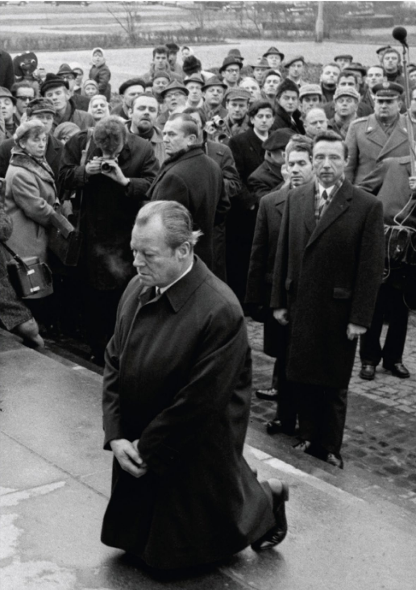

Sprache auswählen: Bitte wählen Sie Ihre Sprache über das Zahnrad-Symbol (⚙️) oben rechts auf der Seite aus.
1. In Deutschland dürfen Menschen offen etwas gegen die Regierung sagen, weil … У Німеччині люди можуть відкрито сказати щось проти уряду, бо …
2. In Deutschland können Eltern bis zum 14. Lebensjahr ihres Kindes entscheiden, ob es in der Schule am … В Німеччині батьки до досягнення дитиною 14 років можуть вирішити, чи братиме вона участь у …
3. Deutschland ist ein Rechtsstaat. Was ist damit gemeint? Німеччина є правовою державою. Що мається на увазі під цим?
4. Welches Recht gehört zu den Grundrechten in Deutschland? Яке право є одним із основних у Німеччині?
5. Wahlen in Deutschland sind frei. Was bedeutet das? Вибори в Німеччині вільні. Що це означає?
6. Wie heißt die deutsche Verfassung? Як називається німецька конституція?
7. Welches Recht gehört zu den Grundrechten, die nach der deutschen Verfassung garantiert werden? Das Recht auf … Яке право є одним із основних прав, які гарантуються Конституцією Німеччини? Право на …
8. Was steht nicht im Grundgesetz von Deutschland? Що немає у Конституції Німеччини?
9. Welches Grundrecht gilt in Deutschland nur für Ausländer / Ausländerinnen? Das Grundrecht auf … Яке основне право поширюється в Німеччині лише на іноземців? Основне право на …
10. Was ist mit dem deutschen Grundgesetz vereinbar? Що відповідає Основному закону Німеччини?
11. Wie wird die Verfassung der Bundesrepublik Deutschland genannt? Як називається конституція Федеративної Республіки Німеччина?
12. Eine Partei im Deutschen Bundestag möchte die Pressefreiheit abschaffen. Ist das möglich? Партія в німецькому Бундестазі хоче скасувати свободу преси. Чи можливо це?
13. Im Parlament steht der Begriff „Opposition“ für… У парламенті термін «опозиція» означає …
14. Meinungsfreiheit in Deutschland heißt, dass ich … Свобода слова в Німеччині означає, що я …
15. Was verbietet das deutsche Grundgesetz? Що забороняє німецька конституція?
16. Wann ist die Meinungsfreiheit in Deutschland eingeschränkt? Коли свобода слова в Німеччині обмежена?
17. Die deutschen Gesetze verbieten … Німецькі закони забороняють …
18. Welches Grundrecht ist in Artikel 1 des Grundgesetzes der Bundesrepublik Deutschland garantiert? Яке основне право гарантується у статті 1 Основного закону Федеративної Республіки Німеччина?
19. Was versteht man unter dem Recht der „Freizügigkeit“ in Deutschland? Що мається на увазі під правом «вільного пересування» у Німеччині?
20. Eine Partei in Deutschland verfolgt das Ziel, eine Diktatur zu errichten. Sie ist dann … Якщо партія в Німеччині має на меті встановлення диктатури, вона тоді …
21. Welches ist das Wappen der Bundesrepublik Deutschland?
 Який герб Федеративної Республіки Німеччина?
Який герб Федеративної Республіки Німеччина?
22. Was für eine Staatsform hat Deutschland? Яку форму державного правління має Німеччина?
23. In Deutschland sind die meisten Erwerbstätigen … У Німеччині більшість працівників …
24. Wie viele Bundesländer hat die Bundesrepublik Deutschland? Скільки федеральних земель має Федеративна Республіка Німеччина?
25. Welches ist kein Bundesland der Bundesrepublik Deutschland? Яке з наведених не є федеральною землею Федеративної Республіки Німеччина?
26. Deutschland ist …
Німеччина це …
27. Deutschland ist …
Німеччина це …
28. Wer wählt in Deutschland die Abgeordneten zum Bundestag?
Хто голосує за депутатів Бундестагу в Німеччині?
29. Welches Tier ist das Wappentier der Bundesrepublik Deutschland?
Яка тварина є геральдичною твариною Федеративної Республіки Німеччина?
30. Was ist kein Merkmal unserer Demokratie?
Що не є особливістю нашої демократії?
31. Die Zusammenarbeit von Parteien zur Bildung einer Regierung nennt man in Deutschland …
Співпраця партій для формування уряду називається у Німеччині …
32. Was ist keine staatliche Gewalt in Deutschland? Що не є державною владою у Німеччині? What is not a branch of government in Germany? ما الذي ليس فرعًا حكوميًا في ألمانيا؟ Almanya'da hangi güç devletin bir kolu değildir? Кое не е държавна власт в Германия? کدام یک شاخهای از قوهٔ دولتی در آلمان نیست؟ Šta nije državna vlast u Njemačkoj? Што не е државна власт во Германија? Co nie jest władz¹ państwową w Niemczech? Ce nu este o putere de stat în Germania? Cosa non è un potere statale in Germania? जर्मनी में कौन सी सरकारी शाखा नहीं है?
33. Welche Aussage ist richtig? In Deutschland … Яке твердження є правильним? В Німеччині … Which statement is correct? In Germany … أي عبارة صحيحة؟ في ألمانيا … Hangi ifade doğrudur? Almanya'da … Кое твърдение е вярно? В Германия … کدام عبارت صحیح است؟ در آلمان … Koja izjava je tačna? U Njemačkoj … Кое тврдење е точно? Во Германија … Które stwierdzenie jest prawdziwe? W Niemczech … Care afirmație este corectă? În Germania … Quale affermazione è corretta? In Germania … कौन सा कथन सही है? जर्मनी में …
34. Was ist Deutschland nicht? Чим не є Німеччина? What is Germany not? ما الذي ليست ألمانيا؟ Almanya ne değildir? Какво не е Германия? آلمان چیست که نیست؟ Šta Njemačka nije? Што не е Германија? Czym Niemcy nie są? Ce nu este Germania? Cosa non è la Germania? जर्मनी क्या नहीं है?
35. Womit finanziert der deutsche Staat die Sozialversicherung? Чим німецька держава фінансує соціальне забезпечення? How does the German state finance social insurance? بماذا يمول الدولة الألمانية التأمينات الاجتماعية؟ Alman devleti sosyal sigortayı nasıl finanse eder? С какво финансира германската държава социалното осигуряване? دولت آلمان چگونه بیمه اجتماعی را تأمین مالی میکند؟ Čime njemačka država financira socijalno osiguranje? Со што германската држава ја финансира социјалното осигурување? Czym państwo niemieckie finansuje ubezpieczenia społeczne? Cu ce finanțează statul german asigurările sociale? Con cosa finanzia lo stato tedesco la previdenza sociale? जर्मन राज्य सामाजिक बीमा को कैसे वित्त पोषित करता है?
36. Welche Maßnahme schafft in Deutschland soziale Sicherheit? Який захід створює соціальне забезпечення у Німеччині? Which measure creates social security in Germany? أي إجراء يخلق الأمن الاجتماعي في ألمانيا؟ Almanya'da hangi önlem sosyal güvenlik sağlar? Кое мероприятие създава социална сигурност в Германия? کدام اقدام امنیت اجتماعی را در آلمان ایجاد میکند؟ Koja mjera stvara socijalnu sigurnost u Njemačkoj? Која мерка создава социјална сигурност во Германија? Które działanie zapewnia bezpieczeństwo socjalne w Niemczech? Ce măsură creează securitate socială în Germania? Quale misura crea sicurezza sociale in Germania? जर्मनी में कौन सा उपाय सामाजिक सुरक्षा प्रदान करता है?
37. Wie werden die Regierungschefs/ Regierungschefinnen der meisten Bundesländer in Deutschland genannt? Як називаються глави урядів більшості федеральних земель у Німеччині? What are the heads of government of most federal states in Germany called? بأي اسم يُطلق على رؤساء حكومات معظم الولايات الفدرالية في ألمانيا؟ Almanya’daki çoğu eyaletin hükümet başkanlarına ne denir? Как се наричат ръководителите на правителствата в повечето провинции в Германия? سران دولت در اغلب ایالات آلمان چه نامیده میشوند؟ Kako se zovu šefovi vlada većine saveznih pokrajina u Njemačkoj? Како се нарекуваат шефовите на владите на повеќето сојузни земји во Германија? Jak nazywani są szefowie rządów większości krajów związkowych w Niemczech? Cum se numesc șefii guvernelor majorității landurilor din Germania? Come si chiamano i capi di governo della maggior parte dei Länder in Germania? जर्मनी के अधिकांश संघीय राज्यों के सरकार प्रमुखों को क्या कहा जाता है?
38. Die Bundesrepublik Deutschland ist ein demokratischer und sozialer … Федеративна Республіка Німеччина є демократичною та соціальною … The Federal Republic of Germany is a democratic and social … جمهورية ألمانيا الاتحادية هي دولة ديمقراطية واجتماعية … Almanya Cumhuriyeti, demokratik ve sosyal bir …’dir Федерална република Германия е демократична и социална … جمهوری فدرال آلمان یک کشور دمکراتیک و اجتماعی … است Savezna Republika Njemačka je demokratska i socijalna … Федерална Република Германија е демократска и социјална … Republika Federalna Niemiec jest demokratycznym i socjalnym … Republica Federală Germania este o republică democratică și socială … La Repubblica Federale di Germania è una repubblica democratica e sociale … संघीय गणराज्य जर्मनी एक लोकतांत्रिक और सामाजिक … है
39. Was hat jedes deutsche Bundesland? Що є у кожній німецькій землі? What does each German federal state have? ماذا تمتلك كل ولاية ألمانية؟ Her Alman eyaletinin ne vardır? Какво има всяка германска провинция? هر ایالت آلمانی چه چیزی دارد؟ Šta svaka njemačka pokrajina ima? Што има секоја германска држава? Co ma każde niemieckie land? Ce are fiecare land german? Cosa ha ogni land tedesco? हर जर्मन संघीय राज्य के पास क्या होता है?
40. Mit welchen Worten beginnt die deutsche Nationalhymne? З яких слів розпочинається гімн Німеччини? With which words does the German national anthem begin? بأي كلمات تبدأ النشيد الوطني الألماني؟ Alman milli marşı hangi sözlerle başlar? С кои думи започва немският национален химн? سرود ملی آلمان با چه کلماتی آغاز میشود؟ Sa kojim riječima počinje njemačka himna? Со кои зборови започнува германската национална химна? Jakimi słowami zaczyna się niemiecki hymn narodowy? Cu ce cuvinte începe imnul național german? Con quali parole inizia l'inno nazionale tedesco? जर्मन राष्ट्रीय गान किन शब्दों से शुरू होता है?
41. Warum gibt es in einer Demokratie mehr als eine Partei? Чому у демократії існує більше однієї партії? Why are there more than one party in a democracy? لماذا توجد أكثر من حزب في الديمقراطية؟ Demokraside neden birden fazla parti var? Защо в една демокрация има повече от една партия? چرا در یک دموکراسی بیش از یک حزب وجود دارد؟ Zašto u demokraciji postoji više od jedne stranke? Зошто во демократија има повеќе од една партија? Dlaczego w demokracji jest więcej niż jedna partia? De ce există mai mult de un partid într-o democrație? Perché in una democrazia ci sono più di un partito? लोकतंत्र में एक से अधिक पार्टी क्यों होती हैं?
42. Wer beschließt in Deutschland ein neues Gesetz? Хто ухвалює новий закон у Німеччині? Who enacts a new law in Germany? من يصدر قانونًا جديدًا في ألمانيا؟ Almanya’da yeni bir kanunu kim kabul eder? Кой приема нов закон в Германия? چه کسی در آلمان یک قانون جدید را تصویب میکند؟ Ko donosi novi zakon u Njemačkoj? Кој носи нов закон во Германија? Kto uchwala nową ustawę w Niemczech? Cine adoptă o lege nouă în Germania? Chi adotta una nuova legge in Germania? जर्मनी में नया कानून कौन बनाता है?
43. Wann kann in Deutschland eine Partei verboten werden? Коли партію можна заборонити в Німеччині? When can a party be banned in Germany? متى يمكن حظر حزب في ألمانيا؟ Almanya’da bir parti ne zaman yasaklanabilir? Кога една партия може да бъде забранена в Германия? در آلمان چه زمانی یک حزب میتواند ممنوع شود؟ Kada se u Njemačkoj stranka može zabraniti? Кога партија може да се забрани во Германија? Kiedy partia może zostać zakazana w Niemczech? Când poate fi interzis un partid în Germania? Quando può essere vietato un partito in Germania? जर्मनी में किसी पार्टी पर कब प्रतिबंध लगाया जा सकता है?
44. Wen kann man als Bürger/Bürgerin in Deutschland nicht direkt wählen? Кого не можна безпосередньо обрати громадянину в Німеччині? Whom can a citizen in Germany not directly elect? من لا يمكن للمواطن في ألمانيا انتخابه مباشرة؟ Almanya’da bir vatandaş doğrudan kimi seçemez? Кого не може пряко да избере гражданин в Германия? چه کسی را یک شهروند در آلمان نمیتواند مستقیماً انتخاب کند؟ Koga građanin u Njemačkoj ne može direktno birati? Кого граѓанин во Германија не може директно да избере? Kogo obywatel w Niemczech nie może bezpośrednio wybrać? Pe cine nu poate alege direct un cetățean în Germania? Chi non può eleggere direttamente un cittadino in Germania? जर्मनी में एक नागरिक सीधे किसे नहीं चुन सकता?
45. Zu welcher Versicherung gehört die Pflegeversicherung? До якої страховки належить страхування у разі тривалого догляду? To which insurance does long-term care insurance belong? إلى أي تأمين تنتمي تأمين الرعاية طويلة الأجل؟ Uzun süreli bakım sigortası hangi sigortaya aittir? Към коя застраховка принадлежи застраховката за дългосрочна грижа? بیمه مراقبتهای طولانیمدت متعلق به کدام بیمه است؟ Kojoj osiguranju pripada osiguranje dugoročne skrbi? На кое осигурување припаѓа осигурувањето за долгорочна нега? Do którego ubezpieczenia należy ubezpieczenie pielęgnacyjne? La ce asigurare aparține asigurarea pentru îngrijire pe termen lung? A quale assicurazione appartiene l'assicurazione per la cura a lungo termine? दीर्घकालिक देखभाल बीमा किस बीमा से संबंधित है?
46. Der deutsche Staat hat viele Aufgaben. Welche Aufgabe gehört dazu? У німецької держави багато завдань. Яке завдання до них належить? The German state has many duties. Which duty belongs to it? الدولة الألمانية لديها العديد من المهام. أي مهمة تنتمي إليها؟ Alman devleti birçok göreve sahiptir. Hangi görev ona aittir? Немската държава има много задачи. Коя задача ѝ принадлежи? دولت آلمان وظایف زیادی دارد. کدام وظیفه به آن تعلق دارد؟ Njemačka država ima mnogo zadataka. Koji zadatak joj pripada? Германската држава има многу задачи. Кој задолжение ѝ припаѓа? Państwo niemieckie ma wiele zadań. Które zadanie do niego należy? Statul german are multe îndatoriri. Care dintre acestea îi aparține? Lo Stato tedesco ha molti compiti. Quale compito gli appartiene? जर्मन राज्य के कई कार्य हैं। कौन सा कार्य उससे संबंधित है?
47. Der deutsche Staat hat viele Aufgaben. Welche Aufgabe gehört nicht dazu? Німецька держава має багато завдань. Яке завдання **не** належить до них? The German state has many duties. Which duty **does not** belong to it? الدولة الألمانية لديها العديد من المهام. أي مهمة **لا** تنتمي إليها؟ Alman devleti birçok göreve sahiptir. Hangi görev **ait değildir**? Немската държава има много задачи. Коя задача **не** ѝ принадлежи? دولت آلمان وظایف زیادی دارد. کدام وظیفه به آن **تعلق ندارد**؟ Njemačka država ima mnogo zadataka. Koji zadatak **ne** pripada? Германската држава има многу задачи. Кое задолжение **не** ѝ припаѓа? Państwo niemieckie ma wiele zadań. Które zadanie **nie** do niego należy? Statul german are multe îndatoriri. Care dintre acestea **nu** îi aparține? Lo Stato tedesco ha molti compiti. Quale compito **non** gli appartiene? जर्मन राज्य के कई कार्य हैं। कौन सा कार्य **इससे संबंधित नहीं है**?
48. Welches Organ gehört nicht zu den Verfassungsorganen Deutschlands? Який орган не належить конституційним органам Німеччини? Which body does not belong to Germany’s constitutional organs? أي هيئة لا تنتمي إلى الهيئات الدستورية في ألمانيا؟ Almanya’nın anayasal organlarından hangisi değildir? Кой орган не принадлежи на конституционните органи в Германия? کدام نهاد به نهادهای قانون اساسی آلمان تعلق ندارد؟ Koji organ ne pripada ustavnim organima Njemačke? Кој орган не припаѓа на уставните органи на Германија? Który organ nie należy do organów konstytucyjnych Niemiec? Ce organ nu aparține organelor constituționale ale Germaniei? Quale organo non appartiene agli organi costituzionali della Germania? कौन सा संस्थान जर्मनी के संवैधानिक संस्थाओं में शामिल नहीं है?
49. Wer bestimmt in Deutschland die Schulpolitik? Хто визначає шкільну політику в Німеччині? Who determines school policy in Germany? من يحدد سياسة المدارس في ألمانيا؟ Almanya’da okul politikasını kim belirler? Кой определя училищната политика в Германия? چه کسی سیاست مدرسه را در آلمان تعیین میکند؟ Tko određuje školsku politiku u Njemačkoj? Кој ја одредува школската политика во Германија? Kto określa politykę szkolną w Niemczech? Cine stabilește politica școlară în Germania? Chi determina la politica scolastica in Germania? जर्मनी में स्कूल नीति कौन निर्धारित करता है?
50. Die Wirtschaftsform in Deutschland nennt man … Економічну форму в Німеччині називають … The economic system in Germany is called … النظام الاقتصادي في ألمانيا يُسمى … Almanya’daki ekonomik sisteme … denir. Икономическата система в Германия се нарича … نظام اقتصادی در آلمان … نامیده میشود. Ekonomski sistem u Njemačkoj naziva se … Економскиот систем во Германија се нарекува … System gospodarczy w Niemczech nazywa się … Sistemul economic din Germania se numește … Il sistema economico in Germania si chiama … जर्मनी में आर्थिक प्रणाली को … कहा जाता है।
51. Zu einem demokratischen Rechtsstaat gehört es nicht, dass … Це не належить до демократичної правової держави, коли … In a democratic constitutional state, it does not belong that … في دولة قانون ديمقراطية، لا ينتمي ذلك إلى … Demokratik bir hukuk devletinde, şu durumlar olmaz … В демократична правова държава не принадлежи, че … در یک دولت قانونمحور دمکراتیک، این موارد نیستند که … U demokratskoj pravnoj državi ne spada da … Во демократска правна држава не припаѓа дека … W demokratycznym państwie prawnym nie należy do tego, że … În statul de drept democratic nu intră faptul că … In uno stato di diritto democratico non rientra che … एक लोकतांत्रिक संवैधानिक राज्य में, यह नहीं होता कि …
52. Was bedeutet „Volkssouveränität“? Що означає «народний суверенітет»? What does "popular sovereignty" mean? ماذا يعني مصطلح «سيادة الشعب»؟ “Halk egemenliği” ne anlama gelir? Какво означава „народен суверенитет“? «خودمختاری مردم» چه معنایی دارد؟ Šta znači „narodni suverenitet“? Што значи „народен суверенитет“? Co oznacza „suwerenność ludu”? Ce înseamnă „suveranitate populară”? Cosa significa “sovranità popolare”? “लोकतंत्रवादी सार्वभौमत्ता” का क्या अर्थ है?
53. Was bedeutet „Rechtsstaat“ in Deutschland? Що означає «правова держава» в Німеччині? What does “rule of law” mean in Germany? ماذا يعني "دولة القانون" في ألمانيا؟ Almanya’da “hukuk devleti” ne anlama gelir? Какво означава „правова държава“ в Германия? در آلمان «دولت قانونی» چه معنایی دارد؟ Šta znači „pravna država“ u Njemačkoj? Што значи „правна држава“ во Германија? Co oznacza „państwo prawa“ w Niemczech? Ce înseamnă „stat de drept” în Germania? Cosa significa “stato di diritto” in Germania? जर्मनी में “कानून का शासन” का क्या अर्थ है?
54. Was ist keine staatliche Gewalt in Deutschland? Що не є державною владою в Німеччині? Which is not a branch of government in Germany? ما الذي ليس فرعاً من فروع الحكومة في ألمانيا؟ Almanya’da hangi kuvvet devlet gücü değildir? Кое не е държавна власт в Германия? کدام یک از قوای حکومتی در آلمان نیست؟ Koja vlast nije državna vlast u Njemačkoj? Која власт не е државна власт во Германија? Co nie jest władzą państwową w Niemczech? Ce nu este o putere de stat în Germania? Quale non è un ramo del governo in Germania? जर्मनी में कौन सी शक्ति सरकारी शक्ति नहीं है?
55. Was zeigt dieses Bild?
 Що зображено на цьому фото?
What does this picture show?
ماذا يظهر في هذه الصورة؟
Bu resim neyi gösteriyor?
Какво показва тази снимка?
این عکس چه چیزی را نشان میدهد؟
Šta prikazuje ova slika?
Што прикажува оваа слика?
Co przedstawia to zdjęcie?
Ce arată această imagine?
Cosa mostra questa immagine?
यह तस्वीर क्या दिखाती है?
Що зображено на цьому фото?
What does this picture show?
ماذا يظهر في هذه الصورة؟
Bu resim neyi gösteriyor?
Какво показва тази снимка?
این عکس چه چیزی را نشان میدهد؟
Šta prikazuje ova slika?
Што прикажува оваа слика?
Co przedstawia to zdjęcie?
Ce arată această imagine?
Cosa mostra questa immagine?
यह तस्वीर क्या दिखाती है?
56. Welches Amt gehört in Deutschland zur Gemeindeverwaltung? Яка установа належить до муніципального управління в Німеччині? Which office belongs to municipal administration in Germany? أي مكتب ينتمي إلى الإدارة البلدية في ألمانيا؟ Almanya’da hangi makam yerel yönetime aittir? Кой орган е част от местната администрация в Германия? کدام دفتر به اداره شهری در آلمان تعلق دارد؟ Koji ured pripada općinskoj upravi u Njemačkoj? Која установа припаѓа на општинската управа во Германија? Który urząd należy do administracji gminnej w Niemczech? Ce instituție aparține administrației comunale în Germania? Quale ufficio appartiene all’amministrazione comunale in Germania? जर्मनी में नगरपालिका प्रशासन में कौन सा कार्यालय आता है?
57. Wer wird meistens zum Präsidenten/zur Präsidentin des Deutschen Bundestages gewählt? Хто зазвичай обирається президентом бундестагу? Who is usually elected president of the German Bundestag? من يتم انتخابه عادة رئيسًا للبوندستاغ الألماني؟ Alman Bundestag başkanı genellikle kim seçilir? Кой обикновено се избира за президент на Бундестага? چه کسی معمولاً رئیس بوندستاگ آلمان انتخاب میشود؟ Ko se obično bira za predsjednika Bundestaga? Кој обично се избира за претседател на бундестагот? Kto jest zazwyczaj wybierany na przewodniczącego Bundestagu? Cine este de obicei ales președinte al Bundestagului German? Chi viene solitamente eletto presidente del Bundestag tedesco? जर्मन बुंडेस्टाग के अध्यक्ष के रूप में आमतौर पर किसे चुना जाता है?
58. Wer ernennt in Deutschland die Minister/innen der Bundesregierung? Хто призначає міністрів Федерального уряду в Німеччині? Who appoints the federal ministers in Germany? من يعين وزراء الحكومة الفيدرالية في ألمانيا؟ Almanya’da federal hükümetin bakanlarını kim atar? Кой назначава федералните министри в Германия? چه کسی وزرای دولت فدرال را در آلمان منصوب میکند؟ Ko imenuje savezne ministre u Njemačkoj? Кој ги именува федералните министри во Германија? Kto mianuje ministrów federalnych w Niemczech? Cine numește miniștrii federali în Germania? Chi nomina i ministri federali in Germania? जर्मनी में संघीय मंत्रियों को किसे नियुक्त करता है?
59. Vor wie vielen Jahren gab es erstmals eine jüdische Gemeinde auf dem Gebiet des heutigen Deutschlands? Скільки років тому вперше з’явилася єврейська громада на території сучасної Німеччини? How many years ago was there a Jewish community for the first time on the territory of today’s Germany? منذ كم عام كان هناك مجتمع يهودي لأول مرة على أراضي ألمانيا الحالية؟ Bugünkü Almanya topraklarında ilk kez bir Yahudi cemaati kaç yıl önce vardı? Преди колко години за първи път е имало еврейска общност на територията на днешна Германия? چند سال پیش برای اولین بار یک جامعه یهودی در قلمرو آلمان کنونی وجود داشت؟ Prije koliko godina je prvi put postojala jevrejska zajednica na području današnje Njemačke? Пред колку години за првпат постоеше еврејска заедница на територијата на денешна Германија? Ile lat temu po raz pierwszy istniała żydowska społeczność na terytorium dzisiejszych Niemiec? Cu câți ani în urmă a existat pentru prima dată o comunitate evreiască pe teritoriul Germaniei de astăzi? Quanti anni fa esisteva per la prima volta una comunità ebraica sul territorio dell’odierna Germania? आज के जर्मनी के क्षेत्र में पहली बार यहूदी समुदाय कितने साल पहले मौजूद था?
60. In Deutschland gehören der Bundestag und der Bundesrat zur … В Німеччині Бундестаг і Бундесрат належать до … In Germany the Bundestag and the Bundesrat belong to the … في ألمانيا ينتمي البوندستاغ والبوندسرات إلى … Almanya’da Bundestag ve Bundesrat şunlardan birine aittir … В Германия Бундестагът и Бундесратът принадлежат на … در آلمان بوندستاگ و بوندسرات متعلق به … هستند U Njemačkoj Bundestag i Bundesrat pripadaju … Во Германија Бундестагот и Бундесратот припаѓаат на … W Niemczech Bundestag i Bundesrat należą do … În Germania Bundestagul și Bundesratul aparțin puterii … In Germania il Bundestag e il Bundesrat appartengono al potere … जर्मनी में Bundestag और Bundesrat शक्ति के … भाग हैं
61. Was bedeutet „Volkssouveränität“? Що означає «народний суверенітет»? What does “popular sovereignty” mean? ماذا يعني "السيادة الشعبية"؟ “Halk egemenliği” ne anlama gelir? Какво означава „народен суверенитет“? «حاکمیت مردم» به چه معناست؟ Šta znači „narodni suverenitet“? Што значи „народен суверенитет“? Co oznacza „suwerenność ludu”? Ce înseamnă „suveranitatea populară”? Cosa significa “sovranità popolare”? “लोकतांत्रिक सर्वोच्चता” का क्या अर्थ है?
62. Wenn das Parlament eines deutschen Bundeslandes gewählt wird, nennt man das … Коли обирається парламент німецької федеральної землі, це називається … When the parliament of a German federal state is elected, this is called … عندما يتم انتخاب برلمان ولاية ألمانية، يُسمى ذلك … Bir Alman federal eyaletinin parlamentosu seçildiğinde buna … denir Когато се избира парламентът на германска провинция, това се нарича … وقتی پارلمان یک ایالت فدرال آلمان انتخاب میشود، این را … مینامند Kada se bira parlament jedne njemačke savezne zemlje, to se zove … Кога се избира парламентот на германска покраина, тоа се нарекува … Gdy wybierany jest parlament niemieckiego kraju związkowego, nazywa się to … Când este ales parlamentul unui land german, acesta se numește … Quando viene eletto il parlamento di un land tedesco, si chiama … जब जर्मन संघीय राज्य की संसद का चुनाव होता है, इसे कहते हैं …
63. Was gehört in Deutschland nicht zur Exekutive? Що в Німеччині не належить до виконавчої влади? What does not belong to the executive branch in Germany? ما الذي لا ينتمي إلى السلطة التنفيذية في ألمانيا؟ Almanya’da yürütme yetkisine ne dahil değildir? Какво не принадлежи към изпълнителната власт в Германия? چه چیزی در آلمان متعلق به قوه مجریه نیست؟ Šta ne pripada izvršnoj vlasti u Njemačkoj? Што не припаѓа на извршната власт во Германија? Co nie należy do władzy wykonawczej w Niemczech? Ce nu aparține puterii executive în Germania? Cosa non appartiene al potere esecutivo in Germania? जर्मनी में कार्यकारी शाखा में क्या शामिल नहीं है?
64. Die Bundesrepublik Deutschland ist heute gegliedert in … Федеративна Республіка Німеччина сьогодні поділена на … The Federal Republic of Germany is today divided into … تنقسم جمهورية ألمانيا الاتحادية اليوم إلى … Almanya Federal Cumhuriyeti bugün şu şekilde bölünmüştür … Федерална република Германия днес е разделена на … جمهوری فدرال آلمان امروزه به … تقسیم شده است Savezna Republika Njemačka je danas podijeljena na … Сојузната Република Германија денес е поделена на … Republika Federalna Niemiec dzisiaj jest podzielona na … Republica Federală Germania este astăzi împărțită în … La Repubblica Federale di Germania è oggi suddivisa in … आज जर्मन संघीय गणराज्य में विभाजन है …
65. Es gehört nicht zu den Aufgaben des Deutschen Bundestages, … Це не входить до завдань Німецького Бундестагу, … This is not one of the tasks of the German Bundestag, … هذا لا ينتمي إلى مهام البوندستاغ الألماني، … Bu, Alman Bundestagı'nın görevlerinden biri değildir, … Това не е част от задачите на Немския Бундестаг, … این یکی از وظایف بوندستاگ آلمان نیست، … Ovo nije jedan od zadataka njemačkog Bundestaga, … Ова не е една од задачите на германскиот Бундестаг, … To nie należy do zadań niemieckiego Bundestagu, … Acesta nu este una dintre atribuțiile Bundestag-ului german, … Questo non rientra tra i compiti del Bundestag tedesco, … यह जर्मन बुंडेस्टाग के कार्यों में से एक नहीं है, …
66. Welche Städte haben die größten jüdischen Gemeinden in Deutschland? Які міста мають найбільші єврейські громади в Німеччині? Which cities have the largest Jewish communities in Germany? ما هي المدن التي تضم أكبر الجاليات اليهودية في ألمانيا؟ Almanya’da en büyük Yahudi topluluklarına hangi şehirler ev sahipliği yapmaktadır? Кои градове имат най-големите еврейски общности в Германия? بزرگترین جوامع یهودیان در آلمان در کدام شهرها قرار دارند؟ Koji gradovi imaju najveće jevrejske zajednice u Njemačkoj? Кои градови имаат најголеми еврејски заедници во Германија? Które miasta mają największe społeczności żydowskie w Niemczech? Care orașe au cele mai mari comunități evreiești din Germania? Quali città ospitano le più grandi comunità ebraiche in Germania? जर्मनी में सबसे बड़ी यहूदी समुदायों वाले शहर कौन से हैं?
67. Was ist in Deutschland vor allem eine Aufgabe der Bundesländer? Що в Німеччині передусім є завданням федеральних земель? What is primarily the responsibility of the federal states in Germany? ما هي المسؤولية الأساسية للولايات الاتحادية في ألمانيا؟ Almanya’da eyaletlerin öncelikle görevi nedir? Коя е основната задача на федералните провинции в Германия? وظیفه اصلی ایالات فدرال در آلمان چیست؟ Šta je prvenstveno zadatak saveznih pokrajina u Njemačkoj? Која е главната задача на сојузните покраини во Германија? Jakie jest przede wszystkim zadanie krajów związkowych w Niemczech? Care este în primul rând responsabilitatea landurilor federale în Germania? Qual è principalmente il compito dei Länder in Germania? जर्मनी में फेडरल राज्यों (Bundesländer) का मुख्य कार्य क्या है?
68. Warum kontrolliert der Staat in Deutschland das Schulwesen? Чому держава в Німеччині контролює систему освіти? Why does the state in Germany oversee the school system? لماذا تراقب الدولة في ألمانيا نظام المدارس؟ Almanya’da devlet neden okul sistemini denetler? Защо държавата в Германия контролира училищната система? چرا دولت در آلمان سیستم مدرسه را کنترل میکند؟ Zašto država u Njemačkoj nadzire školski sistem? Зошто државата во Германија го контролира образовниот систем? Dlaczego państwo w Niemczech kontroluje system szkolny? De ce statul din Germania supraveghează sistemul școlar? Perché lo Stato in Germania controlla il sistema scolastico? जर्मनी में राज्य स्कूल प्रणाली की निगरानी क्यों करता है?
69. Die Bundesrepublik Deutschland hat einen dreistufigen Verwaltungsaufbau. Wie heißt die unterste politische Stufe? Федеративна Республіка Німеччина має трирівневу адміністративну структуру. Як називається найнижчий політичний рівень? The Federal Republic of Germany has a three-tier administrative system. What is the lowest political level called? جمهورية ألمانيا الاتحادية لديها هيكل إداري من ثلاث طبقات. ما هو أدنى مستوى سياسي؟ Almanya Federal Cumhuriyeti üç aşamalı bir idari yapıya sahiptir. En alt siyasi seviye nedir? Федерална република Германия има тристепенна административна структура. Как се нарича най-ниското политическо ниво? جمهوری فدرال آلمان دارای ساختار اداری سهمرحلهای است. پایینترین سطح سیاسی چیست؟ Savezna Republika Njemačka ima trostupanjski upravni sistem. Kako se zove najniži politički nivo? Соjузна Република Германија има тростепена административна структура. Како се вика најниското политичко ниво? Republika Federalna Niemiec ma trójstopniową strukturę administracyjną. Jak nazywa się najniższy szczebel polityczny? Republica Federală Germania are o structură administrativă pe trei niveluri. Cum se numește cel mai de jos nivel politic? La Repubblica Federale di Germania ha una struttura amministrativa a tre livelli. Qual è il livello politico più basso? जर्मनी संघीय गणराज्य में तीन-स्तरीय प्रशासनिक ढांचा है। सबसे निचला राजनीतिक स्तर क्या कहलाता है?
70. Der deutsche Bundespräsident Gustav Heinemann gibt Helmut Schmidt 1974 die Ernennungsurkunde zum deutschen Bundeskanzler. Was gehört zu den Aufgaben der deutschen Bundespräsidentin/des deutschen Bundespräsidenten? Федеральний президент Німеччини Густав Гайнеманн вручив Гельмуту Шмідту в 1974 році грамоту про призначення на посаду федерального канцлера. Які обовʼязки належать до завдань федерального президента Німеччини? In 1974, the German Federal President Gustav Heinemann gave Helmut Schmidt the certificate of appointment as Federal Chancellor. What are the duties of the Federal President of Germany? في عام 1974، قدّم الرئيس الألماني غوستاف هاينمان شهادة التعيين إلى هيلموت شميت كمستشار ألماني. ما هي مهام الرئيس/ة الاتحادي/ة الألماني/ة؟ 1974 yılında Alman Cumhurbaşkanı Gustav Heinemann, Helmut Schmidt'e Almanya Şansölyesi atama belgesini verdi. Alman Cumhurbaşkanının görevleri nelerdir? През 1974 г. германският федерален президент Густав Хайнеман връчва на Хелмут Шмит удостоверение за назначение за федерален канцлер. Кои са задачите на федералния президент на Германия? در سال ۱۹۷۴، رئیسجمهور آلمان، گوستاو هاینمان، حکم انتصاب هلموت اشمیت بهعنوان صدراعظم آلمان را اعطا کرد. وظایف رئیسجمهور آلمان چیست؟ Godine 1974. njemački predsjednik Gustav Heinemann uručuje Helmutu Schmidtu dokument o imenovanju za njemačkog kancelara. Koji su zadaci njemačkog predsjednika/predsjednice? Во 1974 година, германскиот сојузен претседател Густав Хајнеман му ја врачува на Хелмут Шмит потврдата за именување за сојузен канцелар. Кои се задачите на германскиот сојузен претседател? W 1974 roku prezydent Niemiec Gustav Heinemann wręcza Helmutowi Schmidtowi akt mianowania na kanclerza Niemiec. Jakie są zadania niemieckiego prezydenta federalnego? În 1974, președintele federal german Gustav Heinemann îi înmânează lui Helmut Schmidt certificatul de numire în funcția de cancelar federal. Care sunt atribuțiile președintelui federal al Germaniei? Nel 1974 il presidente federale tedesco Gustav Heinemann consegna a Helmut Schmidt il certificato di nomina a cancelliere federale. Quali sono i compiti del presidente federale tedesco? 1974 में जर्मन संघीय राष्ट्रपति गुस्ताव हैनेमान ने हेल्मुट श्मिट को जर्मन चांसलर नियुक्त करने का प्रमाणपत्र सौंपा। जर्मन संघीय राष्ट्रपति के कर्तव्यों में क्या शामिल है?

71. Wo hält sich die deutsche Bundeskanzlerin/der deutsche Bundeskanzler am häufigsten auf? Де найчастіше перебуває федеральна канцлерка/федеральний канцлер Німеччини? Where is the German Federal Chancellor most often located? أين تتواجد المستشارة/المستشار الألماني في أغلب الأحيان؟ Almanya Başbakanı en sık nerede bulunur? Къде се намира най-често германският канцлер? صدر اعظم آلمان بیشتر اوقات در کجا حضور دارد؟ Gdje se najčešće nalazi njemačka savezna kancelarka/kancelar? Каде најчесто престојува германскиот канцелар/канцеларка? Gdzie najczęściej przebywa kanclerz Niemiec? Unde se află cel mai des Cancelarul Germaniei? Dove si trova più spesso il/la cancelliere/a federale tedesco/a? जर्मन चांसलर सबसे अधिक कहां रहते हैं?
72. Wie heißt die jetzige Bundeskanzlerin/der jetzige Bundeskanzler von Deutschland? Як звати нинішнього федерального канцлера Німеччини? What is the name of the current Federal Chancellor of Germany? ما اسم مستشار/مستشارة ألمانيا الحالية؟ Almanya'nın şu anki başbakanının adı nedir? Кой е настоящият канцлер на Германия? نام وزیر فدرال فعلی آلمان چیست؟ Kako se zove trenutni savezni kancelar Njemačke? Кој е сегашниот канцелар на Германија? Jak nazywa się obecny kanclerz Niemiec? Cum se numește actualul cancelar federal al Germaniei? Come si chiama l'attuale cancelliere federale della Germania? जर्मन के वर्तमान चांसलर का क्या नाम है?
73. Die beiden größten Fraktionen im Deutschen Bundestag heißen zurzeit ... Дві найбільші фракції в Бундестазі зараз називаються ... The two largest parliamentary groups in the Bundestag are currently called ... أكبر كتلتين في البوندستاغ الألماني حالياً هما ... Almanya Federal Meclisi'ndeki en büyük iki grup şu anda ... olarak adlandırılmaktadır Двете най-големи фракции в Бундестага сега се наричат ... دو فراکسیون بزرگ در پارلمان آلمان در حال حاضر به نام ... هستند Dva najveća kluba zastupnika u njemačkom Bundestagu trenutno se zovu ... Двете најголеми пратенички групи во Бундестагот во моментов се нарекуваат ... Dwie największe frakcje w Bundestagu nazywają się obecnie ... Cele două mai mari grupuri parlamentare din Bundestag se numesc în prezent ... I due maggiori gruppi parlamentari nel Bundestag si chiamano attualmente ... जर्मन संसद की दो सबसे बड़ी पार्टियाँ वर्तमान में कहलाती हैं ...
74. Wie heißt das Parlament für ganz Deutschland? Як називається парламент для всієї Німеччини? What is the name of the parliament for all of Germany? ما اسم البرلمان لجميع أنحاء ألمانيا؟ Tüm Almanya için parlamento nasıl adlandırılır? Как се нарича парламентът за цяла Германия? نام پارلمان برای کل آلمان چیست؟ Kako se zove parlament za cijelu Njemačku? Како се нарекува парламентот за цела Германија? Jak nazywa się parlament całych Niemiec? Cum se numește parlamentul pentru întreaga Germanie? Come si chiama il parlamento per tutta la Germania? पूरे जर्मनी के लिए संसद को क्या कहा जाता है?
75. Wie heißt Deutschlands heutiges Staatsoberhaupt? Як називається чинний глава держави Німеччини? What is the name of Germany’s current head of state? ما اسم رئيس الدولة الحالي لألمانيا؟ Almanya’nın şu anki devlet başkanının adı nedir? Как се казва сегашният държавен глава на Германия? نام رئیس دولت فعلی آلمان چیست؟ Kako se zove trenutni šef države Njemačke? Како се вика сегашниот претседател на Германија? Jak nazywa się obecna głowa państwa Niemiec? Cum se numește actualul șef de stat al Germaniei? Come si chiama l'attuale capo di Stato della Germania? जर्मनी के वर्तमान राष्ट्राध्यक्ष का नाम क्या है?
76. Was bedeutet die Abkürzung CDU in Deutschland? Що означає абревіатура CDU у Німеччині? What does the abbreviation CDU mean in Germany? ماذا تعني اختصار CDU في ألمانيا؟ Almanya’da CDU kısaltması ne anlama gelir? Какво означава съкращението CDU в Германия? مخفف CDU در آلمان به چه معناست؟ Šta znači skraćenica CDU u Njemačkoj? Што значи кратенката CDU во Германија? Co oznacza skrót CDU w Niemczech? Ce înseamnă abrevierea CDU în Germania? Cosa significa l'abbreviazione CDU in Germania? जर्मनी में CDU का संक्षेप क्या है?
77. Was ist die Bundeswehr? Що таке Бундесвер? What is the Bundeswehr? ما هي البوندسفير؟ Bundeswehr nedir? Какво е Бундесвера? بوندسوئر چیست؟ Šta je Bundeswehr? Што е Бундесверот? Czym jest Bundeswehra? Ce este Bundeswehr? Cos'è la Bundeswehr? बुंडेसवेहर क्या है?
78. Was bedeutet die Abkürzung SPD? Що означає абревіатура SPD? What does the abbreviation SPD mean? ماذا تعني اختصار SPD؟ SPD kısaltması ne anlama geliyor? Какво означава съкращението SPD? مخفف SPD به چه معناست؟ Šta znači skraćenica SPD? Што значи скратеницата SPD? Co oznacza skrót SPD? Ce înseamnă abrevierea SPD? Cosa significa l'abbreviazione SPD? SPD की संक्षिप्ति क्या अर्थ है?
79. Was bedeutet die Abkürzung FDP in Deutschland? Що означає абревіатура FDP у Німеччині? What does the abbreviation FDP mean in Germany? ماذا تعني اختصار FDP في ألمانيا؟ Almanya'da FDP kısaltması ne anlama gelir? Какво означава съкращението FDP в Германия? مخفف FDP در آلمان به چه معناست؟ Šta znači skraćenica FDP u Njemačkoj? Што значи кратенката FDP во Германија? Co oznacza skrót FDP w Niemczech? Ce înseamnă abrevierea FDP în Germania? Cosa significa l'abbreviazione FDP in Germania? जर्मनी में FDP का संक्षेप क्या दर्शाता है?
80. Welches Gericht in Deutschland ist zuständig für die Auslegung des Grundgesetzes? Який суд у Німеччині відповідає за тлумачення Основного закону? Which court in Germany is responsible for interpreting the Basic Law? ما هو المحكمة في ألمانيا المختصة بتفسير القانون الأساسي؟ Almanya'da Anayasayı yorumlamaktan sorumlu mahkeme hangisidir? Кой съд в Германия отговаря за тълкуването на Основния закон? کدام دادگاه در آلمان مسئول تفسیر قانون اساسی است؟ Koji sud u Njemačkoj je nadležan za tumačenje Osnovnog zakona? Кој суд во Германија е надлежен за толкување на Основниот закон? Który sąd w Niemczech jest odpowiedzialny za interpretację ustawy zasadniczej? Ce instanță din Germania este responsabilă pentru interpretarea Legii fundamentale? Quale tribunale in Germania è responsabile dell'interpretazione della Legge fondamentale? जर्मनी में कौन चेतनी की व्याख्या के लिए कौन कौन स्थ उत्तराधिक है?
81. Wer wählt die Bundeskanzlerin / den Bundeskanzler in Deutschland? Хто обирає федерального канцлера в Німеччині? Who elects the Federal Chancellor in Germany? من ينتخب المستشارة/المستشار في ألمانيا؟ Almanya'da başbakanı kim seçer? Кой избира федералния канцлер в Германия? چه کسی صدراعظم آلمان را انتخاب میکند؟ Ko bira kancelarku/kancelara u Njemačkoj? Кој го избира канцеларот во Германија? Kto wybiera kanclerza Niemiec? Cine alege cancelarul federal în Germania? Chi elegge il Cancelliere federale in Germania? जर्मनी में संघीय चांसलर का चुनाव कौन करता है?
82. Wer leitet das deutsche Bundeskabinett? Хто очолює німецький федеральний уряд (кабінет міністрів)? Who heads the German federal cabinet? من يرأس مجلس الوزراء الاتحادي الألماني؟ Alman federal kabinesine kim başkanlık eder? Кой ръководи германския федерален кабинет? چه کسی کابینه فدرال آلمان را رهبری میکند؟ Ko predvodi njemačku saveznu vladu (kabinet)? Кој го води германскиот федерален кабинет? Kto kieruje niemieckim rządem federalnym? Cine conduce cabinetul federal german? Chi dirige il gabinetto federale tedesco? जर्मन संघीय कैबिनेट का नेतृत्व कौन करता है?
83. Wer wählt die deutsche Bundeskanzlerin/den deutschen Bundeskanzler? Хто обирає федерального канцлера Німеччини? Who elects the German Federal Chancellor? من ينتخب مستشار/مستشارة ألمانيا؟ Almanya şansölyesini/şansölyesini kim seçer? Кой избира федералния канцлер на Германия? گزیر که صدراعظم آلمان را انتخاب میکند؟ Ko bira njemačkog saveznog kancelara/kancelarku? Кој го избира германскиот федерален канцелар? Kto wybiera niemieckiego kanclerza federalnego? Cine alege Cancelarul federal german? Chi elegge il Cancelliere federale tedesco? जर्मन की घंट चांसलर कोन चुनता है?
84. Welche Hauptaufgabe hat die deutsche Bundespräsidentin/der deutsche Bundespräsident? Яке головне завдання федерального президента Нiмеччини? What is the main task of the German Federal President? ما هو المهمة الرئيسية لرئيس/ة الاتحاد الألمانية؟ Almanya Federal Başkanının başlıca görevi nedir? Каква е основната задача на федералния президент на Германия? وظیفه اصلی رئیس جمهور آلمان چیست؟ Koja je glavna zadaća saveznog predsjednika Njemačke? Која е главната задача на союзниот претседател на Германија? Jakie jest główne zadanie niemieckiego prezydenta federalnego? Care este sarcina principală a președintelui federal al Germaniei? Qual è il compito principale del Presidente federale tedesco? जर्मनी के घनतंत्र राष्ट्रपति का मुख्य कार्य क्या है?
85. Wer bildet den deutschen Bundesrat? Хто формує Бундесрат Німеччини? Who forms the German Bundesrat? من يشكل المجلس الاتحادي الألماني؟ Almanya Bundesrat’ını kim oluşturur? Кой съставя Германския Бундесрат? چه کسانی شورای فدرال آلمان را تشکیل میدهند؟ Ko čini njemački Bundesrat? Кој го формира германскиот Бундесрат? Kto tworzy niemiecki Bundesrat? Cine formează Bundesratul german? Chi forma il Bundesrat tedesco? जर्मन बुंडेसराट का गठन कौन करता है?
86. Wer wählt in Deutschland die Bundespräsidentin/den Bundespräsidenten? Хто обирає федерального президента в Німеччині? Who elects the Federal President in Germany? من ينتخب رئيس الجمهورية الألمانية؟ Almanya'da Federal Başkanı kim seçer? Кой избира федералния президент в Германия? رئیس جمهور آلمان را کسی انتخاب میکند؟ Ko bira saveznog predsjednika u Njemačkoj? Кој го избира федералниот претседател во Германија? Kto wybiera prezydenta federalnego Niemiec? Cine alege președintele federal al Germaniei? Chi elegge il presidente federale in Germania? जर्मनी का घत राष्ट्रपति कौन चुनता है?
87. Wer ist das Staatsoberhaupt der Bundesrepublik Deutschland? Хто є главою держави Федеративної Республіки Німеччина? Who is the head of state of the Federal Republic of Germany? من هو رئيس دولة جمهورية ألمانيا الاتحادية؟ Almanya Federal Cumhuriyeti'nin devlet başkanı kimdir? Кой е държавният глава на Федерална република Германия? رئیس کشور جمهوری فدرال آلمان چه کسی است؟ Ko je šef države Savezne Republike Njemačke? Кој е шеф на државата на Сојузна Република Германија? Kto jest głową państwa Republiki Federalnej Niemiec? Cine este șeful statului Republicii Federale Germania? Chi è il capo di Stato della Repubblica Federale di Germania? जर्मनी संघीय गणराज्य का राष्ट्राध्यक्ष कौन है?
88. Die parlamentarische Opposition im Deutschen Bundestag … Парламентська опозиція в Німецькому Бундестазі … The parliamentary opposition in the German Bundestag … المعارضة البرلمانية في البوندستاغ الألماني … Alman Federal Meclisi'ndeki parlamento muhalefeti … Парламентарната опозиция в Германския Бундестаг … اپوزیسیون پارلمانی در بوندستاگ آلمان … Parlamentarna opozicija u njemačkom Bundestagu … Парламентарната опозиција во германскиот Бундестаг … Opozycja parlamentarna w niemieckim Bundestagu … Opoziția parlamentară în Bundestagul german … L'opposizione parlamentare nel Bundestag tedesco … जर्मन बुंडेस्टाग में संसदीय विपक्ष …
89. Wie nennt man in Deutschland die Vereinigung von Abgeordneten einer Partei im Parlament? Як у Німеччині називається об'єднання депутатів партії в парламенті? What is the name in Germany for the association of members of parliament from one party? ماذا يُطلق في ألمانيا على اتحاد أعضاء البرلمان من حزب واحد؟ Almanya'da bir partinin milletvekillerinin birliğine ne ad verilir? Как се нарича в Германия обединението на депутати от една партия в парламента? در آلمان به اتحاد نمایندگان یک حزب در پارلمان چه میگویند؟ Kako se u Njemačkoj zove udruženje zastupnika jedne stranke u parlamentu? Како се нарекува здружувањето на пратеници од една партија во парламентот во Германија? Jak nazywa się w Niemczech zrzeszenie posłów jednej partii w parlamencie? Cum se numește în Germania asociația deputaților unui partid în parlament? Come si chiama in Germania l'associazione dei deputati di un partito in parlamento? जर्मन में एक दल की चुनावास की संसद को क्या कहा जाता है?
90. Die deutschen Bundesländer wirken an der Gesetzgebung des Bundes mit durch … Федеральні землі Німеччини беруть участь у законодавчій діяльності через … The German federal states participate in the legislation of the Federation through … تشارك الولايات الألمانية في التشريع الاتحادي من خلال ... Almanya'daki eyaletler federal yasama sürecine ... aracılığıyla katılır. Германските федерални провинции участват в законодателната дейност на федерацията чрез … ایالتهای آلمان از طریق ... در قانونگذاری فدرال مشارکت میکنند. Njemačke savezne zemlje učestvuju u zakonodavstvu saveza putem … Сојузните држави на Германија учествуваат во законодавството преку … Niemieckie kraje związkowe uczestniczą w stanowieniu prawa federalnego poprzez … Landurile germane participă la procesul legislativ federal prin … I Länder tedeschi partecipano alla legislazione federale attraverso … जर्मनी की संघीय राज्य संघ की कानून प्रक्रिया में ... के माध्यम से भाग लेते हैं।
91. Deutschland kann ein Regierungswechsel in einem Bundesland Auswirkungen auf die Bundespolitik haben. Das Regieren wird … У Німеччині зміна уряду у федеральній землі може вплинути на федеральну політику. Уряд буде … In Germany, a change of government in a federal state can have an impact on federal politics. Governing will become … في ألمانيا، قد يكون لتغيير الحكومة في إحدى الولايات الفيدرالية تأثير على السياسة الفيدرالية. سيصبح الحكم … Almanya'da bir federal eyalette hükümet değişikliği federal siyaseti etkileyebilir. Yönetim … olacaktır В Германия промяна на правителството в една федерална провинция може да повлияе на федералната политика. Управлението ще стане … در آلمان، تغییر دولت در یکی از ایالتهای فدرال میتواند بر سیاستهای فدرال تأثیر بگذارد. حکومت … خواهد شد U Njemačkoj promjena vlade u jednoj saveznoj pokrajini može utjecati na saveznu politiku. Vladanje će postati … Во Германија, промена на влада во една сојузна покраина може да влијае на федералната политика. Управувањето ќе стане … W Niemczech zmiana rządu w jednym kraju związkowym może wpłynąć na politykę federalną. Rządzenie stanie się … În Germania, o schimbare a guvernului într-un stat federal poate afecta politica federală. Guvernarea va deveni … In Germania, un cambio di governo in uno Stato federale può avere un impatto sulla politica federale. Il governo diventerà … जर्मनी में, एक संघीय राज्य में सरकार परिवर्तन का प्रभाव संघीय राजनीति पर पड़ सकता है। शासन … हो जाएगा
92. Was bedeutet die Abkürzung CSU in Deutschland? Що означає скорочення CSU у Німеччині? What does the abbreviation CSU mean in Germany? ماذا يعني الاختصار CSU في ألمانيا؟ Almanya'da CSU kısaltması ne anlama geliyor? Какво означава съкращението CSU в Германия? مخفف CSU در آلمان چه معنی دارد؟ Šta znači skraćenica CSU u Njemačkoj? Што значи скратеницата CSU во Германија? Co oznacza skrót CSU w Niemczech? Ce înseamnă abrevierea CSU în Germania? Cosa significa l'abbreviazione CSU in Germania? जर्मनी में CSU संक्षिप्त रूप का क्या अर्थ है?
93. Je mehr „Zweitstimmen“ eine Partei bei einer Bundestagswahl bekommt, desto … Чим більше "других голосів" отримує партія на федеральних виборах, тим більше … The more “second votes” a party receives in a Bundestag election, the more … كلما حصل حزب على المزيد من الأصوات الثانية في انتخابات البوندستاغ، كلما … Bir parti federal seçimlerde ne kadar çok “ikinci oy” alırsa, o kadar … Колкото повече “вторични гласове” получи партия на федералните избори, толкова … هر چه “آراء دوم” یک حزب در انتخابات بوندستاگ بیشتر باشد، … Što više “drugih glasova” stranka dobije na izborima za Bundestag, to će … Колку повеќе „втори гласови“ една партија добие на изборите за Бундестаг, толку повеќе … Im więcej „drugich głosów“ partia otrzyma w wyborach do Bundestagu, tym więcej … Cu cât o partidă primește mai multe „voturi secundare” la alegerile pentru Bundestag, cu atât mai multe … Più voti “secondari” riceve un partito alle elezioni del Bundestag, più … जितनी अधिक “दूसरी मतों” एक पार्टी बंडेसटैग चुनाव में प्राप्त करती है, उतना ही …
94. Ab welchem Alter darf man in Deutschland an der Wahl zum Deutschen Bundestag teilnehmen? У якому віці ви можете брати участь у виборах Німеччини до Бундестагу? At what age may one participate in the election to the German Bundestag? في أي عمر يُسمح بالمشاركة في الانتخابات إلى البوندستاغ الألماني؟ Almanya Federal Meclisi seçimlerine hangi yaşta katılmaya izin verilir? На каква възраст е разрешено да участвате в изборите за германския Бундестаг? در چه سنی مجاز به شرکت در انتخابات بوندستگ آلمان هستید؟ U kojoj dobi je dopušteno sudjelovati na izborima za njemački Bundestag? На која возраст е дозволено да учествувате на изборите за германскиот Бундестаг? W jakim wieku można brać udział w wyborach do niemieckiego Bundestagu? La ce vârstă este permis să participați la alegerile pentru Bundestagul german? A quale età è consentito partecipare alle elezioni per il Bundestag tedesco? किस आयु में जर्मन बुंडेस्टाग के चुनाव में भाग लेने की अनुमति है?
95. Was gilt für die meisten Kinder in Deutschland? Що вірно для більшості дітей у Німеччині? What applies to most children in Germany? ما ينطبق على معظم الأطفال في ألمانيا؟ Almanya'daki çoğu çocuk için geçerli olan nedir? Какво важи за повечето деца в Германия? برای بیشتر کودکان در آلمان چه چیزی صدق میکند؟ Šta važi za većinu djece u Njemačkoj? Што важи за повеќето деца во Германија? Co dotyczy większości dzieci w Niemczech? Ce se aplică pentru majoritatea copiilor din Germania? Cosa vale per la maggior parte dei bambini in Germania? जर्मनी में अधिकांश बच्चों के लिए क्या लागू होता है?
96. Wie kann jemand, der den Holocaust leugnet, bestraft werden? Як можна покарати того, хто заперечує Голокост? How can someone who denies the Holocaust be punished? كيف يمكن معاقبة شخص ينكر الهولوكوست؟ Holokost'u inkar eden bir kişi nasıl cezalandırılabilir? Как може да бъде наказан човек, който отрича Холокоста? چگونه میتوان کسی را که هولوکاست را انکار میکند مجازات کرد؟ Kako se može kazniti osoba koja negira Holokaust? Како може да се казни некој кој го негира Холокаустот? Jak można ukarać kogoś, kto zaprzecza Holocaustowi? Cum poate fi pedepsită o persoană care neagă Holocaustul? Come può essere punita una persona che nega l'Olocausto? एक व्यक्ति जिसे होलोकॉस्ट से इंकार करने पर कैसे सज़ा दी जा सकती है?
97. Was bezahlt man in Deutschland automatisch, wenn man fest angestellt ist? Що ви автоматично платите у Німеччині, якщо ви постійно працюєте? What do you automatically pay in Germany when you are permanently employed? ماذا تدفع تلقائيًا في ألمانيا عندما تكون موظفًا دائمًا؟ Almanya'da sürekli istihdam edildiğinizde otomatik olarak ne ödersiniz? Какво плащате автоматично в Германия, ако сте постоянен служител? در آلمان وقتی بهطور دائم استخدام هستید، چه چیزی را بهطور خودکار پرداخت میکنید؟ Šta automatski plaćate u Njemačkoj kada ste stalno zaposleni? Што автоматски плаќате во Германија ако сте постојано вработени? Co automatycznie płacisz w Niemczech, gdy jesteś zatrudniony na stałe? Ce plătiți automat în Germania atunci când sunteți angajat cu contract permanent? Cosa si paga automaticamente in Germania quando si è impiegati a tempo indeterminato? जर्मनी में, जब आप स्थायी रूप से नियोजित होते हैं, तो आप स्वचालित रूप से क्या भुगतान करते हैं?
98. Wenn Abgeordnete im Deutschen Bundestag ihre Fraktion wechseln … Коли депутати в німецькому Бундестазі змінюють свою політичну фракцію, … When members of the German Bundestag change their parliamentary group, … عندما يغير أعضاء البوندستاغ الألماني كتلهم البرلمانية، … Almanya Federal Meclisi’ndeki milletvekilleri fraksiyonlarını değiştirdiklerinde, … Когато депутатите в Германския Бундестаг сменят фракцията си, … وقتی نمایندگان در بوندستاگ آلمان فراکسیون خود را تغییر میدهند، … Kada zastupnici u Njemačkom Bundestagu promijene svoju frakciju, … Кога пратениците во германскиот Бундестаг ќе ја сменат својата фракција, … Kiedy posłowie w niemieckim Bundestagu zmienią swoją frakcję, … Când membrii Bundestagului german își schimbă fracțiunea, … Quando i membri del Bundestag tedesco cambiano il loro gruppo parlamentare, … जब जर्मन बुंडेस्टाग के सदस्य अपना संसदीय समूह बदलते हैं, …
99. Wer bezahlt in Deutschland die Sozialversicherungen? Хто оплачує соціальне страхування у Німеччині? Who pays the social insurances in Germany? من يدفع التأمينات الاجتماعية في ألمانيا؟ Almanya'da sosyal sigortaları kim ödüyor? Кой плаща социалните осигуровки в Германия? چه کسی بیمههای اجتماعی را در آلمان پرداخت میکند؟ Ko plaća socijalna osiguranja u Njemačkoj? Кој ги плаќа социјалните осигурувања во Германија? Kto płaci ubezpieczenia społeczne w Niemczech? Cine plătește asigurările sociale în Germania? Chi paga le assicurazioni sociali in Germania? जर्मनी में सामाजिक बीमा का भुगतान कौन करता है?
100. Was gehört nicht zur gesetzlichen Sozialversicherung? Що не належить до законного соціального страхування? What does not belong to the statutory social insurance? ما لا ينتمي إلى التأمين الاجتماعي القانوني؟ Yasal sosyal sigortaya ne dahil değildir? Какво не принадлежи към законното социално осигуряване? چه چیزی به بیمه اجتماعی قانونی تعلق ندارد؟ Šta ne pripada zakonskom socijalnom osiguranju? Што не спаѓа во законското социјално осигурување? Co nie należy do ustawowego ubezpieczenia społecznego? Ce nu face parte din asigurarea socială obligatorie? Cosa non appartiene all'assicurazione sociale obbligatoria? वैधानिक सामाजिक बीमा में क्या शामिल नहीं है?
101. Gewerkschaften sind Interessenverbände der … Профспілки – це об'єднання … Trade unions are interest groups of … النقابات العمالية هي جمعيات مصالح … Sendikalar, … çıkar gruplarıdır Синдикатите са организации на интересите на … اتحادیههای کارگری تشکلهای ذینفع … هستند Sindikati su udruženja interesa … Синдикатите се здруженија на интереси на … Związki zawodowe to stowarzyszenia interesów … Sindicatele sunt asociații de interese ale … I sindacati sono associazioni di interessi dei … यूनियन्स स्वार्थ समूह हैं … के
102. Womit kann man in der Bundesrepublik Deutschland geehrt werden, wenn man auf politischem, wirtschaftlichem, kulturellem, geistigem oder sozialem Gebiet eine besondere Leistung erbracht hat? Mit dem … Чим нагороджується людина у Федеративній Республіці Німеччині, якщо вона на політичному, економічному, культурному, духовному чи соціальному полі здійснила особливу заслугу? … With what can one be honored in the Federal Republic of Germany if one has rendered a special service in the political, economic, cultural, intellectual, or social field? … بماذا يمكن تكريم شخص في جمهورية ألمانيا الاتحادية إذا قدم إنجازًا مميزًا في المجال السياسي أو الاقتصادي أو الثقافي أو الفكري أو الاجتماعي؟ … Federal Almanya Cumhuriyeti’nde siyasi, ekonomik, kültürel, entelektüel veya sosyal alanda özel bir başarı göstermiş bir kişi ne ile ödüllendirilebilir? … С какво може да бъде удостоен човек във Федерална република Германия, ако е извършил особени заслуги в политическата, икономическата, културната, интелектуалната или социалната сфера? … با چه چیزی میتوان در جمهوری فدرال آلمان کسی را که در زمینه سیاسی، اقتصادی، فرهنگی، فکری یا اجتماعی خدمت ویژهای انجام داده است، مفتخر کرد؟ … Čime se može odlikovati osoba u Saveznoj Republici Njemačkoj ako je postigla posebnu zaslugu na političkom, gospodarskom, kulturnom, intelektualnom ili društvenom području? … Со што може да се одликува некој во Сојузната Република Германија ако остварил посебен придонес во политичката, економската, културната, интелектуалната или социјалната сфера? … Czym można być uhonorowanym w Federalnej Republice Niemiec, jeśli osiągnęło się szczególne zasługi w dziedzinie politycznej, gospodarczej, kulturalnej, intelektualnej lub społecznej? … Cu ce poate fi onorat cineva în Republica Federală Germania dacă a adus o contribuție deosebită în domeniul politic, economic, cultural, intelectual sau social? … Con cosa può essere onorato qualcuno nella Repubblica Federale di Germania se ha reso un servizio particolare nel campo politico, economico, culturale, intellettuale o sociale? … संघीय गणराज्य जर्मनी में किसी व्यक्ति को राजनीतिक, आर्थिक, सांस्कृतिक, बौद्धिक या सामाजिक क्षेत्र में विशेष योगदान करने पर किनसे सम्मानित किया जा सकता है? …
103. Was wird in Deutschland als „Ampelkoalition“ bezeichnet? Die Zusammenarbeit … Що називається в Німеччині «світлофорна коаліція»? Співпраця … What is called a “traffic light coalition” in Germany? The cooperation … ماذا يُسمّى في ألمانيا بـ«ائتلاف إشارات المرور»؟ التعاون … Almanya’da “trafik ışığı koalisyonu” olarak adlandırılan nedir? İş birliği … Какво се нарича в Германия „светофарна коалиция“? Сътрудничеството … در آلمان چه چیزی «ائتلاف چراغ راهنمایی» نامیده میشود؟ همکاری … Što se u Njemačkoj naziva „koalicija semafor“? Suradnja … Што се нарекува во Германија „сејмафорска коалиција“? Соработката … Co w Niemczech nazywane jest „koalicją świateł drogowych”? Współpraca … Ce se numește în Germania „coaliție semafor”? Cooperarea … Cosa viene chiamata in Germania “coalizione dei semafori”? La cooperazione … जर्मनी में किसे “ट्रैफ़िक लाइट गठबंधन” कहा जाता है? सहयोग …
104. Eine Frau in Deutschland verliert ihre Arbeit. Was darf nicht der Grund für diese Entlassung sein? Жінка у Німеччині втрачає роботу. Що не повинно бути причиною цього звільнення? A woman in Germany loses her job. What may not be the reason for this dismissal? امرأة في ألمانيا تفقد عملها. ما الذي لا يجوز أن يكون سببًا لهذا الفصل؟ Bir kadın Almanya'da işini kaybediyor. Hangi neden bu işten çıkarma sebebi olamaz? Жена в Германия губи работата си. Кое не може да бъде причина за това уволнение? زنی در آلمان شغل خود را از دست میدهد. چه چیزی نمیتواند دلیل این اخراج باشد؟ Žena u Njemačkoj gubi posao. Šta ne može biti razlog za ovo otpuštanje? Жена во Германија ја губи работата. Што не може да биде причина за ова отпуштање? Kobieta w Niemczech traci pracę. Co nie może być powodem tego zwolnienia? O femeie din Germania își pierde locul de muncă. Ce nu poate fi motivul acestei concedieri? Una donna in Germania perde il lavoro. Cosa non può essere motivo di questo licenziamento? एक महिला जर्मनी में अपनी नौकरी खो देती है। क्या इस बर्खास्तगी का कारण नहीं हो सकता?
105. Was ist eine Aufgabe von Wahlhelfern / Wahlhelferinnen in Deutschland? Яка робота в помічників із виборів у Німеччині? What is a task of election helpers in Germany? ما هي مهمة مساعدي الانتخابات في ألمانيا؟ Almanya'da seçim görevlilerinin bir görevi nedir? Каква е задачата на изборните помощници в Германия? وظیفه کمککنندگان به انتخابات در آلمان چیست؟ Koji je zadatak izbornih pomagača u Njemačkoj? Која е задачата на изборните помошници во Германија? Jakie jest zadanie pomocników wyborczych w Niemczech? Care este sarcina asistenților electorali în Germania? Qual è il compito degli assistenti elettorali in Germania? जर्मनी में चुनाव सहायकों का कार्य क्या है?
106. In Deutschland helfen ehrenamtliche Wahlhelfer und Wahlhelferinnen bei den Wahlen. Was ist eine Aufgabe von Wahlhelfern / Wahlhelferinnen? Яка робота в помічників із виборів у Німеччині? What is a task of election helpers in Germany? ما هي مهمة مساعدي الانتخابات في ألمانيا؟ Almanya'da seçim görevlilerinin bir görevi nedir? Каква е задачата на изборните помощници в Германия? وظیفه کمککنندگان به انتخابات در آلمان چیست؟ Koji je zadatak izbornih pomagača u Njemačkoj? Која е задачата на изборните помошници во Германија? Jakie jest zadanie pomocników wyborczych w Niemczech? Care este sarcina asistenților electorali în Germania? Qual è il compito degli assistenti elettorali in Germania? जर्मनी में चुनाव सहायकों का कार्य क्या है?
107. Für wie viele Jahre wird der Bundestag in Deutschland gewählt? На скільки років обирається Бундестаг у Німеччині? For how many years is the Bundestag elected in Germany? كم عدد السنوات التي يُنتخب فيها البوندستاغ في ألمانيا؟ Bundestag Almanya'da kaç yıllığına seçilir? За колко години се избира Бундестагът в Германия? بوندستاگ در آلمان برای چند سال انتخاب میشود؟ Bundestag u Njemačkoj se bira na koliko godina? Бундестагот во Германија за колку години се избира? Na ile lat wybierany jest Bundestag w Niemczech? Pentru câți ani este ales Bundestagul în Germania? Per quanti anni viene eletto il Bundestag in Germania? जर्मनी में बुंडेस्टाग कितने वर्षों के लिए चुना जाता है?
108. Bei einer Bundestagswahl in Deutschland darf jeder wählen, der … Під час виборів до Бундестагу в Німеччині кожен може голосувати, хто … In a Bundestag election in Germany, everyone may vote who … في انتخابات البوندستاغ في ألمانيا، يُسمح لكل من … بالتصويت Almanya’da bir Bundestag seçiminde oy kullanma hakkına herkes sahiptir, eğer … При федерални избори в Германия всеки може да гласува, който … در انتخابات بوندستاگ در آلمان، هر کسی که … میتواند رأی دهد Prilikom izbora za Bundestag u Njemačkoj, svi mogu glasati koji … При избори за Бундестаг во Германија, секој може да гласа кој … Podczas wyborów do Bundestagu w Niemczech każdy może głosować, kto … La alegerile pentru Bundestag în Germania poate vota oricine … Alle elezioni per il Bundestag in Germania può votare chiunque … जर्मनी में बुंडेस्टाग चुनाव में हर कोई मतदान कर सकता है जो …
109. Wie oft gibt es normalerweise Bundestagswahlen in Deutschland? Як часто зазвичай відбуваються вибори до Бундестагу в Німеччині? How often are Bundestag elections usually held in Germany? كم مرة تُجرى عادةً انتخابات البوندستاغ في ألمانيا؟ Almanya'da federal meclis seçimleri genellikle ne sıklıkla yapılır? Колко често обикновено се провеждат избори за Бундестаг в Германия? بهطور معمول هر چند وقت یکبار در آلمان انتخابات بوندستاگ برگزار میشود؟ Koliko često se obično održavaju izbori za Bundestag u Njemačkoj? Колку често обично се одржуваат избори за Бундестаг во Германија? Jak często zazwyczaj odbywają się wybory do Bundestagu w Niemczech? Cât de des au loc de obicei alegerile pentru Bundestag în Germania? Quanto spesso si svolgono normalmente le elezioni del Bundestag in Germania? जर्मनी में आम तौर पर बुंडेस्टाग चुनाव कितनी बार होते हैं?
110. Für wie viele Jahre wird der Bundestag in Deutschland gewählt? На скільки років обирається Бундестаг у Німеччині? For how many years is the Bundestag elected in Germany? كم عدد السنوات التي يُنتخب فيها البوندستاغ في ألمانيا؟ Bundestag Almanya'da kaç yıllığına seçilir? За колко години се избира Бундестагът в Германия? بوندستاگ در آلمان برای چند سال انتخاب میشود؟ Bundestag u Njemačkoj se bira na koliko godina? Бундестагот во Германија за колку години се избира? Na ile lat wybierany jest Bundestag w Niemczech? Pentru câți ani este ales Bundestagul în Germania? Per quanti anni viene eletto il Bundestag in Germania? जर्मनी में बुंडेस्टाग कितने वर्षों के लिए चुना जाता है?
111. Welche Handlungen mit Bezug auf den Staat Israel sind in Deutschland verboten? Які дії, що стосуються держави Ізраїль, заборонені в Німеччині? Which actions with regard to the state of Israel are prohibited in Germany? ما هي الأفعال المتعلقة بدولة إسرائيل المحظورة في ألمانيا؟ Hangi eylemler İsrail devletiyle ilgili olarak Almanya'da yasaktır? Кои действия, свързани с държавата Израел, са забранени в Германия? کدام اقدامات مرتبط با کشور اسرائیل در آلمان ممنوع است؟ Koje radnje u vezi sa državom Izrael su zabranjene u Njemačkoj? Кои постапки во врска со државата Израел се забранети во Германија? Które działania w odniesieniu do państwa Izrael są zabronione w Niemczech? Ce acțiuni referitoare la statul Israel sunt interzise în Germania? Quali azioni relative allo Stato di Israele sono vietate in Germania? इज़राइल राज्य के संदर्भ में कौन सी कार्रवाईयां जर्मनी में वर्जित हैं?
112. Die Wahlen in Deutschland sind … Вибори у Німеччині ... The elections in Germany are … الانتخابات في ألمانيا ... Almanya'daki seçimler ... Изборите в Германия са ... انتخابات در آلمان ... Izbori u Njemačkoj su ... Изборите во Германија се ... Wybory w Niemczech są … Alegerile în Germania sunt … Le elezioni in Germania sono … जर्मनी में चुनाव ... हैं
113. Wahlen in Deutschland gewinnt die Partei, die … На виборах у Німеччині виграє партія, яка … In elections in Germany, the party that … wins. في الانتخابات في ألمانيا يفوز الحزب الذي … Almanya'daki seçimlerde, … olan parti kazanır. На изборите в Германия печели партията, която … در انتخابات آلمان، حزبی که … برنده میشود. Na izborima u Njemačkoj pobjeđuje stranka koja … На изборите во Германија победи партијата која … W wyborach w Niemczech wygrywa partia, która … La alegerile în Germania câștigă partidul care … Alle elezioni in Germania vince il partito che … जर्मनी में चुनावों में वह पार्टी जीतती है जो …
114. An demokratischen Wahlen in Deutschland teilzunehmen ist … Участь у демократичних виборах у Німеччині – це … Participating in democratic elections in Germany is … المشاركة في الانتخابات الديمقراطية في ألمانيا هي … Almanya’da demokratik seçimlere katılmak … Участието в демократични избори в Германия е … شرکت در انتخابات دموکراتیک در آلمان … Učešće na demokratskim izborima u Njemačkoj je … Учеството на демократски избори во Германија е … Uczestnictwo w demokratycznych wyborach w Niemczech jest … Participarea la alegeri democratice în Germania este … Partecipare alle elezioni democratiche in Germania è … जर्मनी में लोकतांत्रिक चुनावों में भाग लेना … है
115. Was bedeutet „aktives Wahlrecht“ in Deutschland? Що означає «активне виборче право» у Німеччині? What does “active voting rights” mean in Germany? ماذا يعني “الحق في التصويت النشط” في ألمانيا؟ Almanya'da “aktif seçim hakkı” ne anlama geliyor? Какво означава „активно избирателно право“ в Германия? در آلمان «حق رأی فعال» به چه معناست؟ Šta znači „aktivno biračko pravo“ u Njemačkoj? Што значи „активно изборно право“ во Германија? Co oznacza „aktywne prawo wyborcze” w Niemczech? Ce înseamnă „drept de vot activ” în Germania? Cosa significa „diritto di voto attivo” in Germania? जर्मनी में “सक्रिय मतदान अधिकार” का क्या अर्थ है?
116. Wenn Sie bei einer Bundestagswahl in Deutschland wählen dürfen, heißt das … Якщо вам дозволено голосувати на федеральних виборах у Німеччині, це означає, що … If you are allowed to vote in a federal election in Germany, that means … إذا سُمح لك بالتصويت في انتخابات البوندستاغ في ألمانيا، فهذا يعني … Eğer Almanya'da bir Bundestag seçiminde oy kullanmana izin veriliyorsa, bu demektir … Ако ви е разрешено да гласувате на избори за Бундестага в Германия, това означава, че … اگر به شما اجازه داده شود در انتخابات بوندستاگ در آلمان رأی دهید، این یعنی … Ako vam je dozvoljeno da glasate na izborima za Bundestag u Njemačkoj, to znači … Ако ви е дозволено да гласате на изборите за Бундестаг во Германија, тоа значи … Jeśli możesz głosować w wyborach do Bundestagu w Niemczech, to znaczy … Dacă ai voie să votezi la alegerile pentru Bundestag în Germania, înseamnă … Se ti è permesso votare alle elezioni del Bundestag in Germania, ciò significa … यदि आपको जर्मनी में बुंडेस्टाग के चुनावों में मतदान करने की अनुमति है, तो इसका मतलब है …
117. Wie viel Prozent der Zweitstimmen müssen Parteien mindestens bekommen, um in den Deutschen Bundestag gewählt zu werden? Скільки відсотків других голосів мають отримати партії, щоб бути обраним до німецького Бундестагу? What percentage of second votes must parties receive at least to be elected to the German Bundestag? كم نسبة الأصوات الثانية التي يجب أن تحصل عليها الأحزاب على الأقل حتى تُنتخب إلى البوندستاغ الألماني؟ Alman Bundestag'ına seçilebilmek için partilerin en az yüzde kaç ikinci oy alması gerekir? Какъв процент от вторите гласове трябва партиите да получат най-малко, за да бъдат избрани в Германския Бундестаг? احزاب باید حداقل چه درصد از آراء دوم را کسب کنند تا به بوندستاگ آلمان انتخاب شوند؟ Koliki postotak drugog glasa moraju stranke najmanje dobiti da bi bile izabrane u Njemački Bundestag? Колку проценти од вторите гласови мораат партиите најмалку да добијат за да бидат избрани во германскиот Бундестаг? Jaki procent głosów z drugiego głosu muszą partie zdobyć co najmniej, aby zostać wybranym do Bundestagu? Ce procentaj din voturile secundare trebuie să obțină partidele minimum pentru a fi alese în Bundestagul German? Quale percentuale di secondi voti devono ottenere almeno i partiti per essere eletti al Bundestag tedesco? जर्मन बुंडेस्टाग में चुने जाने के लिए दलों को कम से कम दूसरी मतों का कितना प्रतिशत प्राप्त करना चाहिए?
118. Wer darf bei den rund 40 jüdischen Makkabi-Sportvereinen Mitglied werden? Хто може стати членом приблизно 40 єврейських спортивних клубів Маккабі? Who may become a member of the approximately 40 Jewish Makkabi sports clubs? من يحق له أن يصبح عضوًا في نحو 40 نادٍ رياضي يهودي ماكابي؟ Yaklaşık 40 Yahudi Makkabi spor kulübüne kim üye olabilir? Кой може да стане член на около 40 еврейски спортни клубове „Маккаби“? چه کسی میتواند عضو حدود ۴۰ باشگاه ورزشی یهودی ماکابی شود؟ Ko može postati član otprilike 40 jevrejskih sportskih klubova Makabi? Кој може да стане член на околу 40 еврејски спортски клубови „Маккаби“? Kto może zostać członkiem około 40 żydowskich klubów sportowych Makabi? Cine poate deveni membru al celor aproximativ 40 de cluburi sportive evreiești Makabi? Chi può diventare membro dei circa 40 club sportivi ebraici Makabi? किसे लगभग 40 यहूदी मक्काबी खेल क्लबों का सदस्य बनने की अनुमति है?
119. Wahlen in Deutschland sind frei. Was bedeutet das? Вибори у Німеччині вільні. Що це означає? Elections in Germany are free. What does that mean? الانتخابات في ألمانيا حرة. ماذا يعني ذلك؟ Almanya’da seçimler özgürdür. Bu ne anlama geliyor? Изборите в Германия са свободни. Какво означава това? انتخابات در آلمان آزاد است. این چه معنایی دارد؟ Izbori u Njemačkoj su slobodni. Šta to znači? Изборите во Германија се слободни. Што значи тоа? Wybory w Niemczech są wolne. Co to oznacza? Alegerile în Germania sunt libere. Ce înseamnă asta? Le elezioni in Germania sono libere. Cosa significa? जर्मनी में चुनाव स्वतंत्र होते हैं। इसका क्या मतलब है?
120. Das Wahlsystem in Deutschland ist ein … Виборча система у Німеччині – це … The electoral system in Germany is a … نظام الانتخاب في ألمانيا هو … Almanya’daki seçim sistemi … Избирателната система в Германия е … سامانه انتخاباتی در آلمان … است Izborni sistem u Njemačkoj je … Изборниот систем во Германија е … System wyborczy w Niemczech to … Sistemul electoral în Germania este un … Il sistema elettorale in Germania è un … जर्मनी में चुनावी प्रणाली है एक …
121. Eine Partei möchte in den Deutschen Bundestag. Sie muss aber einen Mindestanteil an Wählerstimmen haben. Das heißt … Партія хоче потрапити до німецького Бундестагу. Вона повинна мати мінімальну частку голосів. Це називається … A party wants to enter the German Bundestag. But it must have a minimum share of the votes. That is called … حزب يريد دخول البوندستاغ الألماني. لكنه يجب أن يحصل على حصة دنيا من الأصوات. هذا يسمى … Bir parti Alman Bundestag’ına girmek istiyor. Ama oyların belli bir asgari payına sahip olmalıdır. Buna … denir Партия иска да влезе в немския Бундестаг. Но трябва да има минимален дял от гласовете. Това се нарича … یک حزب میخواهد وارد بوندستاگ آلمان شود. اما باید سهم حداقلی از آراء داشته باشد. این به نام …نامیده میشود Stranka želi ući u njemački Bundestag. Ali mora imati minimalni udio glasova. To se zove … Партија сака да влезе во германскиот Бундестаг. Но мора да има минимален удел гласови. Ова се вика … Partia chce wejść do niemieckiego Bundestagu. Ale musi mieć minimalny udział głosów. To nazywa się … O formațiune politică dorește să intre în Bundestagul german. Dar trebuie să aibă o cotă minimă de voturi. Aceasta se numește … Un partito vuole entrare nel Bundestag tedesco. Ma deve avere una quota minima di voti. Questo si chiama … एक पार्टी जर्मन बुंडेस्टाग में प्रवेश करना चाहती है। लेकिन इसे मतों का न्यूनतम हिस्सा रखना होगा। इसे कहा जाता है …
122. Welchem Grundsatz unterliegen Wahlen in Deutschland? Wahlen in Deutschland sind … Якому принципу підпорядковуються вибори в Німеччині? Вибори в Німеччині є … Which principle applies to elections in Germany? Elections in Germany are … ما المبدأ الذي تخضع له الانتخابات في ألمانيا؟ الانتخابات في ألمانيا … Almanya’da seçimler hangi ilkeye tabidir? Almanya’daki seçimler … На кой принцип се подчиняват изборите в Германия? Изборите в Германия са … انتخابات در آلمان تابع چه اصلی است؟ انتخابات در آلمان … Koji princip se primjenjuje na izbore u Njemačkoj? Izbori u Njemačkoj su … На кој принцип се потпираат изборите во Германија? Изборите во Германија се … Jakiej zasady podlegają wybory w Niemczech? Wybory w Niemczech są … La ce princip se supun alegerile în Germania? Alegerile în Germania sunt … A quale principio sono soggette le elezioni in Germania? Le elezioni in Germania sono … जर्मनी में चुनाव किस सिद्धांत के अधीन होते हैं? जर्मनी में चुनाव … हैं
123. Was ist in Deutschland die „5 %-Hürde“? Що таке в Німеччині «5 % поріг»? What is the “5 % threshold” in Germany? ما هو «عتبة 5 %» في ألمانيا؟ Almanya’da “%5 eşiği” nedir? Какво представлява в Германия „5 % прагът“? در آلمان «آستانهٔ ۵ ٪» چیست؟ Što je u Njemačkoj “5 % prag”? Што е во Германија „5 % прагот“? Co to jest w Niemczech „5 % próg”? Ce este în Germania „pragul de 5 %”? Cos’è in Germania la “soglia del 5 %”? जर्मनी में “5 % सीमा” क्या है?
124. Die Bundestagswahl in Deutschland ist die Wahl … Вибори до Бундестагу в Німеччині – це вибори … The Bundestag election in Germany is the election of … انتخابات البوندستاغ في ألمانيا هي انتخابات … Almanya’daki Bundestag seçimi … seçimi dır Изборите за Бундестаг в Германия са изборите на … انتخابات بوندستاگ در آلمان انتخاب … است Izbori za Bundestag u Njemačkoj su izbori … Изборите за Бундестаг во Германија се избори на … Wybory do Bundestagu w Niemczech to wybory … Alegerile pentru Bundestag în Germania sunt alegerile pentru … Le elezioni del Bundestag in Germania sono le elezioni dei … जर्मनी में बुंडेस्टाग चुनाव … के चुनाव हैं
125. In einer Demokratie ist eine Funktion von regelmäßigen Wahlen, … У демократії однією з функцій регулярних виборів є … In a democracy, one function of regular elections is … في الديمقراطية، من وظائف الانتخابات المنتظمة … Bir demokraside düzenli seçimlerin işlevlerinden biri … В една демокрация една от функциите на редовните избори е … در یک دموکراسی، یکی از کارکردهای انتخابات منظم … است U demokratiji jedna funkcija redovnih izbora je … Во демократија една функција на редовните избори е … W demokracji jedną z funkcji regularnych wyborów jest … Într-o democrație, una dintre funcțiile alegerilor regulate este … In una democrazia, una funzione delle elezioni regolari è … लोकतंत्र में नियमित चुनावों का एक कार्य … होता है
126. Was bekommen wahlberechtigte Bürger und Bürgerinnen in Deutschland vor einer Wahl? Що отримують виборці в Німеччині перед виборами? What do eligible voters in Germany receive before an election? ماذا يحصل عليه المواطنون المؤهلون للتصويت في ألمانيا قبل الانتخابات؟ Almanya'da oy kullanma hakkına sahip vatandaşlar seçimden önce ne alır? Какво получават избирателите в Германия преди изборите? شهروندان واجد شرایط رأی دادن در آلمان قبل از انتخابات چه دریافت میکنند؟ Šta dobijaju građani koji imaju pravo glasa u Njemačkoj prije izbora? Што добиваат граѓаните со право на глас во Германија пред изборите? Co otrzymują uprawnieni do głosowania obywatele Niemiec przed wyborami? Ce primesc cetățenii cu drept de vot din Germania înainte de alegeri? Cosa ricevono i cittadini con diritto di voto in Germania prima delle elezioni? जर्मनी में मतदान के पात्र नागरिकों को चुनाव से पहले क्या प्राप्त होता है?
127. Warum gibt es die 5%-Hürde im Wahlgesetz der Bundesrepublik Deutschland? Es gibt sie, weil … Чому існує 5% бар’єр у виборчому законі Федеративної Республіки Німеччина? Він існує, тому що … Why is there a 5% threshold in the electoral law of the Federal Republic of Germany? It exists because … لماذا توجد نسبة الحسم 5٪ في قانون الانتخابات في جمهورية ألمانيا الاتحادية؟ إنها موجودة لأن … Almanya Federal Cumhuriyeti seçim yasasında neden %5 barajı var? Çünkü … Защо съществува 5% праг в изборния закон на Федерална република Германия? Той съществува, защото … چرا در قانون انتخابات جمهوری فدرال آلمان آستانه ۵٪ وجود دارد؟ زیرا … Zašto postoji prag od 5% u izbornom zakonu Savezne Republike Njemačke? On postoji zato što … Зошто постои 5% праг во изборниот закон на Сојузна Република Германија? Тој постои затоа што … Dlaczego w niemieckim prawie wyborczym istnieje próg 5%? Istnieje, ponieważ … De ce există pragul de 5% în legea electorală a Republicii Federale Germania? Există pentru că … Perché esiste la soglia del 5% nella legge elettorale della Repubblica Federale di Germania? Esiste perché … जर्मन संघीय गणराज्य के चुनाव कानून में 5% की सीमा क्यों है? क्योंकि …
128. Parlamentsmitglieder, die von den Bürgerinnen und Bürgern gewählt werden, nennt man … Членів парламенту, яких обирають громадяни, називають … Members of parliament elected by the citizens are called … أعضاء البرلمان الذين يُنتخبون من قبل المواطنين يُطلق عليهم … Vatandaşlar tarafından seçilen parlamento üyelerine … denir Членовете на парламента, избрани от гражданите, се наричат … اعضای پارلمانی که توسط مردم انتخاب میشوند، … نامیده میشوند Članovi parlamenta koje biraju građani zovu se … Членовите на парламентот избрани од граѓаните се нарекуваат … Członkowie parlamentu wybierani przez obywateli nazywani są … Membrii parlamentului aleși de cetățeni se numesc … I membri del parlamento eletti dai cittadini si chiamano … नागरिकों द्वारा चुने गए संसद सदस्यों को … कहा जाता है
129. Vom Volk gewählt wird in Deutschland … У Німеччині народом обирається … In Germany, the people elect … في ألمانيا، يُنتخب من قبل الشعب … Almanya’da halk tarafından seçilen … В Германия народът избира … در آلمان، مردم … را انتخاب میکنند U Njemačkoj narod bira … Во Германија народот избира … W Niemczech lud wybiera … În Germania, poporul alege … In Germania, il popolo elegge … जर्मनी में लोग … को चुनते हैं
130. Welcher Stimmzettel wäre bei einer Bundestagswahl gültig? Який бюлетень був би дійсним на виборах до Бундестагу? Which ballot paper would be valid in a Bundestag election? أي ورقة اقتراع ستكون صالحة في انتخابات البوندستاغ؟ Bundestag seçiminde hangi oy pusulası geçerli olurdu? Коя бюлетина би била валидна на избори за Бундестага? کدام برگه رأی در انتخابات بوندستاگ معتبر است؟ Koji glasački listić bi bio važeći na izborima za Bundestag? Кој гласачки ливче би било важечко на изборите за Бундестагот? Która karta do głosowania byłaby ważna w wyborach do Bundestagu? Care buletin de vot ar fi valabil la alegerile pentru Bundestag? Quale scheda elettorale sarebbe valida alle elezioni del Bundestag? बुंडेस्टाग चुनाव में कौन सा मतपत्र वैध होगा?

131. In Deutschland ist eine Bürgermeisterin / ein Bürgermeister … У Німеччині бургомістр — це … In Germany, a mayor is … في ألمانيا، العمدة هو … Almanya'da belediye başkanı … В Германия кметът е … در آلمان، شهردار … است U Njemačkoj gradonačelnik / gradonačelnica je … Во Германија, градоначалник е … W Niemczech burmistrz to … În Germania, un primar este … In Germania, un sindaco è … जर्मनी में एक मेयर होता है …
132. Viele Menschen in Deutschland arbeiten in ihrer Freizeit ehrenamtlich. Was bedeutet das? Багато людей у Німеччині працюють у вільний час волонтерськи. Що це означає? Many people in Germany do volunteer work in their free time. What does that mean? العديد من الناس في ألمانيا يعملون في وقت فراغهم بشكل تطوعي. ماذا يعني ذلك؟ Almanya'da birçok insan boş zamanlarında gönüllü olarak çalışıyor. Bu ne anlama gelir? Много хора в Германия работят доброволно в свободното си време. Какво означава това? بسیاری از مردم در آلمان در اوقات فراغت خود به صورت داوطلبانه کار میکنند. این به چه معناست؟ Mnogi ljudi u Njemačkoj rade u slobodno vrijeme kao volonteri. Šta to znači? Многу луѓе во Германија работат доброволно во слободното време. Што значи тоа? Wielu ludzi w Niemczech pracuje w czasie wolnym jako wolontariusze. Co to oznacza? Mulți oameni în Germania lucrează voluntar în timpul liber. Ce înseamnă asta? Molte persone in Germania lavorano come volontari nel loro tempo libero. Cosa significa? जर्मनी में बहुत से लोग अपने खाली समय में स्वयंसेवा करते हैं। इसका क्या अर्थ है?
133. Was ist bei Bundestags- und Landtagswahlen in Deutschland erlaubt? Що дозволено під час виборів до Бундестагу та ландтагів у Німеччині? What is allowed in Bundestag and state parliament elections in Germany? ما المسموح به في انتخابات البوندستاغ والبرلمانات المحلية في ألمانيا؟ Almanya’daki federal ve eyalet parlamentosu seçimlerinde neye izin verilir? Какво е позволено при избори за Бундестаг и провинциални парламенти в Германия? در انتخابات مجلس فدرال و ایالتی در آلمان چه چیزی مجاز است؟ Šta je dozvoljeno na izborima za Bundestag i pokrajinske parlamente u Njemačkoj? Што е дозволено на изборите за Бундестаг и покраинските парламенти во Германија? Co jest dozwolone podczas wyborów do Bundestagu i parlamentów krajowych w Niemczech? Ce este permis la alegerile pentru Bundestag și parlamentele de land din Germania? Cosa è consentito alle elezioni del Bundestag e dei parlamenti statali in Germania? जर्मनी में बुंडेस्टाग और राज्य संसद चुनावों में क्या अनुमति है?
134. Man will die Buslinie abschaffen, mit der Sie immer zur Arbeit fahren. Was können Sie machen, um die Buslinie zu erhalten? Автобусний маршрут, яким ви їздите на роботу, хочуть скасувати. Що ви можете зробити, щоб його зберегти? They want to abolish the bus line you use to get to work. What can you do to keep it? يريدون إلغاء خط الحافلة الذي تستخدمه للذهاب إلى العمل. ماذا يمكنك أن تفعل للحفاظ عليه؟ İşe giderken kullandığınız otobüs hattını kaldırmak istiyorlar. Onu korumak için ne yapabilirsiniz? Искат да премахнат автобусната линия, с която пътувате до работа. Какво можете да направите, за да я запазите? میخواهند خط اتوبوسی که برای رفتن به سر کار استفاده میکنید را حذف کنند. برای حفظ آن چه میتوانید انجام دهید؟ Žele ukinuti autobusnu liniju kojom idete na posao. Šta možete učiniti da se ona sačuva? Сакаат да ја укинат автобусната линија со која одите на работа. Што можете да направите за да ја зачувате? Chcą zlikwidować linię autobusową, którą dojeżdżasz do pracy. Co możesz zrobić, aby ją zachować? Se dorește desființarea liniei de autobuz pe care o folosiți pentru a merge la muncă. Ce puteți face pentru a o păstra? Vogliono abolire la linea di autobus con cui vai al lavoro. Cosa puoi fare per mantenerla? आप जिस बस लाइन से काम पर जाते हैं, उसे बंद करने की योजना है। उसे बनाए रखने के लिए आप क्या कर सकते हैं?
135. Wen vertreten die Gewerkschaften in Deutschland? Кого представляють профспілки в Німеччині? Whom do trade unions represent in Germany? من تمثل النقابات في ألمانيا؟ Almanya'da sendikalar kimi temsil eder? Кого представляват синдикатите в Германия? اتحادیههای کارگری در آلمان نماینده چه کسانی هستند؟ Koga predstavljaju sindikati u Njemačkoj? Кого претставуваат синдикатите во Германија? Kogo reprezentują związki zawodowe w Niemczech? Pe cine reprezintă sindicatele în Germania? Chi rappresentano i sindacati in Germania? जर्मनी में ट्रेड यूनियन किनका प्रतिनिधित्व करती हैं?
136. Sie gehen in Deutschland zum Arbeitsgericht bei … У Німеччині ви звертаєтесь до суду у справах праці у разі … In Germany, you go to the labor court in case of … في ألمانيا، تذهب إلى محكمة العمل في حالة … Almanya'da iş mahkemesine şu durumlarda gidilir … В Германия отивате в трудов съд при … در آلمان، در صورت … به دادگاه کار مراجعه میکنید U Njemačkoj idete na radni sud u slučaju … Во Германија одите на трудов суд при … W Niemczech idziesz do sądu pracy w przypadku … În Germania, mergeți la tribunalul muncii în caz de … In Germania, ti rivolgi al tribunale del lavoro in caso di … जर्मनी में आप श्रम न्यायालय में जाते हैं जब …
137. Welches Gericht ist in Deutschland bei Konflikten in der Arbeitswelt zuständig? Який суд у Німеччині відповідає за трудові конфлікти? Which court is responsible for conflicts in the working world in Germany? أي محكمة مختصة بالنزاعات في عالم العمل في ألمانيا؟ Almanya’da iş dünyasındaki anlaşmazlıklardan hangi mahkeme sorumludur? Кой съд в Германия отговаря за конфликти в трудовата сфера? کدام دادگاه در آلمان مسئول رسیدگی به اختلافات در دنیای کار است؟ Koji sud je u Njemačkoj nadležan za sukobe u radnom okruženju? Кој суд е надлежен за конфликти во работниот свет во Германија? Który sąd w Niemczech jest właściwy do rozstrzygania sporów pracowniczych? Ce instanță este competentă în Germania pentru conflictele de muncă? Quale tribunale è competente in Germania per le controversie nel mondo del lavoro? जर्मनी में कामकाजी दुनिया में विवादों के लिए कौन-सा न्यायालय जिम्मेदार है?
138. Was kann ich in Deutschland machen, wenn mir meine Arbeitgeberin / mein Arbeitgeber zu Unrecht gekündigt hat? Що я можу зробити в Німеччині, якщо роботодавець мене незаконно звільнив? What can I do in Germany if my employer has dismissed me unfairly? ماذا يمكنني أن أفعل في ألمانيا إذا فصلني صاحب العمل بشكل غير عادل؟ Almanya'da işverenim beni haksız yere işten çıkardıysa ne yapabilirim? Какво мога да направя в Германия, ако работодателят ме е уволнил несправедливо? در آلمان چه کاری میتوانم انجام دهم اگر کارفرمایم به ناحق مرا اخراج کرده باشد؟ Šta mogu da uradim u Njemačkoj ako me je poslodavac nepravedno otpustio? Што можам да направам во Германија ако работодавецот ме отпуштил неправедно? Co mogę zrobić w Niemczech, jeśli mój pracodawca niesłusznie mnie zwolnił? Ce pot face în Germania dacă angajatorul m-a concediat pe nedrept? Cosa posso fare in Germania se il mio datore di lavoro mi ha licenziato ingiustamente? अगर जर्मनी में मेरे नियोक्ता ने मुझे अनुचित रूप से बर्खास्त कर दिया है तो मैं क्या कर सकता हूँ?
139. Wann kommt es in Deutschland zu einem Prozess vor Gericht? Wenn jemand … Коли в Німеччині відбувається судовий процес? Якщо хтось … When does a court case happen in Germany? If someone … متى يحدث محاكمة في ألمانيا؟ إذا شخص … Almanya’da bir dava ne zaman mahkemeye taşınır? Eğer biri … Кога в Германия се стига до съдебен процес? Когато някой … چه زمانی در آلمان دادگاه برگزار میشود؟ زمانی که کسی … Kada dolazi do suđenja u Njemačkoj? Kada neko … Кога доаѓа до судски процес во Германија? Кога некој … Kiedy w Niemczech dochodzi do procesu sądowego? Gdy ktoś … Când are loc un proces în Germania? Când cineva … Quando si arriva a un processo in Germania? Quando qualcuno … जर्मनी में कब किसी अदालत में मुकदमा होता है? जब कोई …
140. Was macht eine Schöffin / ein Schöffe in Deutschland? Sie / Er … Що робить засідателька / засідатель у Німеччині? Вона / він … What does a lay judge do in Germany? She / He … ماذا تفعل القاضية غير المتخصصة / القاضي غير المتخصص في ألمانيا؟ هي / هو … Almanya’da bir halk hakimi ne yapar? O … Какво прави съдебен заседател в Германия? Тя / той … قاضی مردمی در آلمان چه میکند؟ او … Šta radi porotnik u Njemačkoj? Ona / on … Што прави поротничка / поротник во Германија? Таа / тој … Co robi ławnik w Niemczech? Ona / on … Ce face un judecător laic în Germania? Ea / El … Cosa fa un giudice popolare in Germania? Lei / Lui … जर्मनी में एक आम न्यायाधीश क्या करता है? वह …
141. Wer berät in Deutschland Personen bei Rechtsfragen und vertritt sie vor Gericht? Хто в Німеччині консультує осіб із правових питань і представляє їх у суді? Who advises people on legal matters and represents them in court in Germany? من يقدم المشورة للأشخاص في الأمور القانونية ويمثلهم أمام المحكمة في ألمانيا؟ Almanya’da kim insanlara hukuki konularda danışmanlık yapar ve onları mahkemede temsil eder? Кой в Германия съветва хората по правни въпроси и ги представлява в съда? چه کسی در آلمان به افراد در مسائل حقوقی مشاوره میدهد و در دادگاه نماینده آنها است؟ Ko u Njemačkoj savjetuje osobe o pravnim pitanjima i zastupa ih pred sudom? Кој во Германија советува лица за правни прашања и ги претставува пред суд? Kto w Niemczech doradza osobom w sprawach prawnych i reprezentuje je w sądzie? Cine oferă consiliere juridică și reprezintă persoanele în instanță în Germania? Chi consiglia le persone su questioni legali e le rappresenta in tribunale in Germania? जर्मनी में कौन लोगों को कानूनी मामलों में सलाह देता है और उन्हें अदालत में प्रतिनिधित्व करता है?
142. Was ist die Hauptaufgabe einer Richterin / eines Richters in Deutschland? Eine Richterin / ein Richter … Яке головне завдання судді в Німеччині? Суддя … What is the main task of a judge in Germany? A judge … ما هي المهمة الرئيسية للقاضية / القاضي في ألمانيا؟ القاضية / القاضي … Almanya’da bir hakimin ana görevi nedir? Bir hakim … Каква е основната задача на съдия в Германия? Съдията … قاضی در آلمان چه وظیفهای دارد؟ قاضی … Koji je glavni zadatak sudije u Njemačkoj? Sudija … Која е главната задача на судија во Германија? Судијата … Jakie jest główne zadanie sędziego w Niemczech? Sędzia … Care este sarcina principală a unui judecător în Germania? Judecătorul … Qual è il compito principale di un giudice in Germania? Il giudice … जर्मनी में किसी न्यायाधीश का मुख्य कार्य क्या है? न्यायाधीश …
143. Eine Richterin / ein Richter in Deutschland gehört zur … Суддя в Німеччині належить до … A judge in Germany belongs to the … القاضية / القاضي في ألمانيا تنتمي إلى … Almanya'da bir hakim … organına aittir Съдия в Германия принадлежи към … قاضی در آلمان متعلق است به … Sudija u Njemačkoj pripada … Судија во Германија припаѓа на … Sędzia w Niemczech należy do … Un judecător în Germania aparține de … Un giudice in Germania fa parte del potere … जर्मनी में एक न्यायाधीश … से संबंधित होता है
144. Eine Richterin / ein Richter gehört in Deutschland zur … Суддя в Німеччині належить до … A judge in Germany belongs to the … القاضية / القاضي في ألمانيا تنتمي إلى … Almanya'da bir hâkim … gücüne aittir Съдия в Германия принадлежи към … قاضی در آلمان متعلق است به … Sudija u Njemačkoj pripada … Судија во Германија припаѓа на … Sędzia w Niemczech należy do … Un judecător în Germania aparține de … Un giudice in Germania fa parte del potere … जर्मनी में एक न्यायाधीश … से संबंधित होता है
145. In Deutschland wird die Staatsgewalt geteilt. Für welche Staatsgewalt arbeitet eine Richterin / ein Richter? Für die … У Німеччині державна влада поділена. До якої гілки влади належить суддя? До … In Germany, state power is divided. For which branch does a judge work? For the … في ألمانيا، تُقسم السلطة الحكومية. لأي سلطة تعمل القاضية / القاضي؟ لـ … Almanya'da devlet gücü bölünmüştür. Bir hâkim hangi güç için çalışır? … В Германия властта е разделена. Към коя власт принадлежи съдията? Към … در آلمان قدرت دولت تقسیم شده است. قاضی برای کدام قوه کار میکند؟ برای … U Njemačkoj je vlast podijeljena. Za koju granu vlasti radi sudija? Za … Во Германија државната власт е поделена. За која власт работи судијата? За … W Niemczech władza jest podzielona. Dla której władzy pracuje sędzia? Dla … În Germania, puterea de stat este împărțită. Pentru care putere lucrează un judecător? Pentru … In Germania il potere statale è diviso. Per quale potere lavora un giudice? Per … जर्मनी में राज्य शक्ति विभाजित है। एक न्यायाधीश किस शक्ति के लिए कार्य करता है? … के लिए
146. Wie nennt man in Deutschland ein Verfahren vor einem Gericht? Як у Німеччині називається провадження в суді? What is a court proceeding called in Germany? ماذا يُطلق على الإجراء القضائي في ألمانيا؟ Almanya’da mahkemedeki bir yargılama sürecine ne ad verilir? Как се нарича съдебно производство в Германия? در آلمان به روند رسیدگی در دادگاه چه گفته میشود؟ Kako se u Njemačkoj naziva postupak pred sudom? Како се нарекува постапка пред суд во Германија? Jak nazywa się postępowanie sądowe w Niemczech? Cum se numește o procedură judiciară în Germania? Come si chiama un procedimento giudiziario in Germania? जर्मनी में अदालत में प्रक्रिया को क्या कहा जाता है?
147. Was ist die Arbeit einer Richterin / eines Richters in Deutschland? У чому полягає робота судді в Німеччині? What is the job of a judge in Germany? ما هو عمل القاضية / القاضي في ألمانيا؟ Almanya'da bir hâkimin görevi nedir? Каква е работата на съдия в Германия? شغل یک قاضی در آلمان چیست؟ Šta je posao sudije u Njemačkoj? Која е работата на судија во Германија? Na czym polega praca sędziego w Niemczech? Care este activitatea unui judecător în Germania? Qual è il lavoro di un giudice in Germania? जर्मनी में एक न्यायाधीश का कार्य क्या है?
148. Was ist eine Aufgabe der Polizei in Deutschland? Яке завдання поліції в Німеччині? What is a task of the police in Germany? ما هي مهمة من مهام الشرطة في ألمانيا؟ Almanya’da polisin görevi nedir? Каква е задачата на полицията в Германия? وظیفهای از پلیس در آلمان چیست؟ Koji je zadatak policije u Njemačkoj? Која е задача на полицијата во Германија? Jakie jest zadanie policji w Niemczech? Care este o sarcină a poliției în Germania? Qual è un compito della polizia in Germania? जर्मनी में पुलिस का कार्य क्या है?
149. Was ist ein Beispiel für antisemitisches Verhalten? Що є прикладом антисемітської поведінки? What is an example of antisemitic behavior? ما هو مثال على السلوك المعادي للسامية؟ Antisemitik davranışa bir örnek nedir? Какъв е примерът за антисемитско поведение? مثالی از رفتار ضد یهودی چیست؟ Šta je primjer antisemitističkog ponašanja? Кој е пример за антисемитско однесување? Co jest przykładem antysemickiego zachowania? Care este un exemplu de comportament antisemit? Qual è un esempio di comportamento antisemita? यहूदी विरोधी व्यवहार का उदाहरण क्या है?
150. Eine Gerichtsschöffin / ein Gerichtsschöffe in Deutschland ist … Засідатель/ка в суді в Німеччині — це … A lay judge in Germany is … القاضية / القاضي غير المحترف في ألمانيا هو … Almanya'da jüri hâkimi (Schöffe) … Съдебен заседател в Германия е … قاضی مردمی در آلمان … است Sudski porotnik u Njemačkoj je … Судски поротник во Германија е … Ławnik w Niemczech to … Un judecător laic în Germania este … Un giudice popolare in Germania è … जर्मनी में एक ले जज होता है …
151. Wer baute die Mauer in Berlin? Хто збудував стіну в Берліні? Who built the wall in Berlin? من بنى الجدار في برلين؟ Berlin Duvarı'nı kim yaptı? Кой построи стената в Берлин? چه کسی دیوار برلین را ساخت؟ Ko je izgradio zid u Berlinu? Кој ја изгради Ѕидот во Берлин? Kto zbudował mur w Berlinie? Cine a construit zidul din Berlin? Chi ha costruito il muro a Berlino? बर्लिन में दीवार किसने बनाई थी?
152. Wann waren die Nationalsozialisten mit Adolf Hitler in Deutschland an der Macht? Коли нацисти на чолі з Адольфом Гітлером були при владі в Німеччині? When were the National Socialists with Adolf Hitler in power in Germany? متى كان القوميون الاشتراكيون مع أدولف هتلر في السلطة في ألمانيا؟ Almanya'da Adolf Hitler liderliğindeki Nasyonal Sosyalistler ne zaman iktidarda oldu? Кога националсоциалистите с Адолф Хитлер бяха на власт в Германия? نازیها به رهبری آدولف هیتلر چه زمانی در آلمان به قدرت رسیدند؟ Kada su nacionalsocijalisti s Adolfom Hitlerom bili na vlasti u Njemačkoj? Кога националсоцијалистите со Адолф Хитлер беа на власт во Германија? Kiedy narodowi socjaliści z Adolfem Hitlerem byli u władzy w Niemczech? Când au fost naționaliștii socialiști cu Adolf Hitler la putere în Germania? Quando furono al potere in Germania i nazionalsocialisti con Adolf Hitler? जर्मनी में नाज़ी, एडॉल्फ हिटलर के साथ कब सत्ता में थे?
153. Was war am 8. Mai 1945? Що сталося 8 травня 1945 року? What happened on May 8, 1945? ماذا حدث في 8 مايو 1945؟ 8 Mayıs 1945'te ne oldu? Какво се случи на 8 май 1945 г.? در ۸ مه ۱۹۴۵ چه اتفاقی افتاد؟ Šta se dogodilo 8. maja 1945? Што се случи на 8 мај 1945? Co wydarzyło się 8 maja 1945? Ce s-a întâmplat pe 8 mai 1945? Cosa è successo l'8 maggio 1945? 8 मई 1945 को क्या हुआ था?
154. Wann war der Zweite Weltkrieg zu Ende? Коли закінчилася Друга світова війна? When did the Second World War end? متى انتهت الحرب العالمية الثانية؟ İkinci Dünya Savaşı ne zaman sona erdi? Кога завърши Втората световна война? جنگ جهانی دوم چه زمانی به پایان رسید؟ Kada je završio Drugi svjetski rat? Кога заврши Втората светска војна? Kiedy zakończyła się II wojna światowa? Când s-a încheiat al Doilea Război Mondial? Quando è finita la Seconda guerra mondiale? द्वितीय विश्व युद्ध कब समाप्त हुआ?
155. Wann waren die Nationalsozialisten in Deutschland an der Macht? Коли націонал-соціалісти були при владі в Німеччині? When were the National Socialists in power in Germany? متى كان النازيون في السلطة في ألمانيا؟ Nasyonal Sosyalistler Almanya'da ne zaman iktidardaydı? Кога националсоциалистите бяха на власт в Германия? نازیها چه زمانی در آلمان به قدرت رسیدند؟ Kada su nacional-socijalisti bili na vlasti u Njemačkoj? Кога националсоцијалистите беа на власт во Германија? Kiedy narodowi socjaliści byli u władzy w Niemczech? Când au fost naziștii la putere în Germania? Quando sono stati al potere i nazionalsocialisti in Germania? जर्मनी में नाज़ी कब सत्ता में थे?
156. In welchem Jahr wurde Hitler Reichskanzler? У якому році Гітлер став рейхсканцлером? In which year did Hitler become Reich Chancellor? في أي عام أصبح هتلر مستشارًا للرايخ؟ Hitler hangi yıl Reich Şansölyesi oldu? През коя година Хитлер става райхсканцлер? هیتلر در چه سالی صدراعظم آلمان (رایشکانزلر) شد؟ Koje godine je Hitler postao rajhski kancelar? Во која година Хитлер станал рајхканцелар? W którym roku Hitler został kanclerzem Rzeszy? În ce an a devenit Hitler cancelar al Reichului? In quale anno Hitler divenne Cancelliere del Reich? हिटलर किस वर्ष में राइख चांसलर बना?
157. Die Nationalsozialisten mit Adolf Hitler errichteten 1933 in Deutschland … Націонал-соціалісти на чолі з Адольфом Гітлером у 1933 році встановили в Німеччині … In 1933, the National Socialists under Adolf Hitler established in Germany … أنشأ القوميون الاشتراكيون بقيادة أدولف هتلر في عام 1933 في ألمانيا … 1933'te Adolf Hitler liderliğindeki Nasyonal Sosyalistler Almanya'da … kurdu. Националсоциалистите с Адолф Хитлер установиха през 1933 г. в Германия … نازیها به رهبری آدولف هیتلر در سال ۱۹۳۳ در آلمان … تأسیس کردند Nacional-socijalisti s Adolfom Hitlerom su 1933. godine uspostavili u Njemačkoj … Националсоцијалистите со Адолф Хитлер воспоставија во 1933 година во Германија … W 1933 roku narodowi socjaliści z Adolfem Hitlerem ustanowili w Niemczech … Naționaliștii socialiști cu Adolf Hitler au instituit în 1933 în Germania … Nel 1933, i nazionalsocialisti con Adolf Hitler hanno istituito in Germania … 1933 में, एडॉल्फ हिटलर के नेतृत्व में नाज़ियों ने जर्मनी में … स्थापित किया
158. Das "Dritte Reich" war eine … «Третій Рейх» був … The "Third Reich" was a … كان "الرايخ الثالث" … “Üçüncü Reich” bir … idi „Третият райх“ беше … "رایش سوم" یک … بود "Treći Rajh" je bio … „Третиот Рајх“ беше … „Trzecia Rzesza” była … „Al Treilea Reich” a fost o … Il "Terzo Reich" era una … "तीसरा राइख" एक … था
159. Was gab es in Deutschland nicht während der Zeit des Nationalsozialismus? Чого не було в Німеччині за часів націонал-соціалізму? What did not exist in Germany during the time of National Socialism? ما الذي لم يكن موجودًا في ألمانيا خلال فترة الاشتراكية القومية؟ Nasyonal Sosyalizm döneminde Almanya'da ne yoktu? Какво не е съществувало в Германия по време на националсоциализма? در زمان نازیها در آلمان چه چیزی وجود نداشت؟ Šta nije postojalo u Njemačkoj za vrijeme nacional-socijalizma? Што не постоело во Германија за време на националсоцијализмот? Czego nie było w Niemczech w czasie narodowego socjalizmu? Ce nu a existat în Germania în timpul național-socialismului? Cosa non esisteva in Germania durante il nazionalsocialismo? राष्ट्रीय समाजवाद के समय में जर्मनी में क्या नहीं था?
160. Welcher Krieg dauerte von 1939 bis 1945? Яка війна тривала з 1939 по 1945 рік? Which war lasted from 1939 to 1945? أي حرب استمرت من عام 1939 إلى عام 1945؟ Hangi savaş 1939'dan 1945'e kadar sürdü? Коя война е продължила от 1939 до 1945 година? کدام جنگ از سال ۱۹۳۹ تا ۱۹۴۵ طول کشید؟ Koji je rat trajao od 1939. do 1945. godine? Којa војна траела од 1939 до 1945 година? Która wojna trwała od 1939 do 1945 roku? Ce război a durat din 1939 până în 1945? Quale guerra è durata dal 1939 al 1945? कौन सा युद्ध 1939 से 1945 तक चला?
161. Was kennzeichnete den NS-Staat? Eine Politik … Що характеризувало націонал-соціалістичну державу? Політика … What characterized the Nazi state? A policy of … ما الذي ميّز دولة الاشتراكيين الوطنيين؟ سياسة … NS devleti neyle tanımlanırdı? Bir politika … Какво характеризираше националсоциалистическата държава? Политика на … چه چیزی دولت نازی را مشخص میکرد؟ سیاست … Šta je obilježavalo nacističku državu? Politika … Што го карактеризираше нацистичкиот режим? Политика на … Co charakteryzowało państwo nazistowskie? Polityka … Ce a caracterizat statul nazist? O politică a … Cosa caratterizzava lo stato nazista? Una politica di … नाज़ी राज्य की विशेषता क्या थी? एक नीति …
162. Claus Schenk Graf von Stauffenberg wurde bekannt durch … Клаус Шенк граф фон Штауффенберг став відомим завдяки … Claus Schenk Count von Stauffenberg became known for … أصبح كلاوس شينك غراف فون شتاوفنبرغ معروفًا من خلال … Claus Schenk Kont von Stauffenberg şunlarla tanındı … Клаус Шенк граф фон Щауфенберг стана известен чрез … کلاوس شنک گراف فون شتاوفنبرگ به خاطر … شناخته شد Claus Schenk grof von Stauffenberg postao je poznat po … Клаус Шенк гроф фон Штауфенберг стана познат по … Claus Schenk hrabia von Stauffenberg stał się znany dzięki … Claus Schenk Contele von Stauffenberg a devenit cunoscut prin … Claus Schenk conte von Stauffenberg è diventato noto per … क्लॉस शेंक ग्राफ फॉन स्टॉफ़ेनबर्ग … के लिए प्रसिद्ध हुए
163. In welchem Jahr zerstörten die Nationalsozialisten Synagogen und jüdische Geschäfte in Deutschland? У якому році націонал-соціалісти зруйнували синагоги та єврейські магазини в Німеччині? In which year did the National Socialists destroy synagogues and Jewish shops in Germany? في أي عام دمر النازيون الكنس والمتاجر اليهودية في ألمانيا؟ Naziler Almanya'da sinagogları ve Yahudi dükkânlarını hangi yıl yıktı? През коя година националсоциалистите унищожиха синагоги и еврейски магазини в Германия? نازیها در چه سالی در آلمان کنیسهها و مغازههای یهودیان را ویران کردند؟ Koje godine su nacisti uništili sinagoge i jevrejske radnje u Njemačkoj? Во која година нацистите уништија синагоги и еврејски продавници во Германија? W którym roku naziści zniszczyli synagogi i żydowskie sklepy w Niemczech? În ce an au distrus naziștii sinagogi și magazine evreiești în Germania? In quale anno i nazisti distrussero sinagoghe e negozi ebraici in Germania? जर्मनी में नाज़ियों ने किस वर्ष यहूदी आराधनालयों और दुकानों को नष्ट किया?
164. Was passierte am 9. November 1938 in Deutschland? Що сталося 9 листопада 1938 року в Німеччині? What happened on November 9, 1938 in Germany? ماذا حدث في 9 نوفمبر 1938 في ألمانيا؟ 9 Kasım 1938'de Almanya'da ne oldu? Какво се случи на 9 ноември 1938 г. в Германия? در ۹ نوامبر ۱۹۳۸ در آلمان چه اتفاقی افتاد؟ Šta se dogodilo 9. novembra 1938. u Njemačkoj? Што се случи на 9 ноември 1938 година во Германија? Co wydarzyło się 9 listopada 1938 roku w Niemczech? Ce s-a întâmplat pe 9 noiembrie 1938 în Germania? Cosa è successo il 9 novembre 1938 in Germania? 9 नवंबर 1938 को जर्मनी में क्या हुआ?
165. Wie hieß der erste Bundeskanzler der Bundesrepublik Deutschland? Як звали першого федерального канцлера Федеративної Республіки Німеччина? What was the name of the first Federal Chancellor of the Federal Republic of Germany? ما اسم أول مستشار اتحادي لجمهورية ألمانيا الاتحادية؟ Almanya Federal Cumhuriyeti'nin ilk Şansölyesi kimdi? Как се казваше първият федерален канцлер на Федерална република Германия? نام اولین صدراعظم جمهوری فدرال آلمان چه بود؟ Kako se zvao prvi savezni kancelar Savezne Republike Njemačke? Како се викаше првиот сојузен канцелар на Сојузна Република Германија? Jak nazywał się pierwszy kanclerz Niemiec (RFN)? Cum se numea primul cancelar federal al Republicii Federale Germania? Come si chiamava il primo cancelliere federale della Repubblica Federale di Germania? जर्मनी संघीय गणराज्य के पहले चांसलर का नाम क्या था?
166. Bei welchen Demonstrationen in Deutschland riefen die Menschen "Wir sind das Volk"? На яких демонстраціях у Німеччині люди скандували "Ми — народ"? At which demonstrations in Germany did people chant "We are the people"? في أي مظاهرات في ألمانيا هتف الناس "نحن الشعب"؟ Almanya'daki hangi gösterilerde insanlar "Biz halkız" diye bağırdı? На кои демонстрации в Германия хората скандираха „Ние сме народът“? در کدام تظاهرات در آلمان مردم فریاد زدند: «ما مردم هستیم»؟ Na kojim demonstracijama u Njemačkoj su ljudi uzvikivali "Mi smo narod"? На кои демонстрации во Германија луѓето извикуваа „Ние сме народот“? Podczas których demonstracji w Niemczech ludzie wołali „To my jesteśmy narodem“? La ce demonstrații din Germania au strigat oamenii „Noi suntem poporul“? Durante quali manifestazioni in Germania la gente gridava "Noi siamo il popolo"? जर्मनी में किस प्रदर्शन के दौरान लोगों ने "हम हैं जनता" का नारा लगाया?
167. Welche Länder wurden nach dem Zweiten Weltkrieg in Deutschland als "Alliierte Besatzungsmächte" bezeichnet? Які країни були названі «союзними державами, що окупували Німеччину» після Другої світової війни? Which countries were referred to as the "Allied occupying powers" in Germany after World War II? ما هي الدول التي سُمّيت "قوى الاحتلال المتحالفة" في ألمانيا بعد الحرب العالمية الثانية؟ İkinci Dünya Savaşı'ndan sonra Almanya'da "Müttefik İşgal Güçleri" olarak adlandırılan ülkeler hangileridir? Кои страни са наречени "Съюзнически окупационни сили" в Германия след Втората световна война? کدام کشورها پس از جنگ جهانی دوم به عنوان "قدرتهای اشغالگر متحد" در آلمان شناخته شدند؟ Koje su zemlje nazivane "saveznim okupacionim silama" u Njemačkoj nakon Drugog svjetskog rata? Кои земји биле наречени „сојузнички окупациски сили“ во Германија по Втората светска војна? Które kraje zostały nazwane „alianckimi mocarstwami okupacyjnymi” w Niemczech po II wojnie światowej? Ce țări au fost numite „puterile aliate de ocupație” în Germania după al Doilea Război Mondial? Quali paesi furono chiamati le "potenze alleate di occupazione" in Germania dopo la Seconda Guerra Mondiale? द्वितीय विश्व युद्ध के बाद जर्मनी में किन देशों को "संयुक्त विजेता शक्तियाँ" कहा गया?
168. Welches Land war keine "Alliierte Besatzungsmacht" in Deutschland? Яка країна не була «союзною окупаційною державою» в Німеччині? Which country was not an "Allied occupying power" in Germany? أي دولة لم تكن "قوة احتلال متحالفة" في ألمانيا؟ Almanya'da "Müttefik işgal gücü" olmayan ülke hangisidir? Коя страна не е била "съюзническа окупационна сила" в Германия? کدام کشور جزو "قدرتهای اشغالگر متحد" در آلمان نبود؟ Koja zemlja nije bila "savezna okupaciona sila" u Njemačkoj? Која земја не била „сојузничка окупациска сила“ во Германија? Który kraj nie był "aliancką mocarstwem okupacyjnym" w Niemczech? Care țară nu a fost o "putere aliată de ocupație" în Germania? Quale paese non era una "potenza alleata di occupazione" in Germania? कौन सा देश जर्मनी में "संयुक्त विजेता शक्ति" नहीं था?
169. Wann wurde die Bundesrepublik Deutschland gegründet? Коли була заснована Федеративна Республіка Німеччина? When was the Federal Republic of Germany founded? متى تأسست جمهورية ألمانيا الاتحادية؟ Almanya Federal Cumhuriyeti ne zaman kuruldu? Кога е основана Федерална република Германия? جمهوری فدرال آلمان چه زمانی تأسیس شد؟ Kada je osnovana Savezna Republika Njemačka? Кога е основана Сојузна Република Германија? Kiedy powstała Republika Federalna Niemiec? Când a fost fondată Republica Federală Germania? Quando è stata fondata la Repubblica Federale di Germania? जर्मनी का संघीय गणराज्य कब स्थापित हुआ?
170. Was gab es während der Zeit des Nationalsozialismus in Deutschland? Що існувало в Німеччині за часів націонал-соціалізму? What existed in Germany during the time of National Socialism? ماذا كان موجودًا في ألمانيا خلال فترة الاشتراكية القومية؟ Nasyonal Sosyalizm döneminde Almanya'da ne vardı? Какво съществуваше в Германия по време на националсоциализма? در زمان ناسیونال سوسیالیسم در آلمان چه چیزی وجود داشت؟ Šta je postojalo u Njemačkoj za vrijeme nacional-socijalizma? Што постоело во Германија за време на националсоцијализмот? Co istniało w Niemczech w czasach narodowego socjalizmu? Ce a existat în Germania în timpul național-socialismului? Cosa esisteva in Germania durante il nazionalsocialismo? जर्मनी में राष्ट्रीय समाजवाद के समय क्या मौजूद था?
171. Soziale Marktwirtschaft bedeutet, die Wirtschaft … Соціальна ринкова економіка означає, що економіка … Social market economy means that the economy … الاقتصاد الاجتماعي السوقي يعني أن الاقتصاد ... Sosyal piyasa ekonomisi, ekonominin … anlamına gelir Социална пазарна икономика означава, че икономиката … اقتصاد بازار اجتماعی به این معناست که اقتصاد … Socijalna tržišna privreda znači da se privreda … Социјалната пазарна економија значи дека економијата … Społeczna gospodarka rynkowa oznacza, że gospodarka … Economia socială de piață înseamnă că economia … L'economia sociale di mercato significa che l'economia … सामाजिक बाज़ार अर्थव्यवस्था का अर्थ है कि अर्थव्यवस्था …
172. In welcher Besatzungszone wurde die DDR gegründet? In der … У якій окупаційній зоні було засновано НДР? У … In which occupation zone was the GDR founded? In the … في أي منطقة احتلال تم تأسيس جمهورية ألمانيا الديمقراطية؟ في المنطقة … Doğu Almanya hangi işgal bölgesinde kuruldu? … bölgesinde В коя окупационна зона е основана ГДР? В … جمهوری دموکراتیک آلمان در کدام منطقه اشغالی تأسیس شد؟ در منطقه … U kojoj okupacionoj zoni je osnovana DDR? U … Во која окупациска зона е основана ГДР? Во … W której strefie okupacyjnej powstało NRD? W … În ce zonă de ocupație a fost fondată RDG? În zona … In quale zona di occupazione è stata fondata la DDR? Nella zona … जीडीआर किस कब्जे वाले क्षेत्र में स्थापित हुई थी? … क्षेत्र में
173. Die Bundesrepublik Deutschland ist ein Gründungsmitglied … Федеративна Республіка Німеччина є країною-засновницею … The Federal Republic of Germany is a founding member of … جمهورية ألمانيا الاتحادية هي عضو مؤسس في … Almanya Federal Cumhuriyeti, ... kurucu üyesidir Федерална република Германия е страна-основател на … جمهوری فدرال آلمان یکی از اعضای مؤسس … است Savezna Republika Njemačka je osnivačica … Сојузна Република Германија е основачка членка на … Republika Federalna Niemiec jest członkiem-założycielem … Republica Federală Germania este membru fondator al … La Repubblica Federale di Germania è membro fondatore di … जर्मनी संघीय गणराज्य ... की संस्थापक सदस्य है
174. Wann wurde die DDR gegründet? Коли була заснована НДР? When was the GDR (East Germany) founded? متى تأسست جمهورية ألمانيا الديمقراطية (ألمانيا الشرقية)؟ Doğu Almanya (DDR) ne zaman kuruldu? Кога е основана ГДР? جمهوری دموکراتیک آلمان (آلمان شرقی) چه زمانی تأسیس شد؟ Kada je osnovana Istočna Njemačka (DDR)? Кога е основана ГДР (Источна Германија)? Kiedy powstała NRD (Niemiecka Republika Demokratyczna)? Când a fost fondată RDG (Germania de Est)? Quando è stata fondata la DDR (Germania Est)? जर्मन डेमोक्रेटिक रिपब्लिक (DDR) की स्थापना कब हुई?
175. Wie viele Besatzungszonen gab es in Deutschland nach dem Zweiten Weltkrieg? Скільки окупаційних зон було в Німеччині після Другої світової війни? How many occupation zones were there in Germany after the Second World War? كم عدد مناطق الاحتلال التي كانت موجودة في ألمانيا بعد الحرب العالمية الثانية؟ İkinci Dünya Savaşı'ndan sonra Almanya'da kaç işgal bölgesi vardı? Колко окупационни зони е имало в Германия след Втората световна война? پس از جنگ جهانی دوم، آلمان چند منطقه اشغالی داشت؟ Koliko je bilo okupacionih zona u Njemačkoj nakon Drugog svjetskog rata? Колку окупациски зони имало Германија по Втората светска војна? Ile było stref okupacyjnych w Niemczech po II wojnie światowej? Câte zone de ocupație au existat în Germania după al Doilea Război Mondial? Quante zone di occupazione c'erano in Germania dopo la Seconda Guerra Mondiale? दूसरे विश्व युद्ध के बाद जर्मनी में कितने अधिभोग क्षेत्र थे?
176. Wie waren die Besatzungszonen Deutschlands nach 1945 verteilt? Як були поділені зони окупації Німеччини після 1945 року? How were the occupation zones in Germany distributed after 1945? كيف تم توزيع مناطق الاحتلال في ألمانيا بعد عام 1945؟ 1945'ten sonra Almanya'daki işgal bölgeleri nasıl dağıtıldı? Как са били разпределени окупационните зони в Германия след 1945 г.? مناطق اشغالی آلمان پس از سال ۱۹۴۵ چگونه تقسیم شدند؟ Kako su bile podijeljene okupacione zone u Njemačkoj nakon 1945.? Како беа распределени окупациските зони во Германија по 1945 година? Jak podzielono strefy okupacyjne w Niemczech po 1945 roku? Cum au fost împărțite zonele de ocupație ale Germaniei după 1945? Come furono distribuite le zone di occupazione della Germania dopo il 1945? 1945 के बाद जर्मनी में अधिभोग क्षेत्रों का वितरण कैसे हुआ?

177. Welche deutsche Stadt wurde nach dem Zweiten Weltkrieg in vier Sektoren aufgeteilt? Яке німецьке місто після Другої світової війни було поділене на чотири сектори? Which German city was divided into four sectors after World War II? ما المدينة الألمانية التي قُسِّمت إلى أربعة قطاعات بعد الحرب العالمية الثانية؟ İkinci Dünya Savaşı'ndan sonra hangi Alman şehri dört sektöre ayrıldı? Кой германски град беше разделен на четири сектора след Втората световна война? کدام شهر آلمان پس از جنگ جهانی دوم به چهار بخش تقسیم شد؟ Koji njemački grad je nakon Drugog svjetskog rata podijeljen na četiri sektora? Кој германски град беше поделен на четири сектори по Втората светска војна? Które niemieckie miasto zostało podzielone na cztery sektory po II wojnie światowej? Care oraș german a fost împărțit în patru sectoare după al Doilea Război Mondial? Quale città tedesca fu divisa in quattro settori dopo la Seconda Guerra Mondiale? द्वितीय विश्व युद्ध के बाद किस जर्मन शहर को चार सेक्टरों में विभाजित किया गया था?
178. Vom Juni 1948 bis zum Mai 1949 wurden die Bürgerinnen und Bürger von West-Berlin durch eine Luftbrücke versorgt. Welcher Umstand war dafür verantwortlich? З червня 1948 року до травня 1949 року мешканці Західного Берліна забезпечувалися через повітряний міст. Яка причина була цьому? From June 1948 to May 1949, citizens of West Berlin were supplied via an airlift. What circumstance was responsible for this? من يونيو 1948 إلى مايو 1949، تم تزويد سكان برلين الغربية بجسر جوي. ما السبب في ذلك؟ Haziran 1948'den Mayıs 1949'a kadar Batı Berlin halkı hava köprüsüyle desteklendi. Bunun nedeni neydi? От юни 1948 до май 1949 г. гражданите на Западен Берлин бяха снабдявани чрез въздушен мост. Каква беше причината за това? از ژوئن ۱۹۴۸ تا مه ۱۹۴۹، شهروندان برلین غربی از طریق پل هوایی تأمین میشدند. دلیل آن چه بود؟ Od juna 1948. do maja 1949. građani Zapadnog Berlina su bili snabdijevani zračnim mostom. Šta je bio uzrok tome? Од јуни 1948 до мај 1949, граѓаните на Западен Берлин беа снабдувани преку воздушен мост. Кој беше причината? Od czerwca 1948 do maja 1949 mieszkańcy Berlina Zachodniego byli zaopatrywani przez most powietrzny. Jaka była tego przyczyna? Între iunie 1948 și mai 1949, locuitorii Berlinului de Vest au fost aprovizionați printr-un pod aerian. Ce a provocat această situație? Da giugno 1948 a maggio 1949, i cittadini di Berlino Ovest furono riforniti tramite un ponte aereo. Quale fu la causa? जून 1948 से मई 1949 तक पश्चिम बर्लिन के नागरिकों को एक एयरलिफ्ट के माध्यम से आपूर्ति की गई। इसका कारण क्या था?
179. Wie endete der Zweite Weltkrieg in Europa offiziell? Як офіційно закінчилася Друга світова війна в Європі? How did the Second World War officially end in Europe? كيف انتهت الحرب العالمية الثانية رسميًا في أوروبا؟ İkinci Dünya Savaşı Avrupa'da resmen nasıl sona erdi? Как официално завършва Втората световна война в Европа? جنگ جهانی دوم در اروپا به طور رسمی چگونه پایان یافت؟ Kako je službeno završio Drugi svjetski rat u Evropi? Како официјално заврши Втората светска војна во Европа? Jak oficjalnie zakończyła się II wojna światowa w Europie? Cum s-a încheiat oficial Al Doilea Război Mondial în Europa? Come finì ufficialmente la Seconda guerra mondiale in Europa? यूरोप में द्वितीय विश्व युद्ध आधिकारिक रूप से कैसे समाप्त हुआ?
180. Der erste Bundeskanzler der Bundesrepublik Deutschland war … Першим федеральним канцлером Федеративної Республіки Німеччина був … The first Federal Chancellor of the Federal Republic of Germany was … أول مستشار اتحادي لجمهورية ألمانيا الاتحادية كان … Almanya Federal Cumhuriyeti'nin ilk başbakanı … idi Първият федерален канцлер на Федерална република Германия беше … نخستین صدراعظم جمهوری فدرال آلمان … بود Prvi savezni kancelar Savezne Republike Njemačke bio je … Првиот сојузен канцелар на Сојузна Република Германија беше … Pierwszym kanclerzem federalnym Republiki Federalnej Niemiec był … Primul cancelar federal al Republicii Federale Germania a fost … Il primo cancelliere federale della Repubblica Federale di Germania fu … जर्मनी संघीय गणराज्य के पहले चांसलर थे …
181. Was wollte Willy Brandt mit seinem Kniefall 1970 im ehemaligen jüdischen Ghetto in Warschau ausdrücken? Що хотів висловити Віллі Брандт своїм коліноприклоненням у 1970 році в колишньому єврейському гетто у Варшаві? What did Willy Brandt want to express with his kneeling in 1970 in the former Jewish ghetto in Warsaw? ماذا أراد فيلي برانت أن يعبر عنه بركوعه في عام 1970 في الحي اليهودي السابق في وارسو؟ Willy Brandt, 1970'te Varşova'daki eski Yahudi gettosunda diz çökerek ne ifade etmek istedi? Какво искаше да изрази Вили Бранд с колениченето си през 1970 г. в бившето еврейско гето във Варшава? ویلی برانت با زانو زدن خود در سال ۱۹۷۰ در گتوی سابق یهودیان در ورشو چه چیزی را میخواست بیان کند؟ Šta je Willy Brandt htio izraziti svojim klečanjem 1970. godine u bivšem jevrejskom getu u Varšavi? Што сакаше да изрази Вили Брандт со своето клечење во 1970 година во поранешното еврејско гето во Варшава? Co chciał wyrazić Willy Brandt swoim uklęknięciem w 1970 roku w dawnym getcie żydowskim w Warszawie? Ce a vrut să exprime Willy Brandt prin genuflexiunea sa din 1970 în fostul ghetou evreiesc din Varșovia? Cosa voleva esprimere Willy Brandt con il suo inginocchiarsi nel 1970 nel vecchio ghetto ebraico di Varsavia? 1970 में वारसॉ के पूर्व यहूदी यहूदी बस्ती में अपने घुटने टेकने से विली ब्रांट क्या व्यक्त करना चाहते थे?
182. Wie heißt das jüdische Gebetshaus? Як називається юдейський молитовний будинок? What is the name of the Jewish house of prayer? ما اسم دار العبادة اليهودية؟ Yahudi ibadet yeri ne ad verilir? Как се нарича еврейският молитвен дом? خانه عبادت یهودیان چه نام دارد؟ Kako se zove jevrejska bogomolja? Како се вика еврејскиот молитвен дом? Jak nazywa się żydowski dom modlitwy? Cum se numește casa de rugăciune evreiască? Come si chiama il luogo di preghiera ebraico? यहूदी प्रार्थना स्थल को क्या कहा जाता है?
183. Wann war in der Bundesrepublik Deutschland das "Wirtschaftswunder"? Коли в Федеративній Республіці Німеччина було "економічне диво"? When did the "economic miracle" happen in the Federal Republic of Germany? متى حدث "المعجزة الاقتصادية" في جمهورية ألمانيا الاتحادية؟ Almanya Federal Cumhuriyeti'nde "ekonomik mucize" ne zaman gerçekleşti? Кога беше "икономическото чудо" във Федерална република Германия? "معجزه اقتصادی" در جمهوری فدرال آلمان چه زمانی رخ داد؟ Kada se dogodilo "privredno čudo" u Saveznoj Republici Njemačkoj? Кога беше "економското чудо" во Сојузна Република Германија? Kiedy miało miejsce "cud gospodarczy" w Republice Federalnej Niemiec? Când a avut loc „miracolul economic” în Republica Federală Germania? Quando è avvenuto il "miracolo economico" nella Repubblica Federale di Germania? जर्मनी के संघीय गणराज्य में "आर्थिक चमत्कार" कब हुआ?
184. Auf welcher rechtlichen Grundlage wurde der Staat Israel gegründet? На якій правовій підставі було засновано державу Ізраїль? On what legal basis was the State of Israel founded? على أي أساس قانوني تم تأسيس دولة إسرائيل؟ İsrail Devleti hangi yasal temele dayanarak kuruldu? На какво правно основание е създадена държавата Израел? دولت اسرائیل بر چه اساس حقوقی تأسیس شد؟ Na kojoj pravnoj osnovi je osnovana država Izrael? На која правна основа е основана државата Израел? Na jakiej podstawie prawnej powstało państwo Izrael? Pe ce bază legală a fost înființat statul Israel? Su quale base giuridica è stato fondato lo Stato di Israele? इज़राइल राज्य किस कानूनी आधार पर स्थापित किया गया था?
185. Wofür stand der Ausdruck "Eiserner Vorhang"? Für die Abschottung ... Що означав вислів «залізна завіса»? Ізоляція ... What did the term "Iron Curtain" stand for? The isolation ... ما المقصود بمصطلح "الستار الحديدي"؟ العزلة ... "Demir Perde" ifadesi neyi temsil ederdi? İzolasyon ... Какво означаваше изразът "Желязната завеса"? Изолация ... اصطلاح "پرده آهنین" به چه معنا بود؟ انزوا ... Šta je označavao izraz "Gvozdena zavjesa"? Izolacija ... Што означуваше изразот „Железна завеса“? Изолација ... Co oznaczało wyrażenie "żelazna kurtyna"? Izolacja ... Ce însemna expresia "Cortina de Fier"? Izolarea ... Cosa significava il termine "Cortina di Ferro"? L’isolamento ... "आयरन कर्टन" शब्द का क्या अर्थ था? अलगाव ...
186. Im Jahr 1953 gab es in der DDR einen Aufstand, an den lange Zeit in der Bundesrepublik Deutschland ein Feiertag erinnerte. Wann war das? У 1953 році в НДР відбулося повстання, про яке тривалий час нагадувало державне свято в ФРН. Коли це сталося? In 1953 there was an uprising in the GDR that was commemorated for a long time as a public holiday in West Germany. When did it happen? في عام 1953 وقع تمرد في ألمانيا الشرقية، ظل يُحيى في ألمانيا الغربية كعطلة رسمية. متى حدث ذلك؟ 1953 yılında Doğu Almanya’da bir ayaklanma oldu ve bu olay uzun süre Batı Almanya’da resmi tatil olarak anıldı. Bu olay ne zaman oldu? През 1953 г. в ГДР е имало въстание, което дълго време се отбелязвало като празник в Западна Германия. Кога е било това? در سال ۱۹۵۳ در آلمان شرقی شورشی رخ داد که برای مدتها به عنوان تعطیلات رسمی در آلمان غربی گرامی داشته میشد. این واقعه چه زمانی رخ داد؟ Godine 1953. u DDR-u je izbila pobuna, koja se dugo vremena obilježavala kao praznik u Saveznoj Republici Njemačkoj. Kada se to desilo? Во 1953 година во ГДР имало востание, кое долго време се одбележувало како празник во Сојузна Република Германија. Кога било тоа? W 1953 roku w NRD doszło do powstania, które przez długi czas było upamiętniane jako święto państwowe w RFN. Kiedy to było? În anul 1953 a avut loc o revoltă în RDG, care a fost comemorată mult timp ca zi de sărbătoare în RFG. Când a avut loc? Nel 1953 ci fu una rivolta nella DDR, che per lungo tempo fu commemorata con una festa nazionale nella Repubblica Federale di Germania. Quando avvenne? 1953 में GDR (पूर्वी जर्मनी) में एक विद्रोह हुआ, जिसे लंबे समय तक FRG (पश्चिमी जर्मनी) में एक अवकाश के रूप में याद किया जाता था। यह कब हुआ?
187. Welcher deutsche Staat hatte eine schwarz-rot-goldene Flagge mit Hammer, Zirkel und Ährenkranz? Яка німецька держава мала чорний-червоний-золотий прапор з молотом, циркулем і вінком з колосся? Which German state had a black-red-gold flag with hammer, compass, and wreath of ears? أي دولة ألمانية كان لديها علم أسود-أحمر-ذهبي يحتوي على مطرقة وبوصلة وإكليل سنابل؟ Hangi Alman devleti çekiç, pergel ve başak çelengi olan siyah-kırmızı-altın renkli bir bayrağa sahipti? Коя германска държава имаше черно-червено-златно знаме с чук, пергел и венец от класове? کدام کشور آلمانی پرچم سیاه-قرمز-طلایی با نماد چکش، پرگار و تاج خوشهای داشت؟ Koja njemačka država je imala crveno-crno-zlatnu zastavu s čekićem, šestarom i vijencem od klasja? Која германска држава имала црно-црвено-златно знаме со чекан, шестар и венец од класје? Które państwo niemieckie miało czarno-czerwono-złotą flagę z młotem, cyrklem i wieńcem kłosów? Care stat german a avut un steag negru-roșu-auriu cu ciocan, compas și cunună de spice? Quale stato tedesco aveva una bandiera nero-rosso-oro con martello, compasso e corona di spighe? किस जर्मन राज्य के पास काले-लाल-सुनहरे रंग का झंडा था जिसमें हथौड़ा, कंपास और गेहूं की माला थी?

188. In welchem Jahr wurde die Mauer in Berlin gebaut? У якому році було побудовано Берлінський мур? In which year was the Berlin Wall built? في أي عام بُني جدار برلين؟ Berlin Duvarı hangi yıl inşa edildi? През коя година е построена Берлинската стена? دیوار برلین در چه سالی ساخته شد؟ U kojoj godini je izgrađen Berlinski zid? Во која година беше изграден Берлинскиот ѕид? W którym roku zbudowano Mur Berliński? În ce an a fost construit Zidul Berlinului? In quale anno fu costruito il Muro di Berlino? बर्लिन की दीवार किस वर्ष बनाई गई थी?
189. Wann baute die DDR die Mauer in Berlin? Коли НДР збудувала стіну в Берліні? When did the GDR build the Berlin Wall? متى بنت جمهورية ألمانيا الديمقراطية جدار برلين؟ Doğu Almanya Berlin Duvarı'nı ne zaman inşa etti? Кога ГДР построи Берлинската стена? جمهوری دموکراتیک آلمان چه زمانی دیوار برلین را ساخت؟ Kada je DDR izgradio Berlinski zid? Кога ГДР ја изгради Берлинската ѕидина? Kiedy NRD zbudowała Mur Berliński? Când a construit RDG zidul Berlinului? Quando la DDR costruì il Muro di Berlino? जीडीआर ने बर्लिन की दीवार कब बनाई?
190. Was bedeutet die Abkürzung DDR? Що означає абревіатура DDR? What does the abbreviation DDR mean? ماذا تعني اختصار DDR؟ DDR kısaltması ne anlama gelir? Какво означава съкращението DDR? مخفف DDR به چه معناست؟ Šta znači skraćenica DDR? Што значи кратенката DDR? Co oznacza skrót DDR? Ce înseamnă abrevierea DDR? Cosa significa l'abbreviazione DDR? DDR का संक्षेप क्या है?
191. Wann wurde die Mauer in Berlin für alle geöffnet? Коли було відкрито Берлінську стіну для всіх? When was the Berlin Wall opened to everyone? متى فُتح جدار برلين للجميع؟ Berlin Duvarı ne zaman herkes için açıldı? Кога Берлинската стена беше отворена за всички? دیوار برلین چه زمانی برای همه باز شد؟ Kada je Berlinski zid otvoren za sve? Кога беше отворен Берлинскиот ѕид за сите? Kiedy Mur Berliński został otwarty dla wszystkich? Când a fost deschis Zidul Berlinului pentru toată lumea? Quando è stato aperto il Muro di Berlino a tutti? बर्लिन की दीवार सभी के लिए कब खोली गई?
192. Welches heutige deutsche Bundesland gehört früher zum Gebiet der DDR? Яка сьогоднішня німецька федеральна земля раніше належала до території НДР? Which present-day German federal state formerly belonged to the territory of the GDR? أي ولاية ألمانية حاليًا كانت تابعة سابقًا لأراضي ألمانيا الشرقية؟ Günümüzdeki hangi Alman eyaleti eskiden Doğu Almanya'ya (DDR) aitti? Коя съвременна германска провинция преди е принадлежала към ГДР? کدام ایالت فعلی آلمان قبلاً متعلق به آلمان شرقی (DDR) بود؟ Koja današnja njemačka savezna pokrajina je ranije pripadala DDR-u? Која денешна германска сојузна покраина претходно припаѓала на ГДР? Który współczesny kraj związkowy Niemiec należał wcześniej do NRD? Care land federal german de astăzi a aparținut fostei RDG? Quale attuale stato federale tedesco apparteneva precedentemente alla DDR? वर्तमान जर्मनी का कौन सा संघीय राज्य पहले पूर्वी जर्मनी (DDR) का हिस्सा था?
193. Von 1961 bis 1989 war Berlin … З 1961 по 1989 рік Берлін був … From 1961 to 1989, Berlin was … من عام 1961 حتى عام 1989، كانت برلين … 1961'den 1989'a kadar Berlin … От 1961 до 1989 г. Берлин беше … از سال ۱۹۶۱ تا ۱۹۸۹، برلین … Od 1961. do 1989. Berlin je bio … Од 1961 до 1989 година, Берлин беше … Od 1961 do 1989 roku Berlin był … Între 1961 și 1989, Berlinul a fost … Dal 1961 al 1989, Berlino era … 1961 से 1989 तक बर्लिन … था
194. Am 3. Oktober feiert man in Deutschland den Tag der Deutschen … 3 жовтня в Німеччині відзначають День німецької … On October 3, Germany celebrates the Day of German … في 3 أكتوبر، تحتفل ألمانيا بيوم … الألماني Almanya'da 3 Ekim'de Alman … Günü kutlanır На 3 октомври Германия празнува Деня на германската … در ۳ اکتبر، آلمان روز … آلمان را جشن میگیرد 3. oktobra u Njemačkoj se slavi Dan njemačke … На 3 октомври Германија го слави Денот на германската … 3 października w Niemczech obchodzi się Dzień … Niemiec Pe 3 octombrie, în Germania se sărbătorește Ziua … Germaniei Il 3 ottobre si celebra in Germania il Giorno della … tedesca 3 अक्टूबर को जर्मनी में जर्मन … दिवस मनाया जाता है
195. Welches heutige deutsche Bundesland gehörte früher zum Gebiet der DDR? Яка сьогоднішня німецька федеральна земля раніше належала до території НДР? Which present-day German federal state formerly belonged to the GDR? أي ولاية ألمانية حالية كانت سابقًا جزءًا من أراضي ألمانيا الشرقية (DDR)؟ Günümüzdeki hangi Alman eyaleti daha önce Doğu Almanya'ya (DDR) aitti? Коя съвременна германска провинция преди е принадлежала към ГДР? کدام ایالت فعلی آلمان قبلاً بخشی از آلمان شرقی (DDR) بود؟ Koja današnja njemačka savezna pokrajina je ranije pripadala DDR-u? Која денешна германска сојузна покраина претходно припаѓала на ГДР? Który współczesny kraj związkowy Niemiec należał wcześniej do NRD? Care land federal german de astăzi a aparținut fostei RDG? Quale stato federale tedesco attuale apparteneva alla DDR? वर्तमान जर्मनी का कौन सा संघीय राज्य पहले पूर्वी जर्मनी (DDR) का हिस्सा था?
196. Warum nennt man die Zeit im Herbst 1989 in der DDR „Die Wende“? Чому осінь 1989 року в НДР називають «поворотом»? Why is the time in autumn 1989 in the GDR called "The Turn"? لماذا يُطلق على الوقت في خريف عام 1989 في ألمانيا الشرقية "التحول"؟ 1989 sonbaharında DDR'deki dönem neden "dönüm noktası" olarak adlandırılır? Защо времето през есента на 1989 г. в ГДР се нарича „Промяната“? چرا دوران پاییز ۱۹۸۹ در آلمان شرقی «تغییر» نامیده میشود؟ Zašto se jesen 1989. u DDR-u naziva „prekretnicom“? Зошто есента 1989 во ГДР се нарекува „Промената“? Dlaczego czas jesienią 1989 roku w NRD nazywa się „przełomem”? De ce este perioada toamnei 1989 din RDG numită „Schimbarea”? Perché l'autunno del 1989 nella DDR è chiamato "la svolta"? पूर्वी जर्मनी (DDR) में 1989 की शरद ऋतु को "बदलाव" क्यों कहा जाता है?
197. Welches heutige deutsche Bundesland gehörte früher zum Gebiet der DDR? Яка сьогоднішня німецька федеральна земля раніше належала до території НДР? Which present-day German federal state formerly belonged to the GDR? أي ولاية ألمانية حالية كانت سابقًا جزءًا من أراضي ألمانيا الشرقية (DDR)؟ Günümüzdeki hangi Alman eyaleti daha önce Doğu Almanya'ya (DDR) aitti? Коя съвременна германска провинция преди е принадлежала към ГДР? کدام ایالت فعلی آلمان قبلاً بخشی از آلمان شرقی (DDR) بود؟ Koja današnja njemačka savezna pokrajina je ranije pripadala DDR-u? Која денешна германска сојузна покраина претходно припаѓала на ГДР? Który współczesny kraj związkowy Niemiec należał wcześniej do NRD? Care land federal german de astăzi a aparținut fostei RDG? Quale stato federale tedesco attuale apparteneva alla DDR? वर्तमान जर्मनी का कौन सा संघीय राज्य पहले पूर्वी जर्मनी (DDR) का हिस्सा था?
198. Welche Frau ist nach dem deutschen Gesetz zu jung, um zu heiraten? Яка жінка згідно з німецьким законодавством є занадто молодою для одруження? Which woman is too young to marry according to German law? أي امرأة تعتبر صغيرة جدًا على الزواج وفقًا للقانون الألماني؟ Alman yasalarına göre hangi kadın evlenmek için çok gençtir? Коя жена е прекалено млада, за да се ожени според германския закон? کدام زن طبق قانون آلمان برای ازدواج بسیار جوان است؟ Koja žena je premlada za brak prema njemačkom zakonu? Која жена е премлада за брак според германскиот закон? Która kobieta jest za młoda, aby wyjść za mąż zgodnie z niemieckim prawem? Care femeie este prea tânără pentru a se căsători conform legii germane? Quale donna è troppo giovane per sposarsi secondo la legge tedesca? जर्मन कानून के अनुसार कौन सी महिला शादी के लिए बहुत छोटी है?
199. Welche Lebensform ist in Deutschland nicht erlaubt? Яка форма співжиття в Німеччині не дозволена? Which type of cohabitation is not permitted in Germany? أي نوع من أشكال المعيشة غير مسموح به في ألمانيا؟ Almanya'da hangi yaşam biçimine izin verilmez? Коя форма на съжителство не е позволена в Германия? کدام نوع از همزیستی در آلمان مجاز نیست؟ Koji oblik zajedničkog života nije dozvoljen u Njemačkoj? Кој облик на соживот не е дозволен во Германија? Jaka forma wspólnego życia nie jest dozwolona w Niemczech? Ce formă de conviețuire nu este permisă în Germania? Quale forma di convivenza non è consentita in Germania? जर्मनी में किस प्रकार की सहवास की अनुमति नहीं है?
200. Welches heutige deutsche Bundesland gehörte früher zum Gebiet der DDR? Яка сучасна федеральна земля Німеччини раніше належала до території НДР? Which current German federal state formerly belonged to the territory of the GDR? أي ولاية ألمانية حالية كانت سابقًا جزءًا من أراضي جمهورية ألمانيا الديمقراطية؟ Bugünkü Almanya'daki hangi eyalet eski Doğu Almanya (DDR) sınırları içindeydi? Коя съвременна германска федерална провинция е била част от територията на ГДР? کدام ایالت فعلی آلمان قبلاً جزو قلمرو آلمان شرقی (DDR) بود؟ Koja današnja njemačka savezna država je ranije pripadala teritoriji DDR-a? Која денешна германска сојузна држава порано припаѓала на територијата на ГДР? Który obecny kraj związkowy Niemiec należał wcześniej do NRD? Care land federal actual al Germaniei a aparținut anterior teritoriului RDG? Quale stato federale tedesco attuale apparteneva in passato alla DDR? जर्मनी का कौन-सा वर्तमान संघीय राज्य पहले जीडीआर (DDR) के क्षेत्र का हिस्सा था?
201. Welche der folgenden Auflistungen enthält nur Bundesländer, die zum Gebiet der früheren DDR gehörten? Який із наведених списків містить лише федеральні землі, що входили до території колишньої НДР? Which of the following lists contains only federal states that belonged to the former GDR? أي من القوائم التالية تحتوي فقط على ولايات اتحادية كانت تابعة لأراضي جمهورية ألمانيا الديمقراطية السابقة؟ Aşağıdaki listelerden hangisi yalnızca eski Doğu Almanya (DDR) bölgesine ait eyaletleri içermektedir? Кой от следните списъци съдържа само федерални провинции, които са принадлежали на бившата ГДР? کدامیک از فهرستهای زیر فقط ایالتهای فدرالی را شامل میشود که قبلاً متعلق به آلمان شرقی (DDR) بودهاند؟ Koji od sljedećih popisa sadrži samo savezne pokrajine koje su pripadale bivšoj DDR? Кој од следниве списоци содржи само сојузни покраини кои припаѓале на поранешната ГДР? Która z poniższych list zawiera wyłącznie kraje związkowe należące wcześniej do byłej NRD? Care dintre următoarele liste conține doar landuri care au aparținut fostei RDG? Quale dei seguenti elenchi contiene solo Länder appartenenti all'ex DDR? निम्नलिखित में से कौन सी सूची केवल पूर्व जीडीआर से संबंधित जर्मन राज्यों को दर्शाती है?
202. Zu wem gehörte die DDR im "Kalten Krieg"? До кого належала НДР під час "холодної війни"? To whom did the GDR belong during the "Cold War"? إلى من انتمت جمهورية ألمانيا الديمقراطية في "الحرب الباردة"؟ "Soğuk Savaş"ta DDR kime aitti? Към кого принадлежеше ГДР по време на "Студената война"? در طول "جنگ سرد"، آلمان شرقی به کدام بلوک تعلق داشت؟ Kome je pripadala DDR tokom "Hladnog rata"? На кого припаѓаше ГДР за време на „Студената војна“? Do kogo należało NRD podczas "zimnej wojny"? De partea cui era RDG în timpul „Războiului Rece”? A chi apparteneva la DDR durante la "Guerra Fredda"? "शीत युद्ध" के दौरान जर्मन डेमोक्रेटिक रिपब्लिक किसके साथ था?
203. Wie hieß das Wirtschaftssystem der DDR? Як називалася економічна система НДР? What was the economic system of the GDR called? ما اسم النظام الاقتصادي لجمهورية ألمانيا الديمقراطية؟ DDR'nin ekonomik sistemi ne olarak adlandırılıyordu? Как се наричаше икономическата система на ГДР? سیستم اقتصادی آلمان شرقی چه نام داشت؟ Kako se zvao privredni sistem DDR-a? Како се викаше економскиот систем на ГДР? Jak nazywał się system gospodarczy NRD? Cum se numea sistemul economic al RDG? Come si chiamava il sistema economico della DDR? जीडीआर की आर्थिक प्रणाली का क्या नाम था?
204. Wie wurden die Bundesrepublik Deutschland und die DDR zu einem Staat? Як Федеративна Республіка Німеччина та НДР стали однією державою? How did the Federal Republic of Germany and the GDR become one state? كيف أصبحت جمهورية ألمانيا الاتحادية و GDR دولة واحدة؟ Almanya Federal Cumhuriyeti ve Doğu Almanya nasıl tek bir devlet oldu? Как Федералната република Германия и ГДР станаха една държава? چگونه آلمان غربی و آلمان شرقی به یک کشور تبدیل شدند؟ Kako su Savezna Republika Njemačka i DDR postale jedna država? Како Сојузна Република Германија и ГДР станаа една држава? Jak Republika Federalna Niemiec i NRD stały się jednym państwem? Cum au devenit Republica Federală Germania și RDG un singur stat? Come sono diventati un unico Stato la Repubblica Federale di Germania e la DDR? जर्मनी और जीडीआर एक देश कैसे बने?
205. Mit dem Beitritt der DDR zur Bundesrepublik Deutschland gehören die neuen Bundesländer nun auch ... Зі вступом НДР до Федеративної Республіки Німеччина нові федеральні землі тепер також належать до ... With the accession of the GDR to the Federal Republic of Germany, the new federal states now also belong to ... مع انضمام ألمانيا الشرقية إلى جمهورية ألمانيا الاتحادية، أصبحت الولايات الفيدرالية الجديدة تنتمي أيضًا إلى ... Doğu Almanya'nın Almanya'ya katılmasıyla, yeni eyaletler artık ... С присъединяването на ГДР към ФРГ, новите провинции вече също принадлежат към ... با پیوستن آلمان شرقی به جمهوری فدرال آلمان، ایالتهای جدید نیز اکنون به ... تعلق دارند Pristupanjem DDR-a Saveznoj Republici Njemačkoj, nove savezne države sada pripadaju i ... Со приклучувањето на ГДР кон СР Германија, новите покраини сега припаѓаат и на ... Wraz z przystąpieniem NRD do RFN nowe kraje związkowe należą również do ... Odată cu aderarea RDG la Republica Federală Germania, noile landuri federale aparțin și de ... Con l'adesione della DDR alla Repubblica Federale di Germania, i nuovi Länder appartengono ora anche ... जीडीआर के जर्मनी में शामिल होने से अब नए राज्यों का संबंध ... से भी है।
206. Was meinte man mit dem Begriff „Westintegration“ der Bundesrepublik Deutschland? Що мали на увазі під терміном "західна інтеграція" Федеративної Республіки Німеччина? What was meant by the term "Westintegration" of the Federal Republic of Germany? ماذا كان المقصود بمصطلح "الاندماج الغربي" لجمهورية ألمانيا الاتحادية؟ Almanya Federal Cumhuriyeti'nin "Batı entegrasyonu" terimiyle ne kastediliyordu? Какво се имаше предвид под понятието „Западна интеграция“ на Федерална република Германия? منظور از اصطلاح "ادغام غربی" جمهوری فدرال آلمان چه بود؟ Šta se podrazumijevalo pod pojmom "Zapadna integracija" Savezne Republike Njemačke? Што се подразбира под поимот „Западна интеграција“ на Сојузна Република Германија? Co oznaczało pojęcie „integracja z Zachodem” Republiki Federalnej Niemiec? Ce însemna termenul „integrare occidentală” a Republicii Federale Germania? Cosa si intendeva con il termine “integrazione occidentale” della Repubblica Federale di Germania? जर्मनी के संघीय गणराज्य की "पश्चिमी एकीकरण" शब्द का क्या अर्थ था?
207. In welchem Militärbündnis war die DDR Mitglied? У якому військовому союзі була членом НДР? In which military alliance was the GDR a member? في أي تحالف عسكري كانت ألمانيا الشرقية عضواً؟ Doğu Almanya (DDR) hangi askeri ittifakın üyesiydi? В кой военен съюз беше член ГДР? آلمان شرقی عضو کدام اتحاد نظامی بود؟ U kojem vojnom savezu je DDR (Istočna Njemačka) bila članica? Во кој воен сојуз беше член Источна Германија (ГДР)? Do jakiego sojuszu wojskowego należało NRD? În ce alianță militară a fost membră RDG? In quale alleanza militare era membro la DDR? DDR किस सैन्य गठबंधन का सदस्य था?
208. Was war die "Stasi"? Що таке "Штазі"? What was the "Stasi"? ما هي "الشتازي"؟ "Stasi" neydi? Какво беше „Щази“? شتازی چه بود؟ Šta je bila "Stasi"? Што беше „Штази“? Czym była „Stasi”? Ce a fost „Stasi”? Cos'era la "Stasi"? "स्टाज़ी" क्या थी?
209. Welches war das Wappen der Deutschen Demokratischen Republik? Який герб мав Німецька Демократична Республіка? Which was the coat of arms of the German Democratic Republic? ما هو شعار جمهورية ألمانيا الديمقراطية؟ Alman Demokratik Cumhuriyeti'nin arması hangisiydi? Кой беше гербът на Германската демократична република? نشان ملی جمهوری دموکراتیک آلمان کدام بود؟ Koji je bio grb Njemačke Demokratske Republike? Кој беше грбот на Германската Демократска Република? Który herb należał do Niemieckiej Republiki Demokratycznej? Care a fost stema Republicii Democrate Germane? Qual era lo stemma della Repubblica Democratica Tedesca? जर्मन डेमोक्रेटिक रिपब्लिक का प्रतीक चिन्ह कौन सा था?

210. Was ereignete sich am 17. Juni 1953 in der DDR? Що сталося 17 червня 1953 року в НДР? What happened on June 17, 1953, in the GDR? ماذا حدث في 17 يونيو 1953 في ألمانيا الشرقية؟ 17 Haziran 1953'te DDR'de ne oldu? Какво се случи на 17 юни 1953 г. в ГДР? در ۱۷ ژوئن ۱۹۵۳ در آلمان شرقی چه اتفاقی افتاد؟ Šta se dogodilo 17. juna 1953. u DDR-u? Што се случи на 17 јуни 1953 година во ГДР? Co wydarzyło się 17 czerwca 1953 roku w NRD? Ce s-a întâmplat pe 17 iunie 1953 în RDG? Cosa è successo il 17 giugno 1953 nella DDR? 17 जून 1953 को पूर्वी जर्मनी में क्या हुआ?
211. Welcher Politiker steht für die "Ostverträge"? Який політик асоціюється з «Східними договорами»? Which politician is associated with the “Eastern Treaties”? أي سياسي يرتبط بـ "اتفاقيات الشرق"؟ "Doğu Anlaşmaları" ile hangi politikacı ilişkilendirilmektedir? Кой политик е свързан с „Източните договори“? کدام سیاستمدار با "پیمانهای شرقی" مرتبط است؟ Koji političar je povezan s "Istočnim sporazumima"? Кој политичар е поврзан со „Источните договори“? Który polityk jest kojarzony z „traktatami wschodnimi”? Ce politician este asociat cu „tratatele estice”? Quale politico è associato ai “Trattati orientali”? कौन सा राजनेता "पूर्वी संधियों" से जुड़ा है?
212. Wie heißt Deutschland mit vollem Namen? Як повна назва Німеччини? What is Germany's full official name? ما هو الاسم الكامل الرسمي لألمانيا؟ Almanya'nın tam resmi adı nedir? Какво е пълното официално име на Германия? نام رسمی کامل آلمان چیست؟ Kako glasi puno službeno ime Njemačke? Кое е целосното официјално име на Германија? Jak brzmi pełna oficjalna nazwa Niemiec? Care este denumirea oficială completă a Germaniei? Qual è il nome ufficiale completo della Germania? जर्मनी का पूरा आधिकारिक नाम क्या है?
213. Wie viele Einwohner hat Deutschland? Скільки жителів має Німеччина? How many inhabitants does Germany have? كم عدد سكان ألمانيا؟ Almanya'nın kaç nüfusu var? Колко жители има Германия? جمعیت آلمان چقدر است؟ Koliko stanovnika ima Njemačka? Колку жители има Германија? Ilu mieszkańców ma Niemcy? Câți locuitori are Germania? Quanti abitanti ha la Germania? जर्मनी की जनसंख्या कितनी है?
214. Welche Farben hat die deutsche Flagge? Які кольори має німецький прапор? What are the colors of the German flag? ما هي ألوان علم ألمانيا؟ Alman bayrağının renkleri nelerdir? Какви са цветовете на германското знаме? رنگهای پرچم آلمان چیست؟ Koje boje ima njemačka zastava? Кои се боите на германското знаме? Jakie kolory ma flaga Niemiec? Care sunt culorile steagului Germaniei? Quali sono i colori della bandiera tedesca? जर्मनी के झंडे के रंग कौन से हैं?
215. Wer wird als "Kanzler der Deutschen Einheit" bezeichnet? Кого називають «канцлером німецької єдності»? Who is called the “Chancellor of German Unity”? من يُلقب بـ "مستشار الوحدة الألمانية"؟ "Alman Birliği'nin Şansölyesi" olarak kim anılır? Кой е наричан „Канцлер на германското обединение“? چه کسی به عنوان "صدراعظم وحدت آلمان" شناخته میشود؟ Ko se naziva "kancelarom njemačkog jedinstva"? Кој се нарекува „канцелар на германското единство“? Kto jest nazywany „kanclerzem zjednoczenia Niemiec”? Cine este numit „cancelarul unității germane”? Chi è chiamato il “cancelliere dell’unità tedesca”? किसे "जर्मन एकता का चांसलर" कहा जाता है?
216. Welches Symbol ist im Plenarsaal des Deutschen Bundestages zu sehen? Який символ видно в залі пленарних засідань Бундестагу? Which symbol is visible in the plenary hall of the German Bundestag? ما هو الرمز الظاهر في قاعة الجلسات العامة في البوندستاغ الألماني؟ Alman Meclisi genel kurul salonunda hangi sembol görülmektedir? Какъв символ се вижда в пленарната зала на Германския Бундестаг? چه نمادی در تالار عمومی پارلمان آلمان دیده میشود؟ Koji simbol se vidi u plenumskoj sali Njemačkog Bundestaga? Кој симбол е видлив во пленарната сала на германскиот Бундестаг? Jaki symbol jest widoczny w sali plenarnej Bundestagu? Ce simbol este vizibil în sala plenară a Bundestagului german? Quale simbolo è visibile nella sala plenaria del Bundestag tedesco? जर्मन बंडेस्टाग के प्लेनरी हॉल में कौन सा प्रतीक दिखाई देता है?

217. In welchem Zeitraum gab es die Deutsche Demokratische Republik (DDR)? У який період існувала Німецька Демократична Республіка (НДР)? During which period did the German Democratic Republic (GDR) exist? في أي فترة وجدت جمهورية ألمانيا الديمقراطية (DDR)؟ Almanya Demokratik Cumhuriyeti (DDR) hangi dönemde var oldu? През кой период е съществувала Германската демократична република (ГДР)? جمهوری دموکراتیک آلمان (DDR) در چه بازهای وجود داشت؟ U kojem periodu je postojala Njemačka Demokratska Republika (DDR)? Во кој период постоела Германската Демократска Република (ГДР)? W jakim okresie istniała Niemiecka Republika Demokratyczna (NRD)? În ce perioadă a existat Republica Democrată Germană (RDG)? In quale periodo è esistita la Repubblica Democratica Tedesca (DDR)? जर्मन डेमोक्रेटिक रिपब्लिक (DDR) किस अवधि में अस्तित्व में थी?
218. Wie viele Bundesländer kamen bei der Wiedervereinigung 1990 zur Bundesrepublik Deutschland hinzu? Скільки федеральних земель приєдналися до ФРН під час об'єднання 1990 року? How many federal states joined the Federal Republic of Germany during reunification in 1990? كم عدد الولايات الفيدرالية التي انضمت إلى جمهورية ألمانيا الاتحادية أثناء إعادة التوحيد في عام 1990؟ 1990'daki birleşmede Almanya'ya kaç federal eyalet katıldı? Колко федерални провинции се присъединиха към Германия при обединението през 1990 г.? در زمان اتحاد دوباره آلمان در سال ۱۹۹۰ چند ایالت به جمهوری فدرال آلمان پیوستند؟ Koliko saveznih pokrajina se pridružilo Saveznoj Republici Njemačkoj tokom ujedinjenja 1990. godine? Колку сојузни покраини се приклучија кон Сојузна Република Германија при обединувањето во 1990 година? Ile landów przyłączyło się do RFN podczas zjednoczenia w 1990 roku? Câte landuri federale s-au alăturat Republicii Federale Germania în timpul reunificării din 1990? Quanti stati federali si unirono alla Repubblica Federale di Germania durante la riunificazione del 1990? 1990 में एकीकरण के दौरान कितने संघीय राज्य जर्मनी में शामिल हुए?
219. Die Bundesrepublik Deutschland hat die Grenzen von heute seit … Федеративна Республіка Німеччина має нинішні кордони з … The Federal Republic of Germany has had its current borders since … جمهورية ألمانيا الاتحادية لها حدودها الحالية منذ ... Almanya Federal Cumhuriyeti bugünkü sınırlarına ... yılından beri sahiptir. Федерална република Германия има днешните си граници от ... جمهوری فدرال آلمان از ... مرزهای فعلی خود را دارد. Savezna Republika Njemačka ima današnje granice od ... Сојузна Република Германија ги има денешните граници од ... Republika Federalna Niemiec ma obecne granice od ... Republica Federală Germania are granițele actuale din ... La Repubblica Federale di Germania ha i confini attuali dal ... संघीय गणराज्य जर्मनी की वर्तमान सीमाएँ ... से हैं।
220. Der 27. Januar ist in Deutschland ein offizieller Gedenktag. Woran erinnert dieser Tag? 27 січня — офіційний день памʼяті в Німеччині. Про що нагадує цей день? January 27 is an official day of remembrance in Germany. What does this day commemorate? 27 يناير هو يوم تذكاري رسمي في ألمانيا. ما الذي يحييه هذا اليوم؟ 27 Ocak Almanya'da resmi anma günüdür. Bu gün neyi anımsatır? 27 януари е официален ден на възпоменание в Германия. На какво напомня този ден? ۲۷ ژانویه در آلمان یک روز یادبود رسمی است. این روز به چه چیزی اشاره دارد؟ 27. januar je u Njemačkoj službeni dan sjećanja. Na šta podsjeća ovaj dan? 27 јануари е официјален ден на сеќавање во Германија. На што потсетува овој ден? 27 stycznia to oficjalny dzień pamięci w Niemczech. Co upamiętnia ten dzień? 27 ianuarie este o zi oficială de comemorare în Germania. Ce comemorează această zi? Il 27 gennaio è una giornata ufficiale della memoria in Germania. Cosa si ricorda in questo giorno? 27 जनवरी जर्मनी में एक आधिकारिक स्मृति दिवस है। यह दिन किसकी याद दिलाता है?
221. Deutschland ist Mitglied des Schengener Abkommens. Was bedeutet das? Німеччина є членом Шенгенської угоди. Що це означає? Germany is a member of the Schengen Agreement. What does this mean? ألمانيا عضو في اتفاقية شنغن. ماذا يعني ذلك؟ Almanya Schengen Anlaşması'na taraftır. Bu ne anlama gelir? Германия е член на Шенгенското споразумение. Какво означава това? آلمان عضو توافقنامه شنگن است. این چه معنایی دارد؟ Njemačka je članica Šengenskog sporazuma. Šta to znači? Германија е членка на Шенгенскиот договор. Што значи тоа? Niemcy są członkiem układu z Schengen. Co to oznacza? Germania este membră a Acordului Schengen. Ce înseamnă asta? La Germania è membro dell'accordo di Schengen. Cosa significa? जर्मनी शेंगेन समझौते का सदस्य है। इसका क्या मतलब है?
222. Welches Land ist ein Nachbarland von Deutschland? Яка країна є сусідньою з Німеччиною? Which country is a neighbor of Germany? أي دولة تجاور ألمانيا؟ Almanya'nın komşusu olan ülke hangisidir? Коя страна е съседна на Германия? کدام کشور همسایه آلمان است؟ Koja država je susjedna Njemačkoj? Која земја е сосед на Германија? Który kraj sąsiaduje z Niemcami? Ce țară este vecină cu Germania? Quale paese confina con la Germania? जर्मनी की सीमा किस देश से लगती है?
223. Welches Land ist ein Nachbarland von Deutschland? Яка країна є сусідньою з Німеччиною? Which country is a neighbor of Germany? أي دولة تجاور ألمانيا؟ Almanya'nın komşusu olan ülke hangisidir? Коя страна е съседна на Германия? کدام کشور همسایه آلمان است؟ Koja država je susjedna Njemačkoj? Која земја е сосед на Германија? Który kraj sąsiaduje z Niemcami? Ce țară este vecină cu Germania? Quale paese confina con la Germania? जर्मनी की सीमा किस देश से लगती है?
224. Was bedeutet die Abkürzung EU? Що означає абревіатура ЄС? What does the abbreviation EU mean? ماذا تعني اختصار EU؟ EU kısaltması ne anlama gelir? Какво означава съкращението ЕС? مخفف EU به چه معناست؟ Šta znači skraćenica EU? Што значи кратенката ЕУ? Co oznacza skrót UE? Ce înseamnă abrevierea UE? Cosa significa l'abbreviazione UE? EU का संक्षिप्त रूप क्या है?
225. In welchem anderen Land gibt es eine große deutschsprachige Bevölkerung? У якій іншій країні є велике німецькомовне населення? In which other country is there a large German-speaking population? في أي دولة أخرى توجد نسبة كبيرة من السكان الناطقين بالألمانية؟ Hangi başka ülkede büyük bir Almanca konuşan nüfus vardır? В коя друга страна има голямо немскоговорящо население? در کدام کشور دیگر جمعیت زیادی آلمانیزبان وجود دارد؟ U kojoj drugoj zemlji postoji velika populacija koja govori njemački? Во која друга земја има голема германскојазична популација? W którym innym kraju mieszka duża liczba osób mówiących po niemiecku? În ce altă țară există o populație mare germanofonă? In quale altro paese c'è una grande popolazione germanofona? किस अन्य देश में बड़ी जर्मनभाषी आबादी है?
226. Welche ist die Flagge der Europäischen Union? Який прапор є прапором Європейського Союзу? Which one is the flag of the European Union? أي من هذه هي علم الاتحاد الأوروبي؟ Avrupa Birliği'nin bayrağı hangisidir? Кой от тези е флагът на Европейския съюз? کدامیک پرچم اتحادیه اروپا است؟ Koja zastava pripada Evropskoj uniji? Кое знаме припаѓа на Европската Унија? Która flaga należy do Unii Europejskiej? Care dintre acestea este steagul Uniunii Europene? Quale di queste è la bandiera dell'Unione Europea? इनमें से कौन सा यूरोपीय संघ का ध्वज है?

227. Welches Land ist ein Nachbarland von Deutschland? Яка країна є сусідньою з Німеччиною? Which country is a neighbor of Germany? أي دولة تجاور ألمانيا؟ Almanya'nın komşusu olan ülke hangisidir? Коя страна е съседна на Германия? کدام کشور همسایه آلمان است؟ Koja država je susjedna Njemačkoj? Која земја е сосед на Германија? Który kraj sąsiaduje z Niemcami? Ce țară este vecină cu Germania? Quale paese confina con la Germania? जर्मनी की सीमा किस देश से लगती है?
228. Wie wird der Beitritt der DDR zur Bundesrepublik Deutschland im Jahr 1990 allgemein genannt? Як зазвичай називають приєднання НДР до ФРН у 1990 році? What is the accession of the GDR to the Federal Republic of Germany in 1990 commonly called? ما الاسم الشائع لانضمام جمهورية ألمانيا الديمقراطية إلى جمهورية ألمانيا الاتحادية عام 1990؟ 1990 yılında DDR'nin Almanya'ya katılması genellikle nasıl adlandırılır? Как обикновено се нарича присъединяването на ГДР към Федерална република Германия през 1990 г.? پیوستن آلمان شرقی به جمهوری فدرال آلمان در سال ۱۹۹۰ معمولاً چه نامیده میشود؟ Kako se obično naziva priključenje DDR-a Saveznoj Republici Njemačkoj 1990. godine? Како обично се нарекува приклучувањето на ГДР кон Сојузна Република Германија во 1990 година? Jak nazywa się powszechnie przystąpienie NRD do RFN w 1990 roku? Cum se numește în mod obișnuit aderarea RDG la Republica Federală Germania în 1990? Come viene comunemente chiamata l'adesione della DDR alla Repubblica Federale di Germania nel 1990? 1990 में पूर्वी जर्मनी (DDR) के पश्चिमी जर्मनी (FRG) में शामिल होने को आमतौर पर क्या कहा जाता है?
229. Welches Land ist ein Nachbarland von Deutschland? Яка країна є сусідньою з Німеччиною? Which country is a neighbor of Germany? أي دولة تجاور ألمانيا؟ Almanya'nın komşusu olan ülke hangisidir? Коя страна е съседна на Германия? کدام کشور همسایه آلمان است؟ Koja država je susjedna Njemačkoj? Која земја е сосед на Германија? Który kraj sąsiaduje z Niemcami? Ce țară este vecină cu Germania? Quale paese confina con la Germania? जर्मनी की सीमा किस देश से लगती है?
230. Das Europäische Parlament wird regelmäßig gewählt, nämlich alle … Європейський парламент обирається регулярно, а саме кожні … The European Parliament is elected regularly, namely every … يتم انتخاب البرلمان الأوروبي بانتظام، أي كل … Avrupa Parlamentosu düzenli olarak seçilir, yani her … Европейският парламент се избира редовно, а именно на всеки … پارلمان اروپا به طور منظم انتخاب میشود، یعنی هر … Evropski parlament se redovno bira, i to svakih … Европскиот парламент се избира редовно, имено на секои … Parlament Europejski jest regularnie wybierany, mianowicie co … Parlamentul European este ales periodic, și anume la fiecare … Il Parlamento europeo è eletto regolarmente, cioè ogni … यूरोपीय संसद नियमित रूप से चुनी जाती है, अर्थात् हर …
231. Was bedeutet der Begriff "europäische Integration"? Що означає термін "європейська інтеграція"? What does the term "European integration" mean? ماذا يعني مصطلح "الاندماج الأوروبي"؟ "Avrupa entegrasyonu" terimi ne anlama gelir? Какво означава терминът "европейска интеграция"? اصطلاح "ادغام اروپایی" به چه معناست؟ Šta znači pojam "evropska integracija"? Што значи терминот „европска интеграција“? Co oznacza termin "integracja europejska"? Ce înseamnă termenul "integrare europeană"? Cosa significa il termine "integrazione europea"? "यूरोपीय एकीकरण" शब्द का क्या अर्थ है?
232. Wer wird bei der Europawahl gewählt? Кого обирають на виборах до Європарламенту? Who is elected in the European elections? من يتم انتخابه في انتخابات البرلمان الأوروبي؟ Avrupa seçimlerinde kim seçilir? Кой се избира на изборите за Европейски парламент? چه کسی در انتخابات پارلمان اروپا انتخاب میشود؟ Ko se bira na izborima za Evropski parlament? Кој се избира на изборите за Европскиот парламент? Kto jest wybierany w wyborach europejskich? Cine este ales la alegerile europene? Chi viene eletto alle elezioni europee? यूरोपीय चुनावों में किसे चुना जाता है?
233. Welches Land ist ein Nachbarland von Deutschland? Яка країна є сусідньою з Німеччиною? Which country is a neighbor of Germany? أي دولة تجاور ألمانيا؟ Almanya'nın komşusu olan ülke hangisidir? Коя страна е съседна на Германия? کدام کشور همسایه آلمان است؟ Koja država je susjedna Njemačkoj? Која земја е сосед на Германија? Który kraj sąsiaduje z Niemcami? Ce țară este vecină cu Germania? Quale paese confina con la Germania? जर्मनी की सीमा किस देश से लगती है?
234. Wo ist ein Sitz des Europäischen Parlaments? Де знаходиться одна з резиденцій Європейського парламенту? Where is one of the seats of the European Parliament? أين يقع أحد مقرات البرلمان الأوروبي؟ Avrupa Parlamentosu'nun merkezlerinden biri nerede? Къде се намира едно от седалищата на Европейския парламент? یکی از مقرهای پارلمان اروپا در کجا قرار دارد؟ Gdje se nalazi jedno od sjedišta Evropskog parlamenta? Каде се наоѓа едно од седиштата на Европскиот парламент? Gdzie znajduje się jedna z siedzib Parlamentu Europejskiego? Unde se află unul dintre sediile Parlamentului European? Dove si trova una delle sedi del Parlamento europeo? यूरोपीय संसद का एक मुख्यालय कहां है?
235. Welches Ziel der Europäischen Union wird bei diesem Treffen deutlich? Яка мета Європейського Союзу стає очевидною під час цієї зустрічі? Which goal of the European Union becomes clear during this meeting? ما الهدف من الاتحاد الأوروبي الذي يظهر في هذا اللقاء؟ Bu buluşmada Avrupa Birliği'nin hangi amacı ortaya çıkıyor? Каква цел на Европейския съюз става ясна при тази среща? کدام هدف اتحادیه اروپا در این دیدار آشکار میشود؟ Koji cilj Evropske unije postaje jasan tokom ovog susreta? Која цел на Европската унија станува јасна на оваа средба? Jaki cel Unii Europejskiej staje się jasny podczas tego spotkania? Ce scop al Uniunii Europene devine clar în timpul acestei întâlniri? Quale obiettivo dell'Unione Europea diventa evidente in questo incontro? इस बैठक में यूरोपीय संघ का कौन सा उद्देश्य स्पष्ट होता है?

236. Wie viele Mitgliedstaaten hat die EU heute? Скільки країн є членами ЄС сьогодні? How many member states does the EU have today? كم عدد الدول الأعضاء في الاتحاد الأوروبي اليوم؟ AB'nin şu anda kaç üye devleti vardır? Колко страни членки има ЕС днес? اتحادیه اروپا امروز چند کشور عضو دارد؟ Koliko zemalja članica danas ima EU? Колку земји членки има ЕУ денес? Ile państw członkowskich ma dziś UE? Câte state membre are UE în prezent? Quanti stati membri ha oggi l'UE? आज यूरोपीय संघ में कितने सदस्य देश हैं?
237. 2007 wurde das 50-jährige Jubiläum der "Römischen Verträge" gefeiert. Was war der Inhalt der Verträge? У 2007 році відзначалося 50-річчя "Римських договорів". Який був зміст договорів? In 2007, the 50th anniversary of the "Treaties of Rome" was celebrated. What was the content of the treaties? في عام 2007 تم الاحتفال بالذكرى الخمسين لـ "معاهدات روما". ما كان مضمون هذه المعاهدات؟ 2007 yılında "Roma Antlaşmaları"nın 50. yıldönümü kutlandı. Antlaşmaların içeriği neydi? През 2007 г. беше отбелязана 50-годишнината от "Римските договори". Какво беше съдържанието на договорите? در سال ۲۰۰۷ پنجاهمین سالگرد «پیمانهای رم» جشن گرفته شد. محتوای این پیمانها چه بود؟ Godine 2007. proslavljena je 50. godišnjica "Rimskih ugovora". Šta je bio sadržaj tih ugovora? Во 2007 година се одбележа 50-годишнината од „Римските договори“. Што беше содржината на договорите? W 2007 roku obchodzono 50-lecie "Traktatów Rzymskich". Czego dotyczyły te traktaty? În 2007 s-a sărbătorit a 50-a aniversare a „Tratatelor de la Roma”. Care a fost conținutul tratatelor? Nel 2007 si è celebrato il 50° anniversario dei "Trattati di Roma". Qual era il contenuto dei trattati? 2007 में "रोम की संधियों" की 50वीं वर्षगांठ मनाई गई। इन संधियों की विषयवस्तु क्या थी?
238. An welchen Orten arbeitet das Europäische Parlament? У яких містах працює Європейський парламент? In which cities does the European Parliament work? في أي أماكن يعمل البرلمان الأوروبي؟ Avrupa Parlamentosu hangi yerlerde çalışır? Къде работи Европейският парламент? پارلمان اروپا در کدام مکانها فعالیت دارد؟ Na kojim lokacijama radi Evropski parlament? На кои локации работи Европскиот парламент? W jakich miejscach pracuje Parlament Europejski? În ce locuri își desfășoară activitatea Parlamentul European? In quali sedi lavora il Parlamento Europeo? यूरोपीय संसद किन स्थानों पर कार्य करती है?
239. Durch welche Verträge schloss sich die Bundesrepublik Deutschland mit anderen Staaten zur Europäischen Wirtschaftsgemeinschaft zusammen? Якими договорами Федеративна Республіка Німеччина приєдналася до Європейського економічного співтовариства з іншими країнами? Through which treaties did the Federal Republic of Germany join with other states to form the European Economic Community? من خلال أية معاهدات انضمت جمهورية ألمانيا الاتحادية إلى المجتمع الاقتصادي الأوروبي مع دول أخرى؟ Almanya, Avrupa Ekonomik Topluluğu'na diğer ülkelerle hangi antlaşmalarla katıldı? С кои договори се присъедини Федерална република Германия към Европейската икономическа общност с други държави? جمهوری فدرال آلمان از طریق کدام معاهدهها با کشورهای دیگر به جامعه اقتصادی اروپا پیوست؟ Kojim ugovorima se Savezna Republika Njemačka pridružila Evropskoj ekonomskoj zajednici sa drugim državama? Преку кои договори Сојузна Република Германија се приклучи кон Европската економска заедница со други држави? Na mocy jakich traktatów Republika Federalna Niemiec przyłączyła się do Europejskiej Wspólnoty Gospodarczej z innymi krajami? Prin ce tratate s-a alăturat Republica Federală Germania altor state pentru a forma Comunitatea Economică Europeană? Attraverso quali trattati la Repubblica Federale Tedesca si è unita ad altri Stati nella Comunità Economica Europea? जर्मनी संघीय गणराज्य ने किन संधियों के माध्यम से अन्य देशों के साथ मिलकर यूरोपीय आर्थिक समुदाय बनाया?
240. Seit wann bezahlt man in Deutschland mit dem Euro in bar? З якого часу в Німеччині розраховуються готівкою в євро? Since when has the euro been used in cash in Germany? منذ متى يتم الدفع نقدًا باليورو في ألمانيا؟ Almanya'da euro ile nakit ödeme ne zamandan beri yapılıyor? От кога в Германия се плаща в брой с евро? از چه زمانی در آلمان با یورو به صورت نقدی پرداخت میشود؟ Od kada se u Njemačkoj plaća gotovinom u eurima? Од кога се плаќа со евро во готово во Германија? Od kiedy w Niemczech płaci się gotówką w euro? Din ce an se plătește cu euro în numerar în Germania? Da quando si paga in contanti in euro in Germania? जर्मनी में नकद में यूरो से भुगतान कब से किया जाता है?
241. Frau Seger bekommt ein Kind. Was muss sie tun, um Elterngeld zu erhalten? Фрау Зегер народжує дитину. Що вона повинна зробити, щоб отримати батьківську допомогу? Ms. Seger is having a child. What must she do to receive parental allowance? السيدة سيغر تنجب طفلًا. ماذا يجب أن تفعل للحصول على بدل الوالدين؟ Bayan Seger bir çocuk sahibi oluyor. Ebeveyn parası almak için ne yapmalı? Г-жа Зегер ражда дете. Какво трябва да направи, за да получи родителски надбавки? خانم زگر صاحب فرزند میشود. برای دریافت کمک هزینه والدین چه کاری باید انجام دهد؟ Gospođa Seger dobija dijete. Šta mora učiniti da bi dobila roditeljski dodatak? Госпоѓа Зегер добива дете. Што треба да направи за да добие родителски надоместок? Pani Seger rodzi dziecko. Co musi zrobić, aby otrzymać zasiłek rodzicielski? Doamna Seger are un copil. Ce trebuie să facă pentru a primi alocația parentală? La signora Seger ha un bambino. Cosa deve fare per ricevere il congedo parentale? सुश्री सेगर को एक बच्चा हुआ है। पैरेंटल अलाउंस पाने के लिए उन्हें क्या करना होगा?
242. Wer entscheidet, ob ein Kind in Deutschland in den Kindergarten geht? Хто вирішує, чи дитина в Німеччині йде до дитячого садка? Who decides whether a child in Germany attends kindergarten? من يقرر ما إذا كان الطفل في ألمانيا يذهب إلى روضة الأطفال؟ Almanya'da bir çocuğun anaokuluna gidip gitmeyeceğine kim karar verir? Кой решава дали дете в Германия ще ходи на детска градина? چه کسی تصمیم میگیرد که کودک در آلمان به مهدکودک برود؟ Ko odlučuje da li dijete u Njemačkoj ide u vrtić? Кој одлучува дали дете во Германија ќе оди во градинка? Kto decyduje, czy dziecko w Niemczech chodzi do przedszkola? Cine decide dacă un copil din Germania merge la grădiniță? Chi decide se un bambino in Germania va all'asilo? जर्मनी में बच्चे के किंडरगार्टन जाने का निर्णय कौन करता है?
243. Maik und Sybille wollen mit Freunden an ihrem deutschen Wohnort eine Demonstration auf der Straße abhalten. Was müssen sie vorher tun? Майк і Зібілла хочуть разом із друзями провести демонстрацію на вулиці за місцем проживання в Німеччині. Що їм потрібно зробити заздалегідь? Maik and Sybille want to hold a demonstration on the street with friends at their place of residence in Germany. What do they need to do beforehand? مايك وزيبيله يريدان تنظيم مظاهرة في شارع مكان سكنهما في ألمانيا مع أصدقائهما. ماذا يجب عليهما أن يفعلا مسبقًا؟ Maik ve Sybille, Almanya'daki ikamet yerlerinde arkadaşlarıyla bir sokak gösterisi yapmak istiyor. Önceden ne yapmaları gerekiyor? Майк и Зибиле искат да организират демонстрация с приятели на улицата в своя град в Германия. Какво трябва да направят предварително? مایک و سیبیله میخواهند با دوستان خود در محل سکونتشان در آلمان تظاهراتی برگزار کنند. قبل از آن چه باید انجام دهند؟ Maik i Sybille žele da održe demonstracije na ulici sa prijateljima u svom mjestu stanovanja u Njemačkoj. Šta moraju uraditi unaprijed? Маик и Сибил сакаат да организираат демонстрација со пријатели на улица во нивното место на живеење во Германија. Што треба да сторат однапред? Maik i Sybille chcą zorganizować demonstrację na ulicy z przyjaciółmi w miejscu zamieszkania w Niemczech. Co muszą zrobić wcześniej? Maik și Sybille vor să organizeze o demonstrație pe stradă împreună cu prietenii la locuința lor din Germania. Ce trebuie să facă înainte? Maik e Sybille vogliono organizzare una manifestazione per strada con amici nella loro città in Germania. Cosa devono fare prima? मैक और सिबिल अपने जर्मन निवास स्थान पर दोस्तों के साथ एक प्रदर्शन करना चाहते हैं। उन्हें पहले क्या करना होगा?
244. Welchen Schulabschluss braucht man normalerweise, um an einer Universität in Deutschland ein Studium zu beginnen? Яку шкільну освіту зазвичай потрібно мати, щоб розпочати навчання в університеті Німеччини? Which school qualification is usually required to start studying at a university in Germany? ما هو المؤهل المدرسي المطلوب عادةً لبدء الدراسة في جامعة في ألمانيا؟ Almanya'da bir üniversitede okumaya başlamak için genellikle hangi okul diploması gerekir? Каква училищна диплома обикновено се изисква, за да започнете обучение в университет в Германия? برای شروع تحصیل در دانشگاه در آلمان معمولاً چه مدرک مدرسهای لازم است؟ Koja školska diploma je obično potrebna da bi se započelo studiranje na univerzitetu u Njemačkoj? Кое училишно завршување обично е потребно за да се започне со студии на универзитет во Германија? Jakie wykształcenie szkolne jest zwykle wymagane, aby rozpocząć studia na uniwersytecie w Niemczech? Ce diplomă școlară este necesară în mod obișnuit pentru a începe studiile universitare în Germania? Quale titolo di studio scolastico è normalmente necessario per iniziare l’università in Germania? जर्मनी में विश्वविद्यालय में पढ़ाई शुरू करने के लिए आम तौर पर कौन-सा स्कूल सर्टिफिकेट आवश्यक होता है?
245. Wer darf in Deutschland nicht als Paar zusammenleben? Хто в Німеччині не має права жити в парі? Who is not allowed to live together as a couple in Germany? من غير مسموح له بالعيش كثنائي في ألمانيا؟ Almanya'da kimler çift olarak birlikte yaşayamaz? Кой няма право да живее като двойка в Германия? چه کسانی در آلمان اجازه ندارند به عنوان یک زوج با هم زندگی کنند؟ Ko ne smije živjeti kao par u Njemačkoj? Кој не смее да живее како пар во Германија? Kto nie może mieszkać jako para w Niemczech? Cine nu are voie să locuiască împreună ca un cuplu în Germania? Chi non può convivere come coppia in Germania? जर्मनी में कौन जोड़े के रूप में साथ नहीं रह सकता?
246. Ab welchem Alter ist man in Deutschland volljährig? З якого віку в Німеччині людина вважається повнолітньою? At what age is a person considered an adult in Germany? من أي عمر يُعتبر الشخص بالغًا في ألمانيا؟ Almanya'da bir kişi kaç yaşında reşit sayılır? На каква възраст човек се счита за пълнолетен в Германия? در آلمان فرد از چه سنی بزرگسال محسوب میشود؟ Od koje godine se osoba smatra punoljetnom u Njemačkoj? Од која возраст се смета за полнолетен во Германија? Od jakiego wieku jest się pełnoletnim w Niemczech? De la ce vârstă este considerată o persoană adultă în Germania? Da quale età si è maggiorenni in Germania? जर्मनी में किस उम्र से व्यक्ति को वयस्क माना जाता है?
247. Eine Frau ist schwanger. Sie ist kurz vor und nach der Geburt ihres Kindes vom Gesetz besonders beschützt. Wie heißt dieser Schutz? Жінка вагітна. Невдовзі до і після народження дитини вона має особливий правовий захист. Як називається цей захист? A woman is pregnant. Shortly before and after the birth of her child, she is especially protected by law. What is this protection called? امرأة حامل. قبل وبعد ولادة طفلها مباشرة، تحظى بحماية خاصة من القانون. ما اسم هذه الحماية؟ Bir kadın hamiledir. Doğumdan hemen önce ve sonra kanunla özel olarak korunur. Bu koruma ne adlandırılır? Жена е бременна. Малко преди и след раждането на детето тя е специално защитена от закона. Как се нарича тази защита? زنی باردار است. درست قبل و بعد از تولد فرزندش، قانوناً از او محافظت ویژهای میشود. این حمایت چه نام دارد؟ Žena je trudna. Neposredno prije i nakon rođenja djeteta posebno je zaštićena zakonom. Kako se ta zaštita zove? Жена е бремена. Непосредно пред и по раѓањето на детето, таа е особено заштитена со закон. Како се нарекува таа заштита? Kobieta jest w ciąży. Krótko przed i po urodzeniu dziecka jest szczególnie chroniona przez prawo. Jak nazywa się ta ochrona? O femeie este însărcinată. Cu puțin timp înainte și după nașterea copilului, ea este protejată în mod special prin lege. Cum se numește această protecție? Una donna è incinta. Poco prima e dopo la nascita del figlio, è particolarmente protetta dalla legge. Come si chiama questa protezione? एक महिला गर्भवती है। बच्चे के जन्म से पहले और बाद में उसे कानून द्वारा विशेष सुरक्षा दी जाती है। इस सुरक्षा को क्या कहा जाता है?
248. Die Erziehung der Kinder ist in Deutschland ist vor allem Aufgabe ... Виховання дітей у Німеччині — це насамперед обов’язок ... Raising children in Germany is primarily the responsibility of ... تربية الأطفال في ألمانيا هي أولاً وقبل كل شيء مهمة ... Almanya'da çocukların eğitimi öncelikle ... sorumluluğudur. Възпитанието на децата в Германия е преди всичко задача на ... تربیت کودکان در آلمان در درجه اول وظیفهٔ ... است. Odgoj djece u Njemačkoj je prije svega zadatak ... Воспитувањето на децата во Германија е пред сè задача на ... Wychowanie dzieci w Niemczech to przede wszystkim zadanie ... Educația copiilor în Germania este în primul rând responsabilitatea ... L’educazione dei bambini in Germania è soprattutto compito ... जर्मनी में बच्चों की परवरिश मुख्य रूप से ... की जिम्मेदारी है।
249. Wer ist in Deutschland hauptsächlich verantwortlich für die Kindererziehung? Хто в Німеччині головним чином відповідає за виховання дітей? Who is mainly responsible for raising children in Germany? من المسؤول الرئيسي عن تربية الأطفال في ألمانيا؟ Almanya'da çocukların eğitimi için esas olarak kim sorumludur? Кой основно носи отговорност за възпитанието на децата в Германия? چه کسی در آلمان عمدتاً مسئول تربیت کودکان است؟ Ko je u Njemačkoj uglavnom odgovoran za odgoj djece? Кој е главно одговорен за воспитувањето на децата во Германија? Kto jest głównie odpowiedzialny za wychowanie dzieci w Niemczech? Cine este responsabil în principal pentru educația copiilor în Germania? Chi è principalmente responsabile per l’educazione dei bambini in Germania? जर्मनी में बच्चों की परवरिश के लिए मुख्य रूप से कौन जिम्मेदार है?
250. In Deutschland hat man die besten Chancen auf einen gut bezahlten Arbeitsplatz, wenn man ... У Німеччині найкращі шанси отримати добре оплачувану роботу має той, хто ... In Germany, one has the best chances of getting a well-paid job if one ... في ألمانيا، يكون لدى الشخص أفضل الفرص للحصول على وظيفة ذات أجر جيد إذا كان ... Almanya’da iyi maaşlı bir işe sahip olmak için en iyi şansa sahip olan kişi ... В Германия най-големи шансове за добре платена работа има този, който ... در آلمان، بهترین شانس برای شغل با درآمد خوب را کسی دارد که ... U Njemačkoj najbolje šanse za dobro plaćen posao ima onaj ko ... Во Германија најдобри шанси за добро платена работа има оној кој ... W Niemczech największe szanse na dobrze płatną pracę ma ten, kto ... În Germania, ai cele mai mari șanse la un loc de muncă bine plătit dacă ... In Germania si hanno le migliori possibilità di un buon lavoro se ... जर्मनी में किसी अच्छे वेतन वाली नौकरी के लिए सबसे अच्छे मौके तब होते हैं जब कोई व्यक्ति ...
251. Wenn man in Deutschland ein Kind schlägt, ... Якщо в Німеччині вдарити дитину, ... If someone hits a child in Germany, ... إذا ضرب شخص طفلًا في ألمانيا، ... Almanya'da bir çocuğa vurulursa, ... Ако някой удари дете в Германия, ... اگر کسی در آلمان کودکی را بزند، ... Ako neko udari dijete u Njemačkoj, ... Ако некој удри дете во Германија, ... Jeśli ktoś uderzy dziecko w Niemczech, ... Dacă cineva lovește un copil în Germania, ... Se qualcuno picchia un bambino in Germania, ... अगर कोई जर्मनी में बच्चे को मारता है, तो ...
252. In Deutschland ... У Німеччині ... In Germany ... في ألمانيا ... Almanya'da ... В Германия ... در آلمان ... U Njemačkoj ... Во Германија ... W Niemczech ... În Germania ... In Germania ... जर्मनी में ...
253. Wo müssen Sie sich anmelden, wenn Sie in Deutschland umziehen? Де ви повинні зареєструватися, якщо переїжджаєте в Німеччині? Where do you have to register when you move in Germany? أين يجب عليك التسجيل عند الانتقال في ألمانيا؟ Almanya'da taşındığınızda nerede kayıt yaptırmalısınız? Къде трябва да се регистрирате, когато се местите в Германия? در صورت اسبابکشی در آلمان، کجا باید ثبتنام کرد؟ Gdje se morate prijaviti ako se preselite u Njemačkoj? Каде мора да се регистрирате ако се преселите во Германија? Gdzie należy się zameldować po przeprowadzce w Niemczech? Unde trebuie să vă înregistrați dacă vă mutați în Germania? Dove bisogna registrarsi se ci si trasferisce in Germania? अगर आप जर्मनी में स्थानांतरित होते हैं तो आपको कहाँ पंजीकरण करना होगा?
254. In Deutschland dürfen Ehepaare sich scheiden lassen. Meistens müssen sie dazu das "Trennungsjahr" einhalten. Was bedeutet das? У Німеччині подружжя може розлучитися. Зазвичай вони повинні дотримуватись "року розлуки". Що це означає? In Germany, married couples may divorce. Usually they must observe the "year of separation". What does that mean? في ألمانيا، يُسمح للأزواج بالطلاق. في الغالب يجب عليهم الالتزام بـ"سنة الانفصال". ماذا يعني ذلك؟ Almanya'da evli çiftler boşanabilir. Genellikle "ayrılık yılına" uymaları gerekir. Bu ne anlama gelir? В Германия съпрузите могат да се разведат. Обикновено трябва да спазват „годината на раздяла“. Какво означава това? در آلمان، زوجها میتوانند طلاق بگیرند. معمولاً باید «سال جدایی» را رعایت کنند. این به چه معناست؟ U Njemačkoj bračni parovi se mogu razvesti. Obično moraju poštovati "godinu razdvojenosti". Šta to znači? Во Германија брачните партнери можат да се разведат. Обично мора да го почитуваат „годината на разделба“. Што значи тоа? W Niemczech małżonkowie mogą się rozwieść. Zwykle muszą przestrzegać „roku separacji”. Co to oznacza? În Germania, soții pot divorța. De obicei, trebuie să respecte „anul de separare”. Ce înseamnă asta? In Germania le coppie sposate possono divorziare. Di solito devono rispettare l'"anno di separazione". Cosa significa? जर्मनी में पति-पत्नी तलाक ले सकते हैं। आमतौर पर उन्हें "अलगाव वर्ष" का पालन करना होता है। इसका क्या मतलब है?
255. Bei Erziehungsproblemen können Eltern in Deutschland Hilfe erhalten vom … У разі проблем із вихованням дітей батьки в Німеччині можуть отримати допомогу від … In case of parenting problems, parents in Germany can get help from … في حالة وجود مشاكل تربوية، يمكن للوالدين في ألمانيا الحصول على المساعدة من … Almanya'da ebeveynler, çocuk yetiştirme sorunlarında yardım alabilir … При проблеми с възпитанието на децата, родителите в Германия могат да получат помощ от … در صورت مشکلات تربیتی، والدین در آلمان میتوانند از … کمک بگیرند U slučaju problema s odgojem djece, roditelji u Njemačkoj mogu dobiti pomoć od … При проблеми со воспитување, родителите во Германија можат да добијат помош од … W przypadku problemów wychowawczych rodzice w Niemczech mogą uzyskać pomoc od … În caz de probleme de educație, părinții din Germania pot primi ajutor de la … In caso di problemi educativi, i genitori in Germania possono ricevere aiuto da … जर्मनी में पालन-पोषण की समस्याओं के मामले में माता-पिता … से सहायता प्राप्त कर सकते हैं
256. Ein Ehepaar möchte in Deutschland ein Restaurant eröffnen. Was braucht es dazu unbedingt? Подружжя хоче відкрити ресторан у Німеччині. Що для цього обов’язково потрібно? A couple wants to open a restaurant in Germany. What is absolutely necessary for that? زوجان يريدان فتح مطعم في ألمانيا. ما هو المطلوب بالتأكيد لذلك؟ Bir çift Almanya'da bir restoran açmak istiyor. Bunun için ne mutlaka gereklidir? Двойка иска да отвори ресторант в Германия. Какво е абсолютно необходимо за това? یک زوج میخواهند در آلمان یک رستوران باز کنند. برای این کار حتماً چه چیزی لازم است؟ Bračni par želi otvoriti restoran u Njemačkoj. Šta im je za to neophodno? Брачна двојка сака да отвори ресторан во Германија. Што е неопходно за тоа? Para chce otworzyć restaurację w Niemczech. Co jest do tego absolutnie konieczne? Un cuplu dorește să deschidă un restaurant în Germania. Ce este absolut necesar pentru aceasta? Una coppia vuole aprire un ristorante in Germania. Cosa è assolutamente necessario? एक दंपति जर्मनी में एक रेस्तरां खोलना चाहता है। इसके लिए क्या बिल्कुल जरूरी है?
257. Eine erwachsene Frau möchte in Deutschland das Abitur nachholen. Das kann sie an … Доросла жінка хоче здобути атестат зрілості в Німеччині. Вона може зробити це у … An adult woman wants to catch up on her Abitur in Germany. She can do that at … امرأة بالغة ترغب في الحصول على شهادة الثانوية العامة (Abitur) في ألمانيا. يمكنها القيام بذلك في … Yetişkin bir kadın Almanya'da Abitur yapmak istiyor. Bunu …'da yapabilir. Възрастна жена иска да завърши Абитура в Германия. Тя може да го направи в … یک زن بزرگسال میخواهد در آلمان دیپلم دبیرستان (Abitur) را بگیرد. او میتواند این کار را در … انجام دهد Odrasla žena želi da stekne Abitur u Njemačkoj. To može učiniti u … Возрасна жена сака да го заврши Abitur во Германија. Тоа може да го направи во … Dorosła kobieta chce uzupełnić maturę w Niemczech. Może to zrobić w … O femeie adultă dorește să obțină diploma de bacalaureat (Abitur) în Germania. Ea poate face asta la … Una donna adulta vuole recuperare l’Abitur in Germania. Può farlo in … एक वयस्क महिला जर्मनी में एबिटुर प्राप्त करना चाहती है। वह ऐसा … में कर सकती है
258. Was darf das Jugendamt in Deutschland? Що має право робити відомство у справах молоді (Jugendamt) у Німеччині? What is the youth welfare office (Jugendamt) allowed to do in Germany? ما الذي يُسمح لمكتب رعاية الشباب (Jugendamt) بفعله في ألمانيا؟ Almanya'da Gençlik Dairesi (Jugendamt) ne yapabilir? Какво има право да прави службата за младежта (Jugendamt) в Германия? اداره امور جوانان (Jugendamt) در آلمان چه کاری مجاز است انجام دهد؟ Šta smije da uradi Odsjek za mlade (Jugendamt) u Njemačkoj? Што смее да прави службата за млади (Jugendamt) во Германија? Co może robić urząd ds. młodzieży (Jugendamt) w Niemczech? Ce are voie să facă Oficiul pentru Tineret (Jugendamt) în Germania? Cosa può fare l’Ufficio per la Gioventù (Jugendamt) in Germania? जर्मनी में युगेनडाम्ट (Jugendamt) क्या कर सकता है?
259. Das Berufsinformationszentrum BIZ bei der Bundesagentur für Arbeit in Deutschland hilft bei der ... Центр професійної інформації BIZ при Федеральному агентстві зайнятості в Німеччині допомагає з ... The Career Information Center BIZ at the Federal Employment Agency in Germany helps with ... مركز معلومات المهنة BIZ لدى وكالة العمل الفيدرالية في ألمانيا يساعد في ... Almanya’daki Federal İş Ajansı’ndaki Meslek Bilgi Merkezi BIZ ... konusunda yardımcı olur. Центърът за професионална информация BIZ към Федералната агенция по заетостта в Германия помага при ... مرکز اطلاعات شغلی BIZ در آژانس فدرال کار آلمان در زمینه ... کمک میکند. Centar za informacije o zanimanjima BIZ pri Saveznoj agenciji za rad u Njemačkoj pomaže kod ... Центарот за информации за професии BIZ при Сојузната агенција за вработување во Германија помага при ... Centrum informacji zawodowej BIZ przy Federalnej Agencji Pracy w Niemczech pomaga w ... Centrul de informare profesională BIZ al Agenției Federale pentru Ocuparea Forței de Muncă din Germania ajută la ... Il centro di informazione professionale BIZ presso l'Agenzia federale per il lavoro in Germania aiuta con ... जर्मनी में संघीय रोजगार एजेंसी के तहत BIZ व्यावसायिक सूचना केंद्र ... में मदद करता है।
260. In Deutschland hat ein Kind in der Schule ... У Німеччині дитина в школі має ... In Germany, a child at school has ... في ألمانيا، لدى الطفل في المدرسة ... Almanya'da bir çocuğun okulda ... hakkı vardır. В Германия едно дете в училище има ... در آلمان، یک کودک در مدرسه ... دارد U Njemačkoj dijete u školi ima ... Во Германија детето во училиште има ... W Niemczech dziecko w szkole ma ... În Germania, un copil la școală are ... In Germania, un bambino a scuola ha ... जर्मनी में, स्कूल में एक बच्चे के पास ... होता है
261. Ein Mann möchte mit 30 Jahren in Deutschland sein Abitur nachholen. Wo kann er das tun? Чоловік хоче у 30 років здобути атестат зрілості (Abitur) у Німеччині. Де він може це зробити? A man wants to obtain his Abitur in Germany at the age of 30. Where can he do that? يريد رجل يبلغ من العمر 30 عامًا في ألمانيا الحصول على شهادة الأبيتور. أين يمكنه فعل ذلك؟ 30 yaşındaki bir adam Almanya'da Abitur yapmak istiyor. Bunu nerede yapabilir? Мъж на 30 години иска да вземе Abitur в Германия. Къде може да го направи? مردی در سن ۳۰ سالگی میخواهد در آلمان مدرک Abitur بگیرد. از کجا میتواند این کار را انجام دهد؟ Muškarac od 30 godina želi da stekne Abitur u Njemačkoj. Gdje to može učiniti? Маж на 30 години сака да ја заврши матурата (Abitur) во Германија. Каде може тоа да го направи? Mężczyzna chce w wieku 30 lat uzyskać maturę w Niemczech. Gdzie może to zrobić? Un bărbat dorește să obțină Abitur-ul în Germania la vârsta de 30 de ani. Unde poate face acest lucru? Un uomo vuole prendere l'Abitur in Germania a 30 anni. Dove può farlo? एक पुरुष 30 वर्ष की उम्र में जर्मनी में अबिटुर प्राप्त करना चाहता है। वह यह कहाँ कर सकता है?
262. Was bedeutet in Deutschland der Grundsatz der Gleichbehandlung? Що означає принцип рівного ставлення в Німеччині? What does the principle of equal treatment mean in Germany? ماذا يعني مبدأ المساواة في المعاملة في ألمانيا؟ Almanya'da eşit muamele ilkesi ne anlama gelir? Какво означава принципът на равното третиране в Германия? اصل برابری در رفتار در آلمان چه معنایی دارد؟ Šta znači princip jednakog tretmana u Njemačkoj? Што значи принципот на еднаков третман во Германија? Co oznacza zasada równego traktowania w Niemczech? Ce înseamnă principiul tratamentului egal în Germania? Cosa significa il principio di parità di trattamento in Germania? जर्मनी में समान व्यवहार के सिद्धांत का क्या अर्थ है?
263. In Deutschland sind Jugendliche ab 14 Jahren strafmündig. Das bedeutet: Jugendliche, die 14 Jahre und älter sind und gegen Strafgesetze verstoßen, … У Німеччині підлітки з 14 років несуть кримінальну відповідальність. Це означає: підлітки, які мають 14 років і старші та порушують кримінальні закони, … In Germany, young people from the age of 14 are criminally liable. This means: young people aged 14 and older who break criminal laws … في ألمانيا، يُحاسب الأحداث من سن 14 عامًا. هذا يعني أن المراهقين الذين تبلغ أعمارهم 14 عامًا أو أكثر ويرتكبون جرائم جنائية، ... Almanya’da gençler 14 yaşından itibaren cezai sorumluluğa sahiptir. Bu şu anlama gelir: 14 yaş ve üzerindeki gençler suç işlerse … В Германия непълнолетни лица от 14 години носят наказателна отговорност. Това означава: непълнолетни, които са на 14 и повече години и нарушават наказателните закони, … در آلمان، نوجوانان از سن ۱۴ سالگی مسئولیت کیفری دارند. یعنی نوجوانانی که ۱۴ سال یا بیشتر دارند و قوانین کیفری را نقض میکنند، … U Njemačkoj su maloljetnici od 14 godina krivično odgovorni. To znači: maloljetnici koji imaju 14 i više godina i prekrše krivične zakone, … Во Германија, малолетници од 14 години имаат кривична одговорност. Тоа значи: малолетници на возраст од 14 години и постари кои ги прекршуваат кривичните закони, … W Niemczech nieletni od 14. roku życia są odpowiedzialni karnie. To znaczy: nieletni, którzy mają 14 lat lub więcej i łamią prawo karne, … În Germania, tinerii sunt răspunzători penal de la vârsta de 14 ani. Asta înseamnă că tinerii de 14 ani și mai mari care încalcă legile penale … In Germania, i giovani sono penalmente responsabili a partire dai 14 anni. Questo significa che i giovani di 14 anni o più che violano le leggi penali … जर्मनी में 14 वर्ष की आयु से किशोर दंडनीय माने जाते हैं। इसका अर्थ है: 14 वर्ष और उससे अधिक आयु के किशोर जो आपराधिक कानूनों का उल्लंघन करते हैं, …
264. Zu welchem Fest tragen Menschen in Deutschland bunte Kostüme und Masken? На яке свято в Німеччині люди вдягають яскраві костюми та маски? For which festival do people in Germany wear colorful costumes and masks? في أي مهرجان يرتدي الناس في ألمانيا أزياء وأقنعة ملونة؟ Almanya'da insanlar hangi festivalde renkli kostümler ve maskeler giyer? За кой празник хората в Германия носят цветни костюми и маски? در چه جشنی در آلمان مردم لباسها و ماسکهای رنگارنگ میپوشند؟ Za koji praznik ljudi u Njemačkoj nose šarene kostime i maske? За кој празник во Германија луѓето носат шарени костими и маски? Na jakie święto w Niemczech ludzie zakładają kolorowe kostiumy i maski? Cu ocazia cărei sărbători poartă oamenii în Germania costume colorate și măști? Per quale festa in Germania le persone indossano costumi colorati e maschere? जर्मनी में लोग किस त्योहार पर रंग-बिरंगे कपड़े और मास्क पहनते हैं?
265. Wohin muss man in Deutschland zuerst gehen, wenn man heiraten möchte? Куди потрібно спочатку звернутися в Німеччині, якщо хочеш одружитися? Where must you go first in Germany if you want to get married? إلى أين يجب أن تذهب أولاً في ألمانيا إذا كنت ترغب في الزواج؟ Almanya'da evlenmek isteyen biri önce nereye gitmelidir? Къде трябва първо да отиде човек в Германия, ако иска да се ожени? در آلمان برای ازدواج ابتدا باید به کجا مراجعه کرد؟ Gdje se u Njemačkoj prvo ide ako se želi vjenčati? Каде треба прво да се оди во Германија ако некој сака да се ожени? Dokąd należy się udać najpierw w Niemczech, jeśli ktoś chce się ożenić? Unde trebuie să mergi mai întâi în Germania dacă vrei să te căsătorești? Dove bisogna andare prima in Germania se ci si vuole sposare? जर्मनी में शादी करने के लिए सबसे पहले कहाँ जाना होता है?
266. Wann beginnt die gesetzliche Nachtruhe in Deutschland? Коли в Німеччині починається встановлений законом нічний спокій? When does the legally mandated nighttime quiet period begin in Germany? متى يبدأ وقت الهدوء الليلي القانوني في ألمانيا؟ Almanya’da yasal gece sessizliği ne zaman başlar? Кога започва законовата нощна тишина в Германия? در آلمان، سکوت شبانه قانونی از چه ساعتی آغاز میشود؟ Kada počinje zakonom propisani noćni mir u Njemačkoj? Кога започнува законскиот ноќен мир во Германија? Kiedy zaczyna się ustawowa cisza nocna w Niemczech? Când începe liniștea nocturnă legală în Germania? Quando inizia il silenzio notturno previsto dalla legge in Germania? जर्मनी में कानूनी रात्रि शांति कब शुरू होती है?
267. Eine junge Frau in Deutschland, 22 Jahre alt, lebt mit ihrem Freund zusammen. Die Eltern der Frau finden das nicht gut, weil ihnen der Freund nicht gefällt. Was können die Eltern tun? Молода жінка в Німеччині, 22 роки, живе зі своїм хлопцем. Батькам це не подобається, бо їм не до вподоби її хлопець. Що можуть зробити батьки? A young woman in Germany, 22 years old, lives with her boyfriend. Her parents do not like this because they dislike the boyfriend. What can the parents do? امرأة شابة في ألمانيا، تبلغ من العمر 22 عامًا، تعيش مع صديقها. لا يعجب والداها بذلك لأنهما لا يحبان صديقها. ماذا يمكن أن يفعل الوالدان؟ Almanya'da 22 yaşında genç bir kadın erkek arkadaşıyla birlikte yaşıyor. Kadının ailesi bunu onaylamıyor çünkü erkek arkadaşını beğenmiyorlar. Aile ne yapabilir? Млада жена в Германия, на 22 години, живее с приятеля си. Родителите ѝ не одобряват това, защото не харесват приятеля ѝ. Какво могат да направят родителите? زن جوانی در آلمان، ۲۲ ساله، با دوست پسرش زندگی میکند. والدینش از این موضوع خوششان نمیآید، چون او را نمیپسندند. والدین چه کاری میتوانند انجام دهند؟ Mlada žena u Njemačkoj, 22 godine, živi sa svojim dečkom. Roditeljima se to ne sviđa jer im se dečko ne dopada. Šta roditelji mogu učiniti? Млада жена во Германија, 22 години, живее со нејзиниот дечко. Родителите не го одобруваат тоа затоа што не го сакаат дечкото. Што можат да направат? Młoda kobieta w Niemczech, 22 lata, mieszka ze swoim chłopakiem. Jej rodzice nie są zadowoleni, ponieważ nie lubią chłopaka. Co mogą zrobić rodzice? O tânără din Germania, în vârstă de 22 de ani, locuiește cu prietenul ei. Părinților nu le place acest lucru pentru că nu îl plac pe prietenul ei. Ce pot face părinții? Una giovane donna in Germania, di 22 anni, vive con il suo fidanzato. I genitori non approvano perché non gli piace il fidanzato. Cosa possono fare i genitori? जर्मनी में एक 22 वर्षीय युवती अपने प्रेमी के साथ रहती है। उसके माता-पिता को यह पसंद नहीं है क्योंकि उन्हें उसका प्रेमी पसंद नहीं है। माता-पिता क्या कर सकते हैं?
268. Eine junge Frau will den Führerschein machen. Sie hat Angst vor der Prüfung, weil ihre Muttersprache nicht Deutsch ist. Was ist richtig? Молода жінка хоче отримати водійські права. Вона боїться іспиту, бо її рідна мова не німецька. Що правильно? A young woman wants to get a driver’s license. She is afraid of the exam because her native language is not German. What is correct? امرأة شابة تريد الحصول على رخصة قيادة. إنها تخاف من الامتحان لأن لغتها الأم ليست الألمانية. ما هو الصحيح؟ Genç bir kadın ehliyet almak istiyor. Anadilinin Almanca olmaması nedeniyle sınavdan korkuyor. Doğru olan nedir? Млада жена иска да изкара шофьорска книжка. Тя се страхува от изпита, защото родният ѝ език не е немски. Какво е вярно? زن جوانی میخواهد گواهینامه بگیرد. از امتحان میترسد چون زبان مادریاش آلمانی نیست. چه چیزی درست است؟ Mlada žena želi da položi vozački ispit. Plaši se ispita jer joj maternji jezik nije njemački. Šta je tačno? Млада жена сака да положи возачки испит. Ја плаши испитот бидејќи нејзиниот мајчин јазик не е германски. Што е точно? Młoda kobieta chce zdać prawo jazdy. Boi się egzaminu, ponieważ jej językiem ojczystym nie jest niemiecki. Co jest prawdą? O tânără vrea să obțină permisul de conducere. Îi este frică de examen pentru că limba ei maternă nu este germana. Ce este corect? Una giovane donna vuole prendere la patente. Ha paura dell'esame perché la sua lingua madre non è il tedesco. Qual è la risposta giusta? एक युवा महिला ड्राइविंग लाइसेंस प्राप्त करना चाहती है। वह परीक्षा से डरती है क्योंकि उसकी मातृभाषा जर्मन नहीं है। क्या सही है?
269. In Deutschland haben Kinder ab dem Alter von drei Jahren bis zur Ersteinschulung einen Anspruch auf … У Німеччині діти віком від трьох років до початку школи мають право на … In Germany, children from the age of three until they start school are entitled to … في ألمانيا، يحق للأطفال من سن الثالثة حتى دخول المدرسة الحصول على … Almanya'da, üç yaşından ilkokula başlamaya kadar olan çocukların hakkı vardır … В Германия децата от тригодишна възраст до постъпване в училище имат право на … در آلمان، کودکان از سهسالگی تا شروع مدرسه حق دارند … U Njemačkoj djeca od tri godine do polaska u školu imaju pravo na … Во Германија децата од три години до почеток на школување имаат право на … W Niemczech dzieci od trzeciego roku życia do rozpoczęcia nauki w szkole mają prawo do … În Germania, copiii cu vârsta de la trei ani până la începerea școlii au dreptul la … In Germania i bambini dai tre anni fino all’inizio della scuola hanno diritto a … जर्मनी में, तीन साल की उम्र से लेकर स्कूल शुरू होने तक बच्चों को … का अधिकार होता है।
270. Die Volkshochschule in Deutschland ist eine Einrichtung … Народний університет у Німеччині — це установа … The adult education center (Volkshochschule) in Germany is an institution … المدرسة الشعبية (Volkshochschule) في ألمانيا هي مؤسسة … Almanya'daki halk eğitimi merkezi (Volkshochschule) bir kurumdur … Народното училище (Volkshochschule) в Германия е институция … مدرسه عمومی (Volkshochschule) در آلمان یک موسسه است برای … Narodna visoka škola u Njemačkoj je ustanova … Народниот универзитет во Германија е институција … Volkshochschule w Niemczech to instytucja … Volkshochschule în Germania este o instituție … La Volkshochschule in Germania è un'istituzione … जर्मनी में फोक्सहोखशुले एक संस्था है …